NE-01 — Atomic models
NE trunk · NE/NE-01_atomic_models
Two experiments and one model. Alpha scattering killed the plum-pudding atom: Thomson's model predicts $P(\ge\phi)=e^{-\phi/\phi_m}$ with $\phi_m\simeq1^{\circ}$, so $P(\ge90^{\circ})\approx8\times10^{-40}$, while Geiger and Marsden measured 1 in 8000 — and Rutherford put the positive charge in a nucleus $10^{4}$ times smaller than the atom. The hydrogen spectrum killed the classical orbit: sharp lines, not a continuum. Bohr's model quantizes angular momentum, $L=nh/2\pi$, and balances Coulomb attraction against the centripetal requirement, giving $$r_n=\frac{n^{2}h^{2}\epsilon_0}{\pi m_e Ze^{2}},\qquad v_n=\frac{Ze^{2}}{2\epsilon_0 nh},\qquad E_n=-\frac{m_e(Ze^{2})^{2}}{8\epsilon_0^{2}n^{2}h^{2}}=-13.606\frac{Z^{2}}{n^{2}}\ \text{eV}.$$ Transitions then reproduce the empirical Rydberg formula $1/\lambda=R(1/n_o^{2}-1/n^{2})$, and replacing $m_e$ by the reduced mass $\mu_e$ turns $R_\infty$ into the measured $R_H=10\,967\,758$ m$^{-1}$ — agreement to eight significant figures, from four fundamental constants.
Key equations
Figures
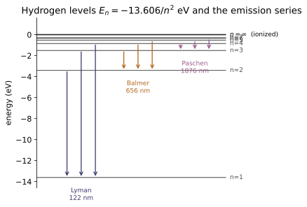
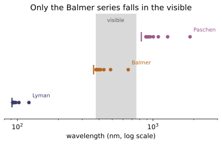
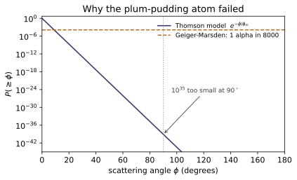
Example problems
Estimate the wavelengths of the first three lines of the Lyman series ($n=2,3,4\to n_o=1$) and the photon energy of each. Use the reduced-mass constant $R_H$, not $R_\infty$. Check: transition_wavelength(1, n, nuclear_mass=M_P)*1e9 gives $121.57,\,102.57,\,97.25$ nm and transition_energy(1, n, nuclear_mass=M_P) gives $10.199,\,12.087,\,12.748$ eV.
From $1/\lambda=R_H(1/1^{2}-1/n^{2})$ with $R_H=1.0967758\times10^{7}$ m$^{-1}$:
The energies follow from $E=hc/\lambda$, or directly from the level differences $E=13.606(1-1/n^{2})$ eV: $10.199$, $12.087$, $12.748$ eV. All three are ultraviolet — the Lyman series lies entirely below 122 nm, which is why hydrogen is transparent to visible light but opaque in the far UV. These match the Check.
For the $n=1$ orbit of hydrogen find (a) the radius in metres, (b) the total energy in eV, and (c) the energy needed to ionize the atom from this state. Check: bohr_radius(1)$=5.2918\times10^{-11}$ m, bohr_energy(1)$=-13.6057$ eV, ionization_energy(1)$=13.6057$ eV.
(a) With $n=1$, $Z=1$ in $r_n=n^{2}h^{2}\epsilon_0/(\pi m_eZe^{2})$,
the Bohr radius, $0.529$ Å. (b) From Eq. (3.5), $E_1=-m_ee^{4}/(8\epsilon_0^{2}h^{2})=-13.606$ eV. (c) Ionization means moving the electron to $n=\infty$, where $E_\infty=0$; the work required is
which is the measured ionization energy of hydrogen [S&F p. 60]. The agreement of (b) with (c) is not a coincidence — it is the definition of the binding energy.
What photon energy raises the hydrogen electron from $n=1$ to $n=2$? Check: transition_energy(1, 2)$=10.2043$ eV.
Note this is 75% of the ionization energy: the first excited state already sits three-quarters of the way to the continuum, because the levels crowd as $1/n^{2}$. A 10.2 eV photon is the Lyman-$\alpha$ line of P1 read backwards — absorption and emission are the same transition.
Compute the de Broglie wavelength $\lambda=h/(m_ev_1)$ of the electron in the first Bohr orbit and compare it with the circumference $2\pi r_1$. What does the comparison say about Bohr's quantization postulate? Check: both equal $3.3249\times10^{-10}$ m; their ratio is $1.000000000000$.
With $v_1=2.1877\times10^{6}$ m/s,
while $2\pi r_1=2\pi(5.2918\times10^{-11})=3.3249\times10^{-10}$ m. They are exactly equal, and the identity is algebraic, not numerical: postulate 2 says $m_evr=nh/2\pi$, so
An allowed orbit is one whose circumference holds a whole number of electron wavelengths — a standing wave that closes on itself. Bohr's ad hoc postulate is de Broglie's condition in disguise, which is why the model works at all and the hint that the real theory is a wave theory (~QM-08).
Find the limiting (smallest) wavelength of the Lyman, Balmer and Paschen series. Check: series_limit_wavelength(n)*1e9 gives $91.18,\,364.71,\,820.59$ nm for $n=1,2,3$.
The limit is the $n\to\infty$ transition, where $1/n^{2}\to0$:
So $\lambda_{\min}=1/R_H=91.18$ nm (Lyman), $4/R_H=364.71$ nm (Balmer) and $9/R_H=820.59$ nm (Paschen). Physically the limit is the ionization edge from level $n_o$: a photon of exactly this wavelength strips the electron to rest at infinity, and anything shorter ionizes it with kinetic energy left over. The Balmer limit at 364.7 nm is where the visible hydrogen lines pile up and the continuum begins.
The mass of a ${}^{1}$H atom is $1.007825032$ u (Appendix B); a free proton is $1.0072764669$ u and an electron $5.485799\times10^{-4}$ u (Table A.1). Estimate the electron's binding energy from the mass difference, compare it with the Bohr value, and give the fraction of the atom's mass lost on binding. Check: the Bohr binding energy $13.6057$ eV corresponds to $1.4606\times10^{-8}$ u, i.e. $1.449\times10^{-8}$ of the atomic mass.
Adding the constituents,
against the tabulated atom $1.007825032$ u. The difference is
which is right at the last digit of the tabulated masses — the mass table simply does not carry enough figures to resolve it. Converting the Bohr energy instead,
a fraction $1.4606\times10^{-8}/1.007825=1.449\times10^{-8}$ of the atom. This is the point of the problem: chemical/atomic binding changes mass by one part in $10^{8}$, which is why chemists may treat mass as conserved. Nuclear binding changes it by nearly one part in $10^{2}$ (~NE-03) — six orders of magnitude larger, and the reason mass–energy bookkeeping is unavoidable in this trunk.
Show that $v_1/c$ for hydrogen equals the fine-structure constant $\alpha$, and decide whether a non-relativistic treatment is defensible for hydrogen and for hydrogen-like uranium ($Z=92$). Check: fine_structure_constant()$=0.00729735=$bohr_velocity(1)/C, $1/\alpha=137.036$; is_nonrelativistic(1) is True but is_nonrelativistic(1, Z=92) is False.
From $v_n=Ze^{2}/(2\epsilon_0nh)$ with $n=Z=1$,
The relativistic correction enters at order $(v/c)^{2}\approx5\times10^{-5}$, so for hydrogen the classical orbit is good to about one part in $10^{4}$ — S&F's justification on p. 60. But $v_1\propto Z$, so for $Z=92$
giving $\gamma\approx1.35$. Inner-shell electrons in heavy atoms move at appreciable fractions of $c$, which is why K-shell binding energies in lead and uranium (tens of keV) cannot be obtained from the non-relativistic $Z^{2}$ scaling and why ~RE-06 is a prerequisite here.
Thomson's model gives $P(\ge\phi)=e^{-\phi/\phi_m}$ with $\phi_m\simeq1^{\circ}$. Compare its prediction for $\phi\ge90^{\circ}$ with the measured 1 alpha in 8000, and separately show that a classical Rutherford atom would collapse in far fewer than $10^{-9}$ s worth of orbits. Check: thomson_scattering_probability(90.0)$=8.194\times10^{-40}$ versus $1.25\times10^{-4}$ measured — a ratio of $1.5\times10^{35}$; bohr_orbital_period(1)$=1.5198\times10^{-16}$ s.
The Thomson estimate is
against the observed $1/8000=1.25\times10^{-4}$: wrong by a factor of $1.5\times10^{35}$. No amount of experimental error covers 35 orders of magnitude, so the model is wrong — the positive charge must be concentrated hard enough to turn an alpha around, which requires it packed inside $\sim10^{-12}$ cm rather than spread over $10^{-8}$ cm.
For the collapse, the $n=1$ orbital period is
so in the $\sim10^{-9}$ s a classical radiating electron would survive it completes $10^{-9}/1.52\times10^{-16}\approx6.6\times10^{6}$ revolutions — and then the atom is gone. Since atoms manifestly persist, and since the emitted spectrum is discrete rather than the continuum a spiralling charge would radiate, classical electrodynamics must fail inside the atom. That is the pressure Bohr's postulates were invented to relieve.
Run the worked code: cd NE/NE-01_atomic_models/code && python3 atomic_models.py
NE-02 — Nuclear models
NE trunk · NE/NE-02_nuclear_models
Electron scattering shows nuclear matter has constant density: $R=1.1A^{1/3}$ fm, so $A/V=0.179$ nucleons/fm³ for every nuclide, and the nuclear force must saturate. That justifies treating the nucleus as an incompressible drop whose binding energy is a bulk term minus four corrections $$BE=a_vA-a_sA^{2/3}-a_c\frac{Z^{2}}{A^{1/3}}-a_a\frac{(A-2Z)^{2}}{A}-\frac{a_p}{\sqrt A},$$ with $a_v=15.835$, $a_s=18.33$, $a_c=0.714$, $a_a=23.20$ MeV and $a_p=\pm11.2$ MeV (positive odd-odd, negative even-even). Minimising the mass over $Z$ at fixed $A$ gives the line of stability $$Z(A)=\frac{A}{2}\frac{1+(m_n-m_p)c^{2}/4a_a}{1+a_cA^{2/3}/4a_a},$$ which bends neutron-rich as Coulomb repulsion grows ($N/Z$ from 1.00 at $A=20$ to 1.56 at $A=238$). Across an isobar the pairing term splits the masses into two parabolas — even-even below, odd-odd above — which is why odd-$A$ isobars typically have one stable nuclide and even-$A$ isobars two. What the model cannot produce is the extra binding at $Z$ or $N=2,8,20,28,50,82,126$; those residuals (up to +11.7 MeV at ²⁰⁸Pb) are the shell effect.
Key equations
Figures
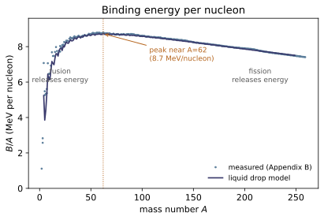
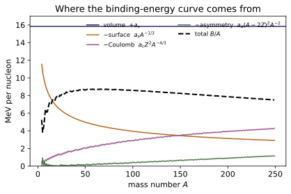
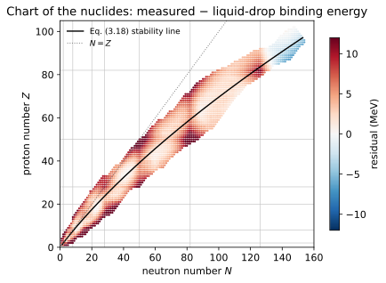
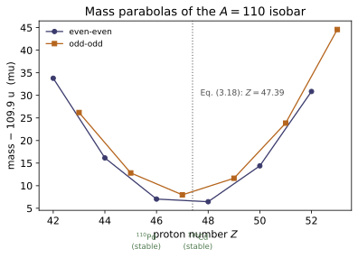
Example problems
Using the nucleon distribution $\rho(r)=\rho_o/\{1+\exp[(r-R)/a]\}$ [Eq. (3.11)], by what fraction does the density fall between $r=R-2a$ and $r=R+2a$? Check: $\rho(R-2a)/\rho_o=0.8808$ and $\rho(R+2a)/\rho_o=0.1192$, a ratio of $0.135$ — an 86.5% drop.
At $r=R\pm2a$ the exponent is $\pm2$, so
The density falls by a factor $0.1192/0.8808=0.135$, i.e. 86.5%, over a span of $4a\approx2$ fm. Two readings matter. First, the nucleus has no sharp edge: the surface region is about 2 fm thick regardless of $A$, which is why "radius" must be defined (half central density). Second, since surface thickness is fixed while $R\propto A^{1/3}$, the fraction of nucleons in the surface falls as $A$ grows — precisely why the surface term $-a_sA^{2/3}$ costs less per nucleon for heavy nuclei, and why $B/A$ rises at small $A$.
Tabulate every contribution to the binding energy for ⁴⁰Ca and ²⁰⁸Pb, and the total. Compare with the measured values. Check: semf_terms(40,20) and semf_terms(208,82); totals $337.27$ and $1624.75$ MeV against measured $342.05$ and $1636.45$ MeV.
For ⁴⁰Ca ($A=40$, $Z=20$, $N=20$, even-even):
| term | value (MeV) | |---|---| | volume $+a_vA$ | $+633.40$ | | surface $-a_sA^{2/3}$ | $-214.39$ | | Coulomb $-a_cZ^2/A^{1/3}$ | $-83.51$ | | asymmetry $-a_a(A-2Z)^2/A$ | $0$ | | pairing $+a_p/\sqrt A$ | $+1.77$ | | total | $+337.27$ |
The asymmetry term vanishes exactly because $N=Z$. For ²⁰⁸Pb ($Z=82$, $N=126$, even-even): volume $+3293.68$, surface $-643.48$, Coulomb $-810.29$, asymmetry $-215.94$, pairing $+0.78$, total $+1624.75$ MeV.
The comparison is the lesson. In ⁴⁰Ca the Coulomb term is 13% of the volume term; in ²⁰⁸Pb it is 25% and nearly equals the surface term. Coulomb repulsion is what eventually stops the chart of the nuclides, and it is the term that makes heavy nuclei fissionable (~NE-09). Against experiment the model is 4.8 MeV low for ⁴⁰Ca and 11.7 MeV low for ²⁰⁸Pb — both are doubly magic, so the shortfall is the shell effect the drop model structurally cannot capture (P7).
Plot, per nucleon and against $A$: the volume term, and the negatives of the surface, asymmetry and Coulomb terms, plus the total $B/A$ ignoring pairing, taking $Z=Z(A)$ from Eq. (3.18). Explain the peak. Check: figures/make_figures.py draws this; the maximum of $B/A$ falls at $A\approx56$ with $B/A\approx8.7$ MeV.
Divide each term by $A$:
The volume term is a constant $15.835$ MeV — the ceiling. The surface term $-a_sA^{-1/3}$ is large and negative at small $A$ and dies away as $A^{-1/3}$: this is the rising part of the curve. The Coulomb term, with $Z\propto A$, behaves as $-a_cA^{2/3}$ per nucleon: negligible when light, dominant when heavy — this is the falling part. The asymmetry term grows too, because $Z(A)$ pulls away from $A/2$.
So $B/A$ is the difference of a decaying surface penalty and a growing Coulomb penalty, and it peaks where their derivatives balance, near $A\approx56$ (test_binding_energy_per_nucleon_peaks_in_the_iron_region). Everything downstream follows: nuclei below the peak release energy by fusing (~NE-10), nuclei above it by fissioning (~NE-09), and iron/nickel is where stellar burning stops (~NE-10 §nucleosynthesis).
Using the Appendix B masses, tabulate $70-M({}^{70}_{Z}\mathrm{X})$ against $Z$ for the $A=70$ chain and identify the stable members. Check: load_atomic_masses() gives, for $Z=28\ldots36$, $70-M = 0.063860,\,0.067591,\,0.074675,\,0.073972,\,0.075750,\,0.069070,\,0.066500,\,0.055380,\,0.043990$ u; most_stable_Z(70)$=31.39$.
Larger $70-M$ means smaller mass, hence more stable. Reading the column, the two maxima are at $Z=30$ ($0.074675$) and $Z=32$ ($0.075750$) — both even-even — while $Z=31$ ($0.073972$, odd-odd) sits below both of them. The stable nuclides at $A=70$ are indeed ⁷⁰Zn ($Z=30$) and ⁷⁰Ge ($Z=32$), and Eq. (3.18) predicts the minimum at $Z=31.39$, between them.
This is the two-parabola picture of §5 of the notes, and it explains the whole pattern: ⁷⁰Ga ($Z=31$) is odd-odd and lies on the upper curve, so it is heavier than both of its even-even neighbours and can decay either way — $\beta^-$ to ⁷⁰Ge or $\beta^+$/EC to ⁷⁰Zn. (It does both, 99.6% $\beta^-$.) An odd-odd nuclide wedged between two even-even ones is the standard configuration for a branching decay, and the same structure at $A=110$ gives the book's Fig. 3.13.
From $R=1.1A^{1/3}$ fm, compute the nucleon number density and convert it to a mass density in kg/m³. Compare with water. Check: nucleon_number_density(238)$=0.1794$ fm⁻³; the mass density is $2.97\times10^{17}$ kg/m³.
For any $A$,
independent of $A$ — the $A$ cancels identically, which is the whole point. Multiplying by the nucleon mass $1.66\times10^{-27}$ kg and converting $1\ \text{fm}^{-3}=10^{45}\ \text{m}^{-3}$,
about $3\times10^{14}$ times the density of water. A teaspoon (5 mL) of nuclear matter would weigh $1.5\times10^{12}$ kg — a billion tonnes. This is the density of a neutron star, which is essentially one enormous nucleus held together by gravity instead of the strong force (~RE-14).
Using the SEMF, show that the Coulomb term eventually defeats the volume term, and estimate where $B/A$ would fall to zero. Check: $B/A$ at $A=238$ is $7.589$ MeV; the Coulomb term for ²⁰⁸Pb is $-810.29$ MeV, a quarter of its $+3293.68$ MeV volume term.
Per nucleon, with $Z\approx0.4A$ for heavy nuclei,
The Coulomb term grows without bound as $A^{2/3}$ while everything else is bounded, so $B/A$ must eventually go negative. Setting the expression to zero:
That is far beyond any observed nuclide, and correctly so — binding does not have to vanish for a nucleus to be unstable, it only has to become unfavourable relative to a decay channel. Alpha emission becomes exothermic well before $B/A$ reaches zero (around $A\approx150$), and spontaneous fission takes over near $Z^{2}/A\approx47$ (for ²³⁸U, $Z^{2}/A=35.6$). The practical limit — bismuth-209 as the heaviest quasi-stable nuclide — is set by those channels, computed in ~NE-04 and ~NE-09, not by the sign of $BE$.
For the doubly magic nuclides ¹⁶O, ⁴⁰Ca, ⁴⁸Ca and ²⁰⁸Pb, compute (measured $BE$) − (SEMF $BE$). What does the sign tell you? Check: $+5.98$, $+4.78$, $+5.91$ and $+11.70$ MeV respectively.
All four residuals are positive: every doubly magic nucleus is more tightly bound than the smooth formula predicts. Since the SEMF is a smooth function of $A$ and $Z$ (polynomials, $A^{2/3}$, $\sqrt A$), it cannot produce a local enhancement at isolated values of $Z$ and $N$ — it can only be fitted to average through them. So the residual is not a fitting deficiency to be tuned away; it is evidence for structure the model does not contain.
That structure is shell closure: at $Z$ or $N=2,8,20,28,50,82,126$ a nucleon energy level fills, the next nucleon must go into a substantially higher level, and the nucleus gains stability exactly as a noble gas does. The largest surplus, $+11.7$ MeV at ²⁰⁸Pb, is the doubly magic closure at $Z=82$, $N=126$ — which is why ²⁰⁸Pb is the heaviest stable nuclide and why so many decay chains terminate there (~NE-07).
Show from the SEMF that even-even and odd-odd members of the same isobar lie on curves separated by $2a_p/\sqrt A$, and confirm the direction of the split against the $A=70$ data of P4. Check: pairing_term(110,46) - pairing_term(110,45) $=2\times11.2/\sqrt{110}$; in P4, $Z=31$ (odd-odd) is heavier than both $Z=30$ and $Z=32$ (even-even).
The pairing contribution to $BE$ is $-a_p/\sqrt A$ with $a_p=-11.2$ MeV for even-even and $+11.2$ MeV for odd-odd. So
which for $A=70$ is $2.68$ MeV. More binding means less mass, so the even-even curve lies below the odd-odd curve by $2.68$ MeV $=0.00288$ u.
The P4 table confirms both the direction and roughly the size: $Z=31$ (odd-odd) has $70-M=0.073972$ u while its even-even neighbours $Z=30$ and $Z=32$ have $0.074675$ and $0.075750$ u — the odd-odd nuclide is heavier than both, by $0.0007$ and $0.0018$ u. (The measured gaps are smaller than the crude $0.00288$ u because the parabola's own curvature works against the split on one side.) Had the sign convention been reversed, ⁷⁰Ga would be predicted lighter than both neighbours and therefore stable — the opposite of reality, and a good reason to check this sign whenever borrowing SEMF constants from another textbook.
Run the worked code: cd NE/NE-02_nuclear_models/code && python3 nuclear_models.py
NE-03 — Binding energy and separation energies
NE trunk · NE/NE-03_binding_energy
A nucleus weighs less than its parts, and the deficit is the binding energy. Appendix B holds atomic masses, so the working form adds $Z$ electrons to both sides — $Z$ protons become $Z$ hydrogen atoms, the electron binding energies cancel to one part in $10^{6}$, and $$BE=\big[ZM({}^{1}\mathrm{H})+(A-Z)m_n-M(A,Z)\big]c^{2},\qquad c^{2}=931.494\ \text{MeV/u}.$$ Uranium's mass defect is 1.93 u — 0.8% of the atom, against $1.4\times10^{-8}$ u for atomic binding. $BE/A$ peaks at ⁶²Ni, 8.7945 MeV/nucleon (not ⁵⁶Fe, which is 0.004 MeV lower), so both fusion and fission release energy. The marginal quantity is more informative than the average: the separation energy $$S_n(A,Z)=BE(A,Z)-BE(A-1,Z)$$ staggers by 3–4 MeV between even and odd $N$ (pairing, measured with no model in between) and falls off a cliff just past a magic number (shell closure). $S_\alpha$ goes negative above $A\approx150$, which is where alpha decay becomes energetically allowed.
Key equations
Figures
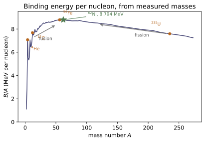
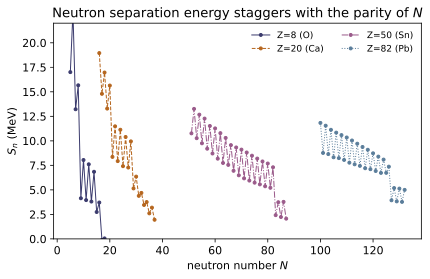
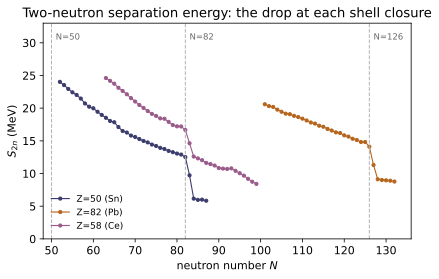
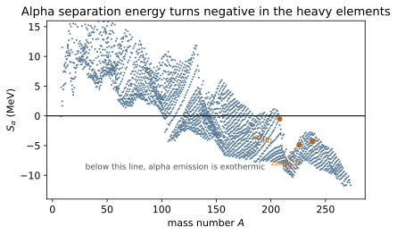
Example problems
Compute the rest-mass energy of 1 u directly from $E=mc^{2}$. Check: U_MEV$=931.494043$ MeV.
One atomic mass unit is $1.6605389\times10^{-27}$ kg (Table A.1), so
and dividing by $1.60217653\times10^{-19}$ J/eV,
This single number does all the work in this module: every mass difference in u becomes an energy in MeV by multiplying by it. Worth committing to memory as "a nucleon is about 931.5 MeV, and a milli-u is about 0.93 MeV."
From Appendix B masses, find $BE$ and $BE/A$ for ¹⁶O, ¹⁷O, ⁵⁶Fe and ²³⁵U. What is the significance? Check: $BE=127.619,\,131.763,\,492.254,\,1783.870$ MeV and $BE/A=7.9762,\,7.7507,\,8.7902,\,7.5909$ MeV.
Apply $BE=[ZM(^1\mathrm{H})+(A-Z)m_n-M]c^{2}$. For ¹⁶O:
The others follow identically. The significance is the shape: ⁵⁶Fe sits at the top (8.79 MeV/nucleon) while ¹⁶O below it and ²³⁵U above it are both less bound per nucleon. Any process that moves nucleons toward the peak releases the difference — fusion from the light side, fission from the heavy side. Note also that ¹⁷O is less bound per nucleon than ¹⁶O despite being heavier: adding a neutron to a doubly magic core lowers the average (P3).
Find $BE/A$ and $S_n$ for ¹⁶O and ¹⁷O and explain the contrast. Check: $S_n(^{16}\mathrm{O})=15.664$ MeV, $S_n(^{17}\mathrm{O})=4.143$ MeV, against averages of $7.976$ and $7.751$ MeV.
From Eq. (4.14), $S_n=BE(A,Z)-BE(A-1,Z)$:
The average changes by a fraction of an MeV between the two nuclides; the marginal cost changes by a factor of 3.8. That is the whole reason to care about separation energies. ¹⁶O is doubly magic ($Z=N=8$): its last neutron completes a closed shell and is held by 15.7 MeV. The 17th neutron must start a new shell and is held by only 4.1 MeV — it is nearly falling out.
Practically, this is why ¹⁷O and ¹⁸O are useful neutron sources under alpha bombardment and why $S_n$, not $BE/A$, tells you whether neutron capture on a given nuclide is worth much energy (~NE-13).
The proton and hydrogen-atom masses are known to 10 significant figures. Estimate $BE_e$ in ¹H from them, and compare with the Bohr model. Check: $(m_p+m_e-M(^1\mathrm{H}))c^{2}=13.70$ eV, against Bohr's 13.606 eV.
The atom is lighter than its parts by the electron binding:
The bracket is $1.47\times10^{-8}$ u, giving $BE_e=13.70$ eV against the measured and Bohr-predicted 13.606 eV (~NE-01 §3).
The discussion the problem asks for is about significant figures, not physics. The three masses agree to their first seven digits; the entire answer lives in digits 8–10. A one-unit change in the last tabulated digit of $M(^1\mathrm{H})$ moves the answer by 0.09 eV — which is exactly the size of the 0.1 eV discrepancy above. So the mass-difference route reproduces the Bohr value to within its own precision, and no better. This is why chemical energies are never computed from mass tables, and why nuclear energies always are: nuclear mass defects are 6 orders of magnitude larger and sit in digits 3–5 instead.
Find the binding energy of ³He and its neutron separation energy. Check: $BE(^3\mathrm{He})=7.718$ MeV; has_nuclide(2, 2) is False, and proton_separation_energy(3, 2)$=5.493$ MeV.
The binding energy is routine:
a mere 2.57 MeV/nucleon — ³He is very loosely bound, which is why the next step, ${}^3\mathrm{He}+n\to{}^4\mathrm{He}$, releases so much.
The neutron separation energy, however, has no value. Removing the single neutron from ³He leaves ${}^2_2\mathrm{He}$ — the diproton — which is unbound and therefore absent from Appendix B; neutron_separation_energy(3, 2) raises a KeyError rather than inventing a number. The physically meaningful quantity is the proton separation energy,
which removes a proton and leaves a deuteron. That the diproton does not bind while the deuteron does is a statement about the spin dependence of the nuclear force and the Pauli principle — two protons in the same spatial state must have opposite spins, and the nuclear force is too weak to bind that configuration.
For ⁵⁶Fe, find the energy needed to (a) remove one neutron, (b) remove one proton, (c) dismantle it completely, and (d) fission it symmetrically into two ²⁸Al. Check: $S_n=11.197$, $S_p=10.184$, $BE=492.254$ MeV; $2BE(^{28}\mathrm{Al})-BE(^{56}\mathrm{Fe})=-26.90$ MeV.
(a) $S_n=BE(^{56}\mathrm{Fe})-BE(^{55}\mathrm{Fe})=11.20$ MeV. (b) $S_p=BE(^{56}\mathrm{Fe})-BE(^{55}\mathrm{Mn})=10.18$ MeV. (c) Complete dismantling costs the full binding energy, $492.25$ MeV — the sum of 55 successive separation energies, and about 44 times the cost of the first one. (d) Symmetric fission into two ²⁸Al ($Z=13$ each, $2\times13=26$ ✓):
The sign in (d) is the point. Fissioning iron costs 26.9 MeV — it is endothermic, because iron already sits at the top of the $BE/A$ curve and both fragments are less bound per nucleon than the parent. Compare ²³⁵U in P7, where the same arithmetic gives $+194$ MeV. Fission is not a property of "big nuclei"; it is a property of nuclei on the far side of the binding-energy peak.
Estimate the energy released when ²³⁵U splits into two fragments near $A=117$. Check: $BE/A=7.5909$ MeV for ²³⁵U and $8.4178$ MeV for ¹¹⁷Pd; the difference times 235 is $194.3$ MeV.
Every one of the 235 nucleons moves from a nuclide bound at 7.591 MeV/nucleon to one bound at about 8.418 MeV/nucleon, so
This is the famous "about 200 MeV per fission" — and the estimate needs nothing but the $BE/A$ curve. The exact figure depends on the fragment pair (real fission is asymmetric) and on how much goes to neutrons, gammas and neutrino-carrying beta decays; ~NE-09 does the full budget, which comes to $\approx200$ MeV of which about 190 MeV is recoverable as heat. For scale, a chemical reaction releases a few eV per event: fission is $10^{8}$ times more energetic per event.
Show that ²³⁸U is unstable to alpha emission and compute the Q-value; then explain why ²⁰⁸Pb, with $S_\alpha=-0.52$ MeV, is nonetheless treated as stable. Check: alpha_separation_energy(238, 92)$=-4.270$ MeV, so $Q_\alpha=+4.270$ MeV.
The alpha separation energy is
negative, so emitting an alpha releases $Q_\alpha=4.27$ MeV. (The measured ²³⁸U alpha energy is 4.27 MeV — the agreement is exact because this is the same quantity.) The alpha is unusually favourable as an emitted fragment because ⁴He is itself tightly bound at 7.07 MeV/nucleon; emitting a single neutron from ²³⁸U would cost $+6.15$ MeV instead.
²⁰⁸Pb has $S_\alpha=-0.52$ MeV, so it too is energetically permitted to alpha decay. It does not, observably, because the emitted alpha must tunnel through the Coulomb barrier, and the tunnelling probability depends exponentially on $Q_\alpha$. Dropping $Q$ from 4.27 MeV to 0.52 MeV lengthens the half-life by something like 40 orders of magnitude — from $4.5\times10^{9}$ years to far beyond the age of the universe. Energetic instability sets which decays are possible; the barrier sets which ones happen on observable timescales, and the gap between the two is the entire content of Gamow's theory of alpha decay (~NE-05).
Run the worked code: cd NE/NE-03_binding_energy/code && python3 binding_energy.py
NE-04 — Nuclear reactions and Q-values
NE trunk · NE/NE-04_q_values
Conserving total energy including rest mass gives $$Q=\big[\textstyle\sum(\text{reactant masses})-\sum(\text{product masses})\big]c^{2},$$ positive for exothermic reactions and negative for endothermic ones. The physics is one line; the bookkeeping is the module. Appendix B holds atomic masses, so a reaction that changes the proton number must be written with every charged particle replaced by its neutral-atom counterpart (a proton by ¹H, an alpha by ⁴He) — otherwise the electron count does not balance and $Q$ is wrong by exactly $m_ec^{2}=0.511$ MeV per unbalanced electron. Q is antisymmetric under reversal, additive along a chain, and equal to $\sum BE(\text{products})-\sum BE(\text{reactants})$, which makes ~NE-03's $B/A$ curve the driver of nuclear energetics. An excited product costs exactly its excitation energy, $Q^{}=Q_{\text{gs}}-E^{}$. And $Q>0$ never means "easy": a charged projectile still has to cross a Coulomb barrier of order MeV, which is why reactor physics is built on neutrons.
Key equations
Figures
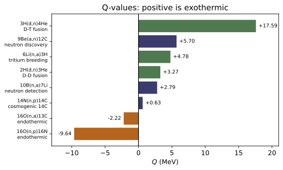
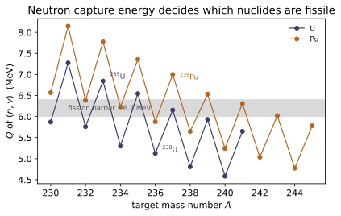
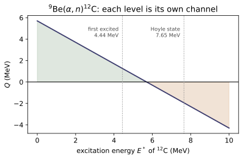
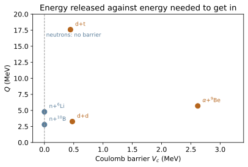
Example problems
Fill in the missing species, using conservation of nucleon number and charge: (a) $^{238}_{92}\mathrm{U}+{}^{1}_{0}n\to(?)$; (b) $^{14}_{7}\mathrm{N}+{}^{1}_{0}n\to(?)+{}^{1}_{1}\mathrm{H}$; (c) $^{226}_{88}\mathrm{Ra}\to(?)+{}^{4}_{2}\mathrm{He}$; (d) $(?)\to{}^{230}_{90}\mathrm{Th}+{}^{4}_{2}\mathrm{He}$. Check: check_conservation returns (0, 0) for each completed reaction; the Q-values are (b) $+0.626$, (c) $+4.871$, (d) $+4.858$ MeV.
Balance $A$ and $Z$ separately. (a) $A: 238+1=239$, $Z: 92+0=92$ → $^{239}_{92}\mathrm{U}$. This is radiative capture, and its Q-value is $S_n(^{239}\mathrm{U})=4.806$ MeV (P4). (b) $A: 14+1=15$, minus the proton's 1 → 14; $Z: 7+0=7$, minus 1 → 6. So $^{14}_{6}\mathrm{C}$, and the reaction is $^{14}\mathrm{N}(n,p)^{14}\mathrm{C}$ with $Q=+0.626$ MeV. This is the reaction that manufactures atmospheric $^{14}$C from cosmic-ray neutrons — the basis of radiocarbon dating (~NE-07). (c) $A: 226-4=222$, $Z: 88-2=86$ → $^{222}_{86}\mathrm{Rn}$, $Q=+4.871$ MeV. Radium decaying to radon, the step that puts a gas into the uranium chain and makes radon a health problem (~NE-18). (d) $A: 230+4=234$, $Z: 90+2=92$ → $^{234}_{92}\mathrm{U}$, $Q=+4.858$ MeV.
All four Q-values are positive, as they must be for decays that are observed to happen spontaneously.
Find the net energy released by (a) $^2\mathrm{H}+{}^2\mathrm{H}\to{}^3\mathrm{He}+n$ and (b) $^2\mathrm{H}+{}^3\mathrm{H}\to{}^4\mathrm{He}+n$. Check: $+3.2689$ MeV and $+17.5893$ MeV.
(a) In atomic masses,
(b) $Q=[2.0141018+3.0160493-4.0026032-1.0086649]\times931.494=+17.589$ MeV.
The ratio is the point. D–T releases 5.4 times more energy than D–D per reaction, and it also has the largest cross section at accessible temperatures, which is why every fusion reactor design burns D–T rather than pure deuterium (~NE-24) — despite tritium being radioactive, scarce, and requiring breeding from lithium (P3). The energy comes overwhelmingly from the tight binding of the $^4$He product: $B/A=7.07$ MeV against 1.11 MeV for the deuteron (~NE-03).
Compute $Q$ for $^{6}\mathrm{Li}(n,\alpha)^{3}\mathrm{H}$ and explain its role in a fusion reactor. Check: $Q=+4.7829$ MeV.
Exothermic, and driven by a neutron, so there is no Coulomb barrier — the reaction proceeds readily at thermal energies (its cross section is 941 b, the largest entry in ../data_tables/C1_thermal_neutron_cross_sections.csv).
This closes the D–T fuel cycle. Each D–T fusion (P2) emits one 14.1 MeV neutron; if that neutron is caught in a lithium blanket, it regenerates the tritium that was burned, and releases a further 4.8 MeV as a bonus. Tritium has a 12.3 year half-life and essentially no natural abundance, so a D–T reactor that did not breed its own would have no fuel. The blanket is not an accessory to a fusion reactor; it is part of the fuel cycle (~NE-24).
Compute the $(n,\gamma)$ Q-values for $^{235}$U, $^{238}$U and $^{1}$H, and compare the first two with the $\approx6.2$ MeV fission barrier of the compound nucleus. Check: $Q=6.5448$, $4.8062$ and $2.2246$ MeV.
For radiative capture the Q-value is the neutron separation energy of the product,
Capturing a neutron on $^{235}$U forms $^{236}$U$^{}$ with $6.545$ MeV of excitation; on $^{238}$U it forms $^{239}$U$^{}$ with only $4.806$ MeV.
The fission barrier of these compound nuclei is about 6.2 MeV. So a zero-energy thermal neutron already excites $^{236}$U$^{}$ above its barrier — $^{235}$U is fissile. The same neutron leaves $^{239}$U$^{}$ 1.4 MeV short, so $^{238}$U requires a neutron with over an MeV of kinetic energy — it is merely fissionable, and only by fast neutrons. That 1.7 MeV difference in $S_n$ is the entire reason natural uranium must be enriched, and it traces back to pairing: $^{236}$U has an even neutron number and gains the pairing energy, $^{239}$U has an odd one and does not (~NE-02, ~NE-03).
The third value is a useful landmark: $^{1}\mathrm{H}(n,\gamma)^{2}\mathrm{H}$ releases $2.2246$ MeV, the deuteron binding energy. That 2.22 MeV gamma is emitted whenever a neutron is captured in water or any hydrogenous shield, and it is one of the standard signatures in radiation detection (~NE-15).
Compute $Q$ for $^{16}\mathrm{O}(n,p)^{16}\mathrm{N}$ correctly, then again using a bare proton mass, and account for the difference. Check: $-9.6381$ MeV against $-9.1271$ MeV; the gap is $0.5110$ MeV.
With the neutral-atom substitution [S&F Eq. (4.25)],
Using $m_p$ in place of $M(^1\mathrm{H})$ removes one electron mass from the product side, so $Q$ comes out larger by
The error is systematic, not random, and it is 5% of this Q-value. The reason is that the left side has 8 bound electrons ($^{16}$O) and the right side only 7 ($^{16}$N) plus a bare proton — one electron has vanished from the books. Writing the freed electron explicitly and pairing it with the proton into a $^1$H atom restores the balance, at the cost of an ignorable 13.6 eV of atomic binding. The general rule: replace every charged particle by its neutral atom, then subtract atomic masses.
For $^{9}\mathrm{Be}(\alpha,n)^{12}\mathrm{C}$, find $Q$ when $^{12}$C is left in its 4.44 MeV first excited state and in the 7.65 MeV Hoyle state. Check: $+1.2611$ MeV and $-1.9489$ MeV, against $+5.7011$ MeV to the ground state.
An excited nucleus is heavier by exactly its excitation energy, so $Q^{}=Q_{\text{gs}}-E^{}$:
The ground-state channel is exothermic and open at any alpha energy (above the Coulomb barrier). The 4.44 MeV channel is still exothermic but yields a much slower neutron. The 7.65 MeV channel is endothermic and simply closed unless the incident alpha brings at least 1.95 MeV of extra energy.
Each excited state therefore opens at its own threshold, and a plot of neutron yield against alpha energy shows a staircase, with a new step wherever another level becomes accessible. That structure in measured cross sections is a direct map of the product's level scheme (~NE-13). The 7.65 MeV Hoyle state, incidentally, is the resonance that lets three alphas fuse into $^{12}$C in red giants and so makes carbon-based chemistry possible (~NE-10).
Compute Coulomb barriers for d+d, p+p and α+α, and reconcile them with the positive Q-values of P2. Check: $0.476$, $0.600$ and $1.512$ MeV.
With $V_c=1.43996\,Z_1Z_2/R$ MeV and $R=1.2(A_1^{1/3}+A_2^{1/3})$ fm (the nuclear-radius coefficient of S&F Eq. (1.7), which makes this the 1.20 MeV form of S&F Eq. (6.19) — ~NE-08):
and similarly $0.600$ MeV for p+p and $1.512$ MeV for α+α.
So D–D fusion releases 3.27 MeV but the two deuterons must first be pushed to within 3.0 fm of each other against 0.48 MeV of repulsion. In a thermal plasma $kT=0.48$ MeV corresponds to $6\times10^{9}$ K — far above what any reactor achieves. Fusion works at all only because (i) the Maxwellian has a high-energy tail and (ii) the barrier is tunnelled, not climbed, giving the Gamow peak (~NE-10). The lesson generalises: $Q>0$ tells you a reaction is energetically allowed, and nothing about its rate. Rates need cross sections (~NE-11).
Neutron-induced reactions have $Z_1=0$ and therefore no barrier at all, which is why P3 and P4 proceed at thermal energies while P2 needs $10^{8}$ K. That asymmetry is the reason reactors are built around neutrons.
For $^{16}\mathrm{O}(n,\alpha)^{13}\mathrm{C}$, state the naive threshold and explain why the true one is higher. Check: threshold_energy_naive returns $2.2156$ MeV $=|Q|$.
$Q=-2.216$ MeV, so at least $2.216$ MeV must be supplied — that is what threshold_energy_naive returns, and it is a lower bound only.
The reason it is not the answer: momentum must also be conserved. In the laboratory the incident neutron carries momentum, so the products cannot be created at rest — they must retain the centre-of-mass motion, and that kinetic energy is unavailable for the reaction. Only the energy in the centre-of-mass frame counts, and for a projectile $x$ on a stationary target $X$,
so here $E_{\text{th}}\approx2.216(1+1/16)=2.355$ MeV — about 6% higher. The correction grows as the projectile approaches the target in mass, and it is derived properly in ~NE-08. Quoting $|Q|$ as a threshold is one of the standard errors in this subject, which is why the function that returns it says naive in its name.
Run the worked code: cd NE/NE-04_q_values/code && python3 q_values.py
NE-05 — Radioactive decay modes
NE trunk · NE/NE-05_decay_modes
Every decay Q-value is a difference of atomic masses, but the electron bookkeeping differs by mode — and that is the module:
$$Q_\alpha=M(\mathrm{P})-M(\mathrm{D})-M(^4\mathrm{He}),\qquad Q_{\beta^-}=M(\mathrm{P})-M(\mathrm{D}),$$ $$Q_{\beta^+}=M(\mathrm{P})-M(\mathrm{D})-2m_e,\qquad Q_{\mathrm{EC}}=M(\mathrm{P})-M(\mathrm{D}).$$
The $2m_ec^{2}=1.022$ MeV penalty on positron emission is not pedantry: since $\beta^+$ and EC connect the same pair, a parent with $0<Q_{\mathrm{EC}}<1.022$ MeV can only capture — which is exactly why ⁷Be, ⁵¹Cr, ⁵⁵Fe, ¹²⁵I and ¹⁴⁵Sm are pure EC emitters. Alpha decay is two-body, so the alpha emerges with a sharp $E_\alpha=Q\,A_D/(A_D+4)\approx0.98Q$; beta decay is three-body, so the electron gets a continuous spectrum whose endpoint is $Q$. Both are checked against Appendix D: Q from masses reproduces the measured beta endpoints of ³H, ¹⁴C, ³²P and ⁹⁰Sr to better than 0.3 keV, and for ⁶⁰Co the endpoint plus the two-gamma cascade closes on $Q$ to 0.3 keV out of 2824.
Key equations
Figures
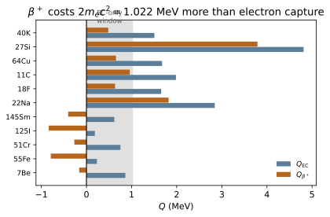
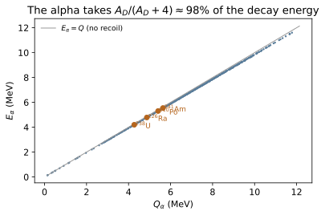
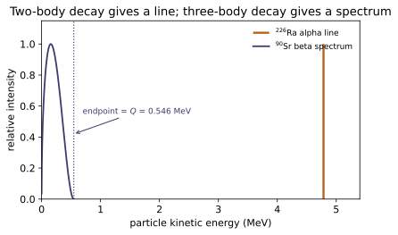
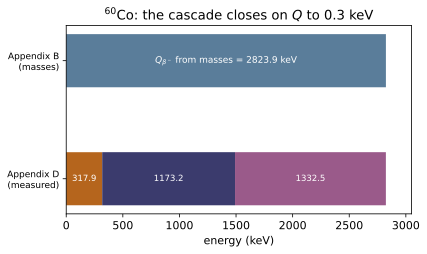
Example problems
Identify the decay and give the total kinetic energy of the products. Check: q_alpha(210, 84)$=5.4071$ MeV; alpha_kinetic_energy(210, 84)$=5.3040$ MeV.
Alpha decay. Balancing, $A: 210-4=206$ and $Z: 84-2=82$, so the daughter is $^{206}_{82}\mathrm{Pb}$ — stable lead, the end of the uranium series.
which is the total kinetic energy of the products. It divides as $E_\alpha=Q\,M_D/(M_D+M_\alpha)=5.3040$ MeV to the alpha and $0.1031$ MeV to the recoiling lead. Polonium-210 is the classic pure alpha emitter: one sharp 5.30 MeV line and essentially no gammas, which is what makes it both a convenient calibration source and notoriously hazardous if ingested (~NE-18).
Check: q_beta_minus(38, 16)$=2.9365$ MeV.
Beta-minus. $A$ is unchanged and $Z$ rises by one, so the daughter is $^{38}_{17}\mathrm{Cl}$. Atomic masses cancel with no correction [Eq. (5.14)]:
That 2.94 MeV is shared between the electron and the antineutrino, so the electron's energy is continuous from 0 to 2.9365 MeV, with the endpoint the only sharp feature. The total kinetic energy of the products is $Q$ in every decay, but no single product has a fixed share — the contrast with P1.
Check: q_beta_plus(27, 14)$=3.7904$ MeV; q_electron_capture(27, 14)$=4.8124$ MeV.
Positron emission, so the parent has the same $A$ and one more proton: $^{27}_{14}\mathrm{Si}$. With the two-electron-mass penalty [Eq. (5.18)]:
Since $Q_{\mathrm{EC}}=4.81$ MeV comfortably exceeds 1.022 MeV, both positron emission and electron capture are open here and the nuclide branches (it is predominantly $\beta^+$). Note the total kinetic energy released to the charged products is 3.79 MeV, not 4.81 — the missing 1.02 MeV went into creating the positron and shedding an electron, and it reappears as two 511 keV annihilation photons when the positron stops (~NE-27, the basis of PET).
Check: q_electron_capture(145, 62)$=+0.6166$ MeV but q_beta_plus(145, 62)$=-0.4053$ MeV.
$Z$ falls by one at constant $A$, so this is either $\beta^+$ or EC. Test both:
$Q_{\beta^+}<0$, so positron emission is energetically forbidden and the missing product is a neutrino: the decay is electron capture,
This is the 1.022 MeV window of §2 of the notes in action. Because $Q_{\mathrm{EC}}$ lands between 0 and 1.022 MeV, capture is the only channel, and the only detectable radiations are the daughter's x-rays and Auger electrons as the K-shell vacancy fills.
Check: q_neutron_emission(137, 54)$=-4.0258$ MeV, so with the excitation $Q=-4.0258+6.71=+2.684$ MeV.
Neutron emission: $A$ falls by one, $Z$ is unchanged, so the daughter is $^{136}_{54}\mathrm{Xe}$. From the ground state the decay is forbidden,
which is simply minus the neutron separation energy of $^{137}$Xe (~NE-03). But the nucleus starts 6.71 MeV above its ground state, and that excitation is available:
This is the mechanism of delayed neutrons. $^{137}$Xe is produced by the beta decay of the fission product $^{137}$I, and it is born excited above its neutron separation energy, so it promptly sheds a neutron. Those neutrons appear on the timescale of the precursor's beta decay — seconds, not microseconds — and they are what makes a reactor controllable (~NE-20). Without them, reactor period would be set by the ~$10^{-4}$ s prompt neutron lifetime and no mechanical control system could keep up.
Check: q_proton_emission(108, 52)$=-2.3148$ MeV, so with the excitation $Q=+1.085$ MeV.
Both $A$ and $Z$ fall by one, so the emitted particle is a proton. Using the neutral-atom substitution (the proton is charged to a $^1$H atom, ~NE-04):
forbidden from the ground state, but with $E^{*}=3.4$ MeV supplied,
This is delayed proton emission, the proton-rich mirror of P5, and it occurs for the same reason: beta decay populates a state above the particle separation energy. It is a signature of nuclides far to the proton-rich side of the valley of stability (~NE-02).
Check: the ejected electron carries $0.125-0.00833=0.1167$ MeV.
Neither $A$ nor $Z$ changes, and an electron is emitted: this is internal conversion, not beta decay. The excited nucleus transfers its energy directly to a K-shell electron rather than emitting a photon, and the electron leaves with the excitation energy minus its own binding:
The daughter is $^{60}_{28}\mathrm{Ni}$ in its ground state, plus a K-shell vacancy that promptly fills, emitting nickel x-rays or Auger electrons.
The diagnostic difference from beta decay is decisive: conversion electrons are monoenergetic (one energy per shell — K, L, M lines), while beta electrons are continuous. Seeing sharp lines on top of a beta continuum is how internal conversion is identified, and Appendix D lists the two groups separately for exactly this reason (conversion_auger_electron versus beta).
A stationary nucleus of mass $m_n$ de-excites from $E^{}$ by emitting a photon. Show $E_\gamma<E^{}$, derive the relation, and check that the difference is negligible. Check: for $E^{}=1.3325$ MeV on a mass-60 nucleus, $E^{}-E_\gamma=15.9$ eV.
The photon carries momentum $p_\gamma=E_\gamma/c$, so the nucleus must recoil with equal and opposite momentum, taking kinetic energy $E_R=p^{2}/2m_n=E_\gamma^{2}/2m_nc^{2}$. Energy conservation gives
so $E_\gamma<E^{*}$ necessarily — some of the excitation always goes into recoil. Solving the quadratic for $E_\gamma$,
the expansion holding because $E^{*}\ll m_nc^{2}$.
For the 1.3325 MeV gamma of $^{60}$Ni, $m_nc^{2}=59.93\times931.49=55{,}825$ MeV, so
That is 12 parts per million — utterly negligible for any energy accounting, which is why q_isomeric_transition simply returns $E^{}$. It is not* negligible for resonant absorption, though: 15.9 eV vastly exceeds the natural linewidth of the state, so a free nucleus cannot reabsorb its own gamma. Locking the nucleus into a crystal lattice removes the recoil (the whole lattice takes it) and restores resonance — the Mössbauer effect.
Run the worked code: cd NE/NE-05_decay_modes/code && python3 decay_modes.py
NE-06 — Decay kinetics
NE trunk · NE/NE-06_decay_kinetics
One assumption — a constant decay probability per unit time — gives $dN/dt=-\lambda N$ and therefore $N(t)=N_0e^{-\lambda t}$, and everything else is a rearrangement: $T_{1/2}=\ln2/\lambda$, mean life $1/\lambda=1.443\,T_{1/2}$, waiting-time density $\lambda e^{-\lambda t}$, and activity $A=\lambda N$. Decay is memoryless: survival to $t$ does not depend on prior age, so a nucleus has no meaningful age. What is measured is activity, in becquerels (one decay per second) or curies ($3.7\times10^{10}$ Bq, historically one gram of ²²⁶Ra — which the code reproduces as 0.989 Ci/g, the 1% gap being a later revision of radium's half-life). Specific activity goes as $1/T_{1/2}$, spanning ten orders of magnitude from ³H ($10^{4}$ Ci/g) to ²³⁸U ($10^{-7}$ Ci/g): the most intensely radioactive nuclides are the ones that vanish fastest, and that trade-off organises radiological protection and waste management. Competing channels add rates, not half-lives.
Key equations
Figures
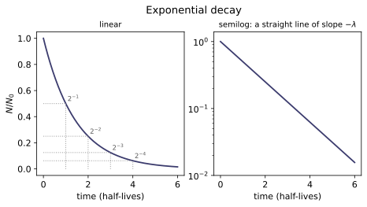
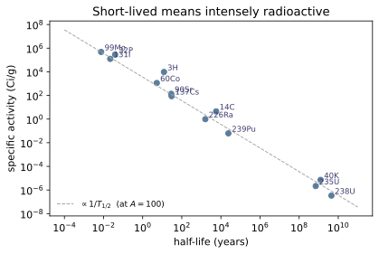
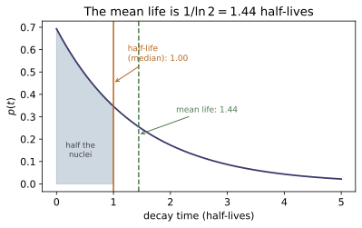
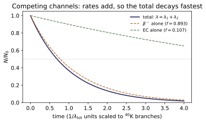
Example problems
$^{40}$K has a half-life of 1.29 Gy. Find $\lambda$ and the mean lifetime. Check: $\lambda=1.7027\times10^{-17}$ s⁻¹; mean life $5.873\times10^{16}$ s $=1.861$ Gy.
With $T_{1/2}=1.29\times10^{9}\times3.156\times10^{7}$ s $=4.071\times10^{16}$ s,
The mean life is $1/\ln2=1.443$ times the half-life — not equal to it. ⁴⁰K is the dominant source of natural radioactivity in the human body (about 4000 Bq in an adult, from the potassium in muscle), and its 1.29 Gy half-life, comparable to the age of the Earth, is why it is still around at all.
An activity falls by 30% in one week. What is the half-life? Check: $\lambda=0.05095$ d⁻¹, $T_{1/2}=13.60$ d.
"Decreases by 30%" means 70% remains, so
Equivalently, half_lives_elapsed(0.70)$=0.5146$ half-lives elapsed in 7 days, so $T_{1/2}=7/0.5146=13.60$ d. Note that this measurement needs no knowledge of the sample size, the detector efficiency or the geometry — a ratio of activities cancels all of them, which is why decay-curve fitting is such a robust way to identify a nuclide (~NE-16).
$^{132}$I decays by $\beta^-$ to $^{132}$Xe with a 2.3 h half-life. Find the decay constant, and the fraction of a sample remaining after 24 hours. Check: $\lambda=8.372\times10^{-5}$ s⁻¹ $=0.3014$ h⁻¹; after 24 h, $7.3\times10^{-4}$ remains.
$\lambda=\ln2/2.3\ \text{h}=0.3014$ h⁻¹ $=8.372\times10^{-5}$ s⁻¹. After 24 h, $n=24/2.3=10.43$ half-lives have passed, so
Roughly one part in 1400. The practical reading: ten half-lives reduces a sample by a factor of about 1000, which is the rule of thumb behind "hold it for ten half-lives and it is gone." For ¹³²I that is a day; for ¹³⁷Cs it is three centuries; for ²³⁹Pu it is a quarter of a million years (~NE-23).
Find the mass of $^{32}$P (half-life 14.28 d) in a 5 mCi source. Check: $A=1.85\times10^{8}$ Bq, $N=3.293\times10^{14}$ atoms, $m=1.75\times10^{-8}$ g.
Convert to becquerels: $5\times10^{-3}\times3.7\times10^{10} =1.85\times10^{8}$ decays/s. With $\lambda=\ln2/(14.28\times86400)=5.618\times10^{-7}$ s⁻¹,
Seventeen nanograms. This is the recurring surprise of radioactive sources: a clinically or industrially useful activity corresponds to an invisible quantity of material. It also means chemical toxicity is almost never the issue for short-lived nuclides — the hazard is entirely radiological (~NE-18).
How many atoms in each? Check: $9.32\times10^{10}$ atoms of $^{24}$Na (14.96 h); $2.44\times10^{23}$ atoms of $^{238}$U (4.468 Gy) — 96.5 g.
$N=A/\lambda=AT_{1/2}/\ln2$ in both cases.
Twelve orders of magnitude apart for the same activity. A vial of ²⁴Na holding 0.004 µg is as "radioactive" as a 96 gram lump of uranium. This is the inversion of §3 of the notes seen from the other side: activity measures decay rate, and buying the same rate from a long-lived nuclide costs enormously more material. It is also why natural uranium can be handled with gloves while a comparable activity of a short-lived fission product cannot.
A specimen contained $10^{12}$ atoms of $^{14}$C in 1986. What was its activity? Check: $3.853$ Bq $=231.2$ disintegrations per minute.
With $T_{1/2}=5700$ y $=1.799\times10^{11}$ s, $\lambda=3.853\times10^{-12}$ s⁻¹, so
Under four decays per second from a trillion atoms — the consequence of a 5700-year half-life. This is exactly why radiocarbon dating is hard: the signal is a handful of counts per minute against a cosmic-ray and detector background of the same order, so long counting times and heavy shielding are needed (~NE-16 for the counting statistics, ~NE-07 for turning the activity into a date).
$^{40}$K decays 89.28% by $\beta^-$ and 10.72% by EC, with an observed half-life of 1.28 Gy. Find the partial half-life of each channel, and show why they are not what a detector measures. Check: partial_half_life(1.28e9 y, 0.8928)$=1.434$ Gy; partial_half_life(1.28e9 y, 0.1072)$=11.94$ Gy.
Independent channels add rates [Eq. (5.48)]:
So $\lambda_{\beta^-}=0.8928\lambda$ and $\lambda_{\mathrm{EC}}=0.1072\lambda$, giving partial half-lives
Both exceed the observed 1.28 Gy, and neither is measurable on its own: a partial half-life is the half-life the nuclide would have if the other channel were switched off. What is observed is always the total. Adding half-lives directly ($1.434+11.94$, or any average of them) is meaningless — it is the reciprocals that add.
The EC branch matters out of all proportion to its 10.7%: it produces $^{40}$Ar, and since argon is a gas that escapes molten rock but is trapped on solidification, the $^{40}$K/$^{40}$Ar ratio dates the rock's last melting. Potassium–argon dating is how the geological timescale was calibrated (~NE-07).
Show that the mean decay time is $1/\lambda$, and explain the 44% gap. Check: mean_lifetime(t_half=T)/T$=1.442695=1/\ln2$; numerical integration of $p(t)$ confirms both normalisation and mean.
The decay time has density $p(t)=\lambda e^{-\lambda t}$ [Eq. (5.43)] — the probability of surviving to $t$ and then decaying in $dt$. Integrating by parts,
Hence $T_{\text{av}}/T_{1/2}=1/\ln2=1.4427$.
The gap is a mean-versus-median effect. The half-life is by construction the median decay time: half the nuclei are gone by then. But the survivors have an unbounded tail — a few last for many half-lives — and since the distribution is skewed right, the mean sits above the median. The same 1.443 factor appears wherever an exponential does: it is the ratio of mean free path to half-thickness in ~NE-11, and of mean lifetime to half-life in every first-order rate process.
Run the worked code: cd NE/NE-06_decay_kinetics/code && python3 decay_kinetics.py
NE-07 — Decay chains, equilibria and radiodating
NE trunk · NE/NE-07_decay_chains
Adding production to the decay equation, $dN/dt=-\lambda N+Q$, gives $N(t)=N_0e^{-\lambda t}+(Q_0/\lambda)(1-e^{-\lambda t})$: activity saturates at the production rate, 97% of the way there after five half-lives. For a chain, the Bateman solution is a sum of exponentials with coefficients fixed entirely by the decay constants. Two limits dominate practice. When the parent barely outlives the daughter, transient equilibrium sets a fixed ratio $A_2/A_1=\lambda_2/(\lambda_2-\lambda_1)>1$; when it vastly outlives it, secular equilibrium makes every member of the chain carry the same activity — which is why an undisturbed uranium ore holds equal activities of ²³⁸U, ²²⁶Ra and ²²²Rn despite half-lives spanning 4.5 Gy to 3.8 d, and why radon accumulates in basements. Since $A\bmod4$ is conserved along a chain there are exactly four series, and only three survive: the neptunium series' 2.14 My parent has run through 2100 half-lives since the Earth formed. Dating works either by the surviving parent (radiocarbon, good to ~57 ky) or by the accumulated stable daughter (U/Pb, K/Ar, good to billions of years) — the latter needing no initial-amount assumption, but needing the branching fraction for K/Ar.
Key equations
Figures
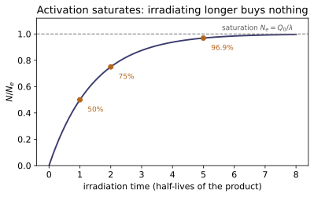
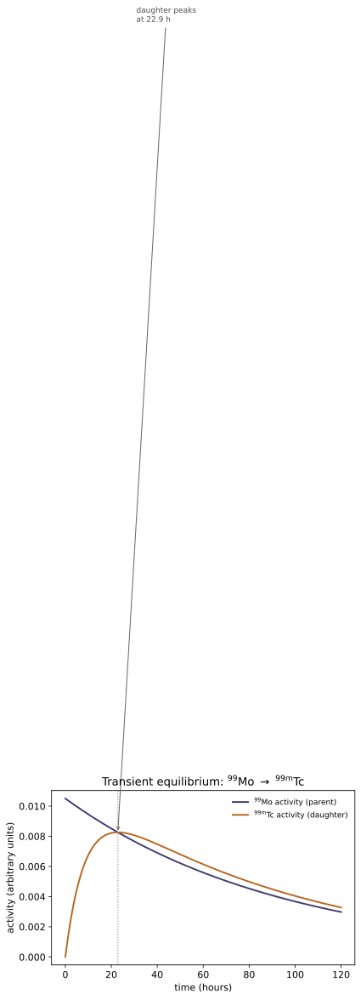
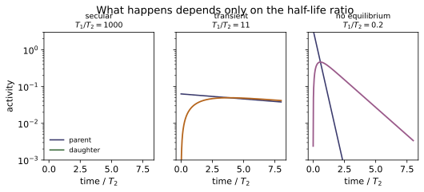
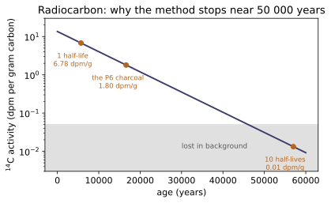
Example problems
A 6.2 mg sample of $^{90}$Sr (28.79 y) sits in secular equilibrium with its daughter $^{90}$Y (64 h). Find the activity of each and the total beta activity. Check: $N=4.149\times10^{19}$, $A(^{90}\mathrm{Sr})=3.165\times10^{10}$ Bq $=0.855$ Ci; the total beta activity is twice that.
The number of atoms is
and with $\lambda=\ln2/(28.79\times3.156\times10^{7}\ \text{s})=7.629\times10^{-10}$ s⁻¹,
The parent outlives the daughter by a factor $28.79\times365.25\times24/64=3940$, comfortably in the secular regime, so $A(^{90}\mathrm{Y})=A(^{90}\mathrm{Sr})$ and the total beta activity is $6.330\times10^{10}$ Bq — twice the strontium alone. Forgetting the daughter halves your answer, and it matters practically: the ⁹⁰Y beta has a 2.28 MeV endpoint against ⁹⁰Sr's 0.546 MeV, so essentially all the penetrating dose from a "strontium-90 source" actually comes from the yttrium (~NE-17).
A sample holds 1.0 GBq of $^{90}$Sr and 0.62 GBq of $^{90}$Y. What happens? Check: the asymptotic ratio $A_2/A_1=\lambda_2/(\lambda_2-\lambda_1)=1.000254$; the daughter reaches its maximum at $t_{\max}=765$ h.
The daughter starts below equilibrium (0.62 versus 1.0 GBq), so it grows. Its approach is governed by its own half-life, not the parent's: after $n$ daughter half-lives the shortfall is reduced by $2^{-n}$, so
reaching 99% of equilibrium after about $\log_2(0.38/0.01)=5.2$ half-lives of $^{90}$Y, i.e. roughly 14 days. Thereafter both decay together with the parent's 28.79 y half-life.
The asymptotic ratio is $\lambda_2/(\lambda_2-\lambda_1)=1.000254$ — within a part in 4000 of unity, which is what "secular" means quantitatively. The general statement is that a separated daughter regrows to equilibrium on the timescale of the daughter, and this is exactly how a radionuclide generator is recharged (P8).
A 40 mg sample of pure $^{226}$Ra is sealed. Find its activity, and how long until the $^{222}$Rn daughter reaches equilibrium. Check: $A=1.463\times10^{9}$ Bq $=0.0395$ Ci; radon is within 0.1% of equilibrium after about 38 days.
From the specific activity of radium (0.9886 Ci/g, ~NE-06),
The $^{222}$Rn daughter (3.82 d) builds up as $1-e^{-\lambda_2t}$, reaching 99.9% of equilibrium after ten of its half-lives, $\approx38$ days.
The word "encapsulated" is doing real work here. Radon is a gas; if the capsule leaks, the entire chain below radium is carried away and never reaches equilibrium, which changes both the activity and the emitted spectrum dramatically. Old radium sources routinely fail this way, and a sealed source that has been intact for a month can be assayed by counting any daughter — the secular-equilibrium result of §3 of the notes.
The world's $^{14}$C inventory is about 8.5 EBq. If it is in steady state, what is the production rate, and how much $^{14}$C is there by mass? Check: $Q_0=8.5\times10^{18}$ atoms/s; the mass is $5.1\times10^{4}$ kg.
At steady state, production exactly balances decay [Eq. (5.53) with $dN/dt=0$], so
The inventory follows from $N=A/\lambda$ with $\lambda=3.853\times10^{-12}$ s⁻¹:
Fifty tonnes of radiocarbon, worldwide, maintained by cosmic rays making $8.5\times10^{18}$ atoms every second via ${}^{14}\mathrm{N}(n,p){}^{14}\mathrm{C}$. The steady state is what licenses radiocarbon dating at all: it is the assumption that the atmospheric concentration a sample started with is the one measured today in living matter.
An adult contains about 140 g of potassium. What activity does its $^{40}$K contribute? Check: $^{40}$K mass 0.0164 g, $N=2.466\times10^{20}$, $A=4330$ Bq.
$^{40}$K is 0.0117% of natural potassium (Table A.4), so
With $T_{1/2}=1.248$ Gy, $\lambda=1.76\times10^{-17}$ s⁻¹ and
Over four thousand decays per second, from potassium alone, in every adult — plus roughly 3000 Bq of $^{14}$C. This is the natural internal dose baseline against which every artificial exposure has to be judged (~NE-18), and it is the reason "detectable radioactivity" and "hazardous radioactivity" are very different statements. It is also homeostatically fixed: the body regulates potassium, so eating high-potassium food does not raise the number.
An ancient charcoal sample has a $^{14}$C specific activity of 1.8 dpm per gram of carbon. How old is it? Check: carbon14_age(1.8)$=16\,606$ years.
Against the modern 13.56 dpm/g,
Equivalently $\log_2(7.533)=2.91$ half-lives.
Two caveats belong with any such number. The uncalibrated "radiocarbon year" is not a calendar year, because atmospheric $^{14}$C has varied; real dates are calibrated against tree-ring sequences. And at 1.8 dpm/g the counting statistics are already demanding — a gram of carbon gives 1.8 counts per minute against a background of comparable size, so a 1% age precision needs many hours of counting in a shielded, low-background detector (~NE-16).
Show that the 4n+1 series cannot have survived, and say what its absence tells us. Check: $^{237}$Np has $T_{1/2}=2.14$ My; over 4.5 Gy that is 2100 half-lives.
$A\bmod4$ is conserved along a decay chain, since alpha decay changes $A$ by 4 and beta decay not at all — so there are exactly four possible series. Three have parents with half-lives comparable to the age of the Earth ($^{232}$Th 14.05 Gy, $^{238}$U 4.468 Gy, $^{235}$U 704 My) and survive. The 4n+1 series is headed by $^{237}$Np at 2.14 My, and
Nothing survives that. Every $^{237}$Np now in existence is artificial, made in reactors (~NE-23).
The inference runs the other way too, and this is the point: the absence of a naturally occurring 4n+1 series is evidence that the Earth is very much older than a few million years. The presence of $^{235}$U at 0.72% — the shortest-lived of the three survivors — bounds the age from above. Read together, the four series are a clock, and they were among the first evidence for a multi-billion-year Earth.
$^{99}$Mo (66 h) decays to $^{99\mathrm{m}}$Tc (6.01 h). When should the generator be eluted, and what is the asymptotic activity ratio? Check: daughter_maximum_time$=22.9$ h; activity_ratio$=1.100$.
The daughter population peaks when its production rate equals its loss rate, at
so the generator is eluted roughly once a day — which is exactly how hospital practice works. Elute earlier and the technetium has not grown in; elute later and it is decaying faster than the molybdenum supplies it.
Since $T_1/T_2=11$, this is transient, not secular, equilibrium: the asymptotic ratio is
so the technetium activity settles at 10% above the molybdenum activity (not equal to it, as it would in the secular limit), and thereafter the pair decays together with the parent's 66 h half-life. That 66 h is what lets a generator be shipped from a reactor to a hospital and used for a week, while the 6 h daughter is short enough to clear a patient quickly — the combination that made $^{99\mathrm{m}}$Tc the most-used radionuclide in medicine (~NE-27).
Run the worked code: cd NE/NE-07_decay_chains/code && python3 decay_chains.py
NE-08 — Binary reaction kinematics, thresholds and the Coulomb barrier
NE trunk · NE/NE-08_binary_kinematics
A positive Q-value says a reaction is allowed, not that it happens. Momentum conservation forces the products to carry the centre-of-mass motion, so an endoergic reaction needs $E_x^{th}=-Q(1+m_x/m_X)$, always more than $|Q|$ — 0.4% more for a neutron on ²³⁸U, 100% more for a deuteron on a deuteron. Independently, a charged projectile must reach the nuclear surface against Coulomb repulsion, $E_x^C\simeq1.20Z_xZ_X/(A_x^{1/3}+A_X^{1/3})$ MeV, whatever the sign of Q; the reaction needs $\max(E_x^C,E_x^{th})$. That barrier is zero for neutrons at every target and 28 MeV for an alpha on uranium — one line of algebra that explains why reactor physics is neutron physics and why fusion needs a star. Specialising the same kinematics to elastic neutron scattering gives $E'/E\in[\alpha,1]$ with $\alpha=((A-1)/(A+1))^2$, hence the energy-independent logarithmic decrement $\xi=1+\alpha\ln\alpha/(1-\alpha)$ and a collision count $n=\xi^{-1}\ln(E_1/E_2)$: 18 collisions in hydrogen, 115 in graphite, 2172 in uranium.
Key equations
Figures
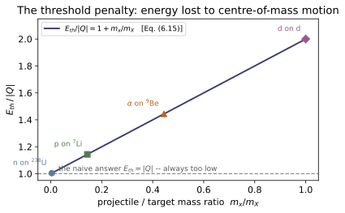
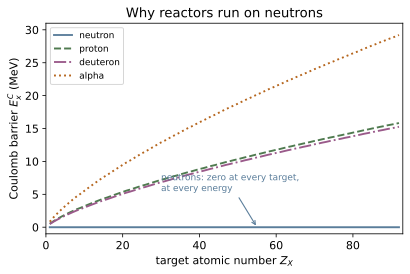
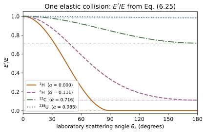

Example problems
Obtain the approximate threshold $E_x^{th}\simeq-Q(1+m_x/m_X)$ of Eq. (6.15) from the exact result of Eq. (6.14). Check: the two agree to better than $2\times10^{-4}$ for every reaction in this module (test_exact_and_approximate_thresholds_agree).
Eq. (6.14) is
The whole approximation is one substitution. Mass–energy conservation gives $m_x+m_X=m_y+m_Y+Q/c^2$, and $|Q|$ is at most a few MeV against rest energies of thousands of MeV, so to a part in $10^{3}$
Substituting into both numerator and denominator,
The algebra is trivial; the reading is not. The factor $(1+m_x/m_X)$ is exactly the inverse of $m_X/(m_x+m_X)$, the fraction of laboratory energy that survives into the centre-of-mass frame. So Eq. (6.15) says nothing more than: supply $|Q|$ in the CM frame, and pay the laboratory surcharge for the CM motion you cannot avoid creating. Checking that reading directly,
which is test_threshold_delivers_exactly_the_q_value_in_the_cm_frame, and holds to machine precision because it is an identity, not an approximation.
(The book's problem statement says "start with Eq. (6.17)". Eq. (6.17) is the Coulomb work integral and has nothing to do with the kinematic threshold; the intended starting point is Eq. (6.14), as above. Noted in ../refs.md.)
Reproduce the authors' table for the three routes to the compound nucleus $^{15}$N\: $^{13}$C(d,t)$^{12}$C, $^{14}$C(p,n)$^{14}$N and $^{14}$N(n,α)$^{11}$B. Check:* every entry below, reproduced by test_reproduces_example_6_1.
| reaction | $Q$ (MeV) | $E_x^{C}$ (MeV) | $E_x^{th}$ (MeV) | condition | $\min(E_y+E_Y)$ | |---|---|---|---|---|---| | $^{13}$C(d,t)$^{12}$C | +1.311 | 1.994 | 0 | $E_x>E_x^{C}$ | 3.305 | | $^{14}$C(p,n)$^{14}$N | −0.626 | 2.111 | 0.671 | $E_x>E_x^{C}$ | 1.485 | | $^{14}$N(n,α)$^{11}$B | −0.158 | 0 | 0.170 | $E_x>E_x^{th}$ | 0.011 |
Each column is a different physical statement.
$Q$ from Eq. (6.6) with neutral-atom masses. $E_x^C$ from Eq. (6.19); for $^{14}$C(p,n) that is $1.20(1)(6)/(1^{1/3}+14^{1/3})=7.2/3.410=2.111$ MeV. $E_x^{th}$ from Eq. (6.15); for the same reaction $0.6259(1+1.0073/14.003)=0.671$ MeV. The governing condition is Eq. (6.20), $\max$ of the two.
Two lessons sit in this table. Row 1 is exoergic and still has a threshold — 1.99 MeV of it — purely because the deuteron is charged. Row 3 has no Coulomb term at all, so its threshold is the kinematic 0.170 MeV, and a fast neutron above ~0.2 MeV will do it; that is why $^{14}$N(n,α) contributes to tissue dose from fast neutrons (~NE-17) while a charged projectile would need an accelerator.
The last column is $Q+(E_x^{th})_{\min}$ and is never negative. It is easy to misread the Coulomb energy as "lost". It is not: the target recoils, the compound nucleus carries $E_x^C(m_x/M_{cn})$ and the rest excites it, and on decay the whole of $E_x^C$ reappears in the products' masses and kinetic energies (S&F p. 144). Row 1's products come out with 3.305 MeV, more than $Q$ itself.
A 2 MeV neutron scatters elastically from $^{12}$C through 45°. What is its energy afterwards? Check: $E'/E=0.9523$, so $E'=1.905$ MeV.
Eq. (6.25) with $Q=0$, $A=12$, $\cos45°=0.7071$:
so $E'=1.905$ MeV and the carbon nucleus recoils with 95 keV.
That is the whole difficulty of graphite moderation in one number: a perpendicular hit — a fairly violent one — costs the neutron under 5% of its energy. Even a head-on collision leaves it $\alpha=0.716$ of what it had. Compare hydrogen, where the same 45° scattering gives $E'/E=\cos^2 45°=0.500$: half the energy gone in one glancing blow.
The first excited state of $^{12}$C lies 4.439 MeV above the ground state. Find (a) the $Q$-value for inelastic neutron scattering to that level, (b) the threshold, and (c) the energy of an 8 MeV neutron scattered from it at 45°. Check: (a) $-4.439$ MeV, (b) $4.812$ MeV, (c) $3.224$ MeV.
(a) Inelastic scattering leaves the nucleus excited, so the products are heavier than the reactants by exactly the excitation energy: $Q=-E^{*}=-4.439$ MeV. Nothing else changes — same nucleons, same charges.
(b) Eq. (6.15) with $m_x=m_n$, $m_X=12.000$ u:
A neutron carrying 4.5 MeV — well above the 4.439 MeV level — cannot excite it. Below 4.812 MeV the $^{12}$C 4.439 MeV level is invisible to neutrons, and the scattering is purely elastic.
(c) The full Eq. (6.25), now with $Q\neq0$:
so 4.776 MeV vanished: 4.439 MeV into the excited nucleus (re-emitted promptly as a 4.44 MeV gamma — a line seen in every fast-neutron spectrum from carbon-bearing material) and 0.337 MeV into recoil.
The double-energy region. For $Q<0$ the $\pm$ in Eq. (6.25) matters. The "−" root is real and positive only when $E\cos^2\theta_s$ exceeds the discriminant, which at 45° confines it to
a 16 keV window in which one scattering angle corresponds to two possible outgoing energies. Physically the CM-frame velocity of the scattered neutron is smaller than the CM velocity itself, so both the forward and backward CM directions project onto the same forward laboratory angle. scattering_energy takes a branch argument for this, and test_inelastic_scattering_and_the_double_energy_region pins the window. Far above threshold, as at 8 MeV, only the "+" root survives.
$^{16}$N ($T_{1/2}=7.13$ s) emits 6.1 and 7.1 MeV gammas and is made by $^{16}$O(n,p)$^{16}$N. What is the minimum neutron energy? Check: $Q=-9.638$ MeV, $E_n^{th}=10.25$ MeV.
From Appendix B,
and since the projectile is a neutron there is no Coulomb term, so Eq. (6.15) alone governs:
Ten MeV is a very fast neutron: the fission spectrum peaks near 0.7 MeV and only about 0.1% of fission neutrons exceed 10 MeV. So $^{16}$N is made only by the extreme tail of the spectrum, and only in the water actually inside the core before it has been moderated — which is exactly what makes it useful as a signal and dangerous as a hazard. Its 7 s half-life means the primary coolant loop of a BWR is intensely gamma-active while running and quiet within a minute of shutdown, which drives the shielding design of the turbine hall (~NE-22).
$^{18}$F for PET can be made by irradiating Li₂CO₃ with neutrons: the neutrons make tritons in $^{6}$Li, and the tritons react with the oxygen. (a) Write the two reactions. (b) Find each $Q$. (c) Find each threshold. (d) Can thermal neutrons (0.0253 eV) do it? Check: $Q_1=+4.783$ MeV, $Q_2=+1.268$ MeV; $E^{C}(\text{t}+^{16}$O$)=2.423$ MeV; the triton is born with 2.728 MeV.
(a) $^{6}$Li(n,t)$^{4}$He, then $^{16}$O(t,n)$^{18}$F.
(b) $Q_1=+4.783$ MeV and $Q_2=+1.268$ MeV — both exoergic, so neither has a kinematic threshold.
(c) The first has a neutral projectile and $Q>0$: no threshold whatsoever, and in fact its cross section rises as $1/v$, so thermal neutrons are the best ones (~NE-13). The second has a charged projectile, so Eq. (6.20) leaves the Coulomb term:
(d) Yes — and the reason is the neatest part of the problem. A thermal neutron brings negligible energy, so the 4.783 MeV of $Q_1$ is shared by inverse mass:
with 2.055 MeV to the alpha. The triton is born with 2.728 MeV, just above the 2.423 MeV barrier it needs — a margin of 300 keV. The thermal neutron does not supply the energy for the second reaction; it unlocks nuclear binding energy that supplies it. Two-step production schemes like this are how a reactor, which makes only neutrons, can drive charged-particle reactions it could never drive directly.
For $^{18}$O(p,n)$^{18}$F — the cyclotron route actually used for PET — find (a) $Q$, (b) the kinematic threshold, (c) the reaction threshold, (d) the minimum product energy. Check: $-2.438$, $2.574$, $2.651$, $0.213$ MeV.
(a) $Q=-2.438$ MeV from Appendix B.
(b) Eq. (6.15): $E_p^{th}=2.438(1+1.0073/17.9992)=2.574$ MeV.
(c) The proton is charged, so Eq. (6.19) also applies:
and Eq. (6.20) gives $(E_p^{th})_{\min}=\max(2.651,\,2.574)=\boxed{2.651\ \text{MeV}}$. This is a close-run thing: the two hurdles differ by 77 keV, and had the target been lighter the kinematic term would have won instead. Both must always be computed.
(d) $\min(E_y+E_Y)=Q+(E_p^{th})_{\min}=-2.438+2.651=0.213$ MeV.
Real $^{18}$F production runs at 11–18 MeV, far above 2.65 MeV, because a threshold tells you where the cross section becomes non-zero and nothing about where it becomes large — near threshold it is negligible. Yield needs cross sections (~NE-11), and the practical energy is set by where $\sigma$ peaks against target heating and unwanted side channels (~NE-27).
How many elastic scatters, on average, slow a 2 MeV neutron below 1 eV in (a) $^{16}$O and (b) $^{56}$Fe? Check: $\xi=0.1199$ and $0.0353$; $n=121$ and $411$.
With $\alpha=((A-1)/(A+1))^2$ and $\xi=1+\alpha\ln\alpha/(1-\alpha)$:
| | $A$ | $\alpha$ | $\xi$ | $n=\xi^{-1}\ln(2\times10^{6}/1)$ | |---|---|---|---|---| | $^{16}$O | 16 | 0.7785 | 0.1199 | 121 | | $^{56}$Fe | 56 | 0.9311 | 0.0353 | 411 |
using $\ln(2\times10^{6})=14.509$.
Neither is a moderator, and that is the point. Oxygen is carried along in water and in UO₂ fuel, and iron is structure and cladding: both scatter neutrons constantly without slowing them usefully. In water essentially all the moderation is done by the two hydrogens (18 collisions each) rather than the oxygen (121) — which is why $\text{H}_2\text{O}$ appears in Table 6.1 with an effective $\xi=0.920$, close to hydrogen's 1.000 and nowhere near oxygen's 0.120.
The comparison also shows why $\xi$, not $\alpha$, is the right figure of merit. Iron's $\alpha=0.931$ looks only modestly worse than oxygen's $0.779$, but the collision counts differ by a factor of 3.4: $\xi$ turns the per-collision ratio into an additive currency, and only additive currencies can be counted.
A full moderator ranking needs one more ingredient still — the moderating ratio $\xi\Sigma_s/\Sigma_a$, which penalises materials that absorb what they slow. That is why ordinary water, with the best $\xi$ of any practical moderator, still cannot sustain a chain reaction in natural uranium while graphite and heavy water can (~NE-19, ~NE-22).
Run the worked code: cd NE/NE-08_binary_kinematics/code && python3 binary_kinematics.py
NE-09 — Fission: fissile nuclides, fragments, neutrons and the energy budget
NE trunk · NE/NE-09_fission
A neutron absorbed by a heavy nucleus excites the compound nucleus by $E^*=S_n+E_n$. Compare that with the ~6.2 MeV fission barrier and the actinides split into fissile (²³³U, ²³⁵U, ²³⁹Pu, ²⁴¹Pu — all odd-$N$) and merely fissionable (²³⁸U, ²³²Th, ²⁴⁰Pu — all even-$N$), because adding a neutron to an odd-$N$ target completes a pair and releases ~1.5 MeV more. The fragments fly apart with equal momenta, so the lighter one takes more energy (99.2 vs 68.1 MeV on average) and the energy spectrum is bimodal; both are neutron-rich and beta-decay down isobaric chains that include ⁹⁹ᵐTc and ¹³⁵Xe. About 200 MeV is released — 168 in fragment kinetic energy deposited within a millimetre, 12 lost forever to neutrinos — along with $\bar\nu\simeq2.4$ neutrons born on a Watt spectrum peaking at 0.70 MeV and averaging 1.99 MeV. Under 1% of those neutrons arrive late, and that fraction is the only reason a reactor is controllable. Afterwards, decay heat falls as $t^{-1.2}$ — a power law, so it never switches off.
Key equations
Figures
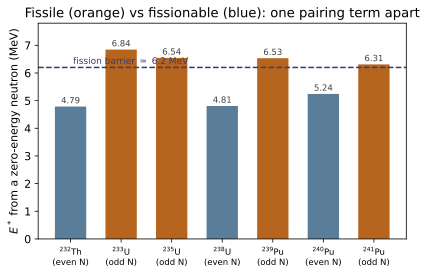
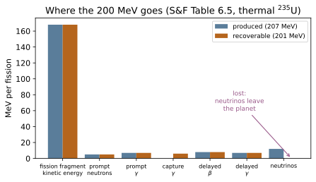


Example problems
How many neutrons per second are emitted spontaneously by 1 mg of $^{252}$Cf? Check: $2.30\times10^{9}$ n/s, from $6.17\times10^{8}$ fissions/s.
Straight from Table 6.2's last column:
It is worth rebuilding that column rather than quoting it, because doing so checks the row. With $T_{1/2}=2.638$ y,
so 1 mg ($2.39\times10^{18}$ atoms) undergoes $1.99\times10^{10}$ decays/s. Only 3.09% of those are fissions — the rest are alphas — giving $6.15\times10^{8}$ fissions/s, and at $\nu=3.73$ neutrons each, $2.29\times10^{9}$ n/s. The tabulated value is recovered to 0.4%.
Two things make ²⁵²Cf the standard portable neutron source: a large $\nu$ (3.73, the highest in common use) and a half-life short enough for a high specific activity but long enough to be a usable product. A 10 μg source — a speck — emits over $2\times10^{7}$ n/s, enough for well logging, moisture gauges and neutron radiography, with no accelerator and no reactor.
A $^{235}$U fission gives 4 prompt neutrons and one fragment of $^{121}$Ag. (a) What is the other fragment? (b) How much energy is liberated promptly? (c) If the fragments share 150 MeV, how much does each get? (d) What is left for the four neutrons? Check: (a) $^{111}$Rh; (b) 173.7 MeV; (c) 78.2 and 71.8 MeV; (d) 23.7 MeV.
(a) Eq. (6.34):
so the partner is $^{111}_{45}$Rh.
(b) The mass deficit, with prompt_energy_release:
Note this is below the 200 MeV average, and the reason is visible in the mass numbers: 121 and 111 is a nearly symmetric split, and symmetric splits are both rare (0.01% versus 6.5%, §2 of the notes) and less energetic, because neither fragment lands on the doubly-magic-adjacent shell structure near $A=132$ that makes the asymmetric split favourable.
(c) By Eq. (6.41) the energies go inversely as the masses:
The lighter fragment takes more, as always.
(d) $173.7-150=23.7$ MeV shared by four neutrons, about 5.9 MeV each — well above the 2 MeV average of §4, which is consistent: a fission that emits four neutrons rather than the usual two or three left its fragments unusually excited.
For $^{235}\text{U}(n,f)\to{}^{90}\text{Kr}+{}^{142}\text{Ba}+4n+6\gamma$: (a) give the two fission-product chains, (b) the equivalent reaction to stable end products, (c) the prompt energy, (d) the total eventually emitted. Check: (c) 169.5 MeV; (d) 190.0 MeV.
(a) Both fragments are neutron-rich and beta-decay at constant $A$:
Four decays and two decays, six in all — one per unit of $Z$ gained.
(b)
(c) prompt_energy_release gives $E_p=169.5$ MeV.
(d) delayed_energy_release on the two chains gives
for a total of 190.0 MeV. The six emitted electrons need no correction: six ambient electrons are absorbed to keep the atoms neutral, and neutral-atom masses already account for both.
The 190 MeV includes roughly 10 MeV that leaves in the six antineutrinos and is never recoverable, so this fission is worth about 180 MeV of heat — a little under Table 6.5's 201 MeV average, which is what you would expect from a split that emits four neutrons instead of 2.4 and therefore locks up more energy in neutron kinetic energy and neutron rest mass.
Note also that this chain passes through ⁹⁰Sr (28.79 y) — one of the two fission products, with ¹³⁷Cs, that dominate spent-fuel activity from a year to a century out (~NE-07, ~NE-23).
A 10 g sample of $^{235}$U in a reactor generates 100 W of thermal fission power. (a) What is the fission rate? (b) After a year, estimate the number of $^{99}$Tc atoms produced through the chain of Eq. (6.37), assuming everything above $^{99}$Tc decays immediately. Check: (a) $3.12\times10^{12}$ fissions/s; (b) $\sim6\times10^{18}$ atoms.
(a) At 200 MeV recoverable per fission,
which is fissions_per_second(100.0). The 10 g is a red herring for part (a) — the fission rate is fixed by the power, not by how much fuel is present. (It matters for whether 100 W is sustainable: 10 g of ²³⁵U holds $2.56\times10^{22}$ atoms, so a year at this rate consumes 0.4% of it.)
(b) In a year, $3.12\times10^{12}\times3.156\times10^{7}=9.85\times10^{19}$ fissions. The $A=99$ chain yield is about 6.1%, so
Everything above ⁹⁹Tc in Eq. (6.37) has a half-life of days or less against a one-year irradiation, so it has all funnelled down; ⁹⁹Tc itself has $T_{1/2}=0.21$ My, so essentially none of it has decayed. That combination — a fast feed into a long-lived sink — is exactly the "decay with production reaching saturation" problem of ~NE-07, in the limit where the product's half-life vastly exceeds the irradiation.
⁹⁹Tc is one of the more troublesome long-lived fission products for waste disposal: soluble and mobile as pertechnetate in oxidising groundwater (~NE-23).
(a) How much $^{235}$U is consumed per year to run a 100 W bulb continuously? (b) How much coal (12 GJ/tonne)? Assume 33% thermal-to-electric efficiency. Check: (a) 0.137 g/y; (b) 0.80 tonnes/y.
At 33% efficiency, 100 W of electricity needs 303 W of thermal power, i.e. $303\times3.156\times10^{7}=9.56\times10^{9}$ J = 9.56 GJ per year, which is $1.107\times10^{-4}$ MWd/s... more usefully, 0.1107 MWd.
(a) At 1.24 g of ²³⁵U consumed per MWd,
Of that, 0.117 g actually fissions and 0.021 g is lost to $(n,\gamma)$ capture into ²³⁶U — a 15% tax that is invisible in the energy balance but shows up directly in fuel-cycle costs (~NE-23).
(b)
The ratio is about 5.8 million. One way to feel it: the uranium for a lifetime of one light bulb fits on a fingertip; the coal fills a small truck, and turns into about 2 tonnes of CO₂. The comparison is the reason the field exists, and it is also incomplete — it says nothing about mining, enrichment, capital cost, or what to do with the ⁹⁹Tc of P4.
An accidental criticality releases energy equivalent to 7 kg of TNT (4.6 kJ/g); 80% of the fission products stay in the building. (a) How many fissions occurred? (b) Three months later, at what rate do the retained fission products release energy? Check: (a) $1.0\times10^{18}$ fissions; (b) ~2 mW by extrapolation — but see the caution.
(a) $7000\ \text{g}\times4.6\ \text{kJ/g}=32.2$ MJ, so
For scale, that is about 0.4 mg of uranium fissioned — the accident's hazard is overwhelmingly the prompt radiation dose and the fission-product inventory, not the 32 MJ of blast.
(b) Three months is $7.78\times10^{6}$ s. Eqs. (6.44)–(6.45) give
The caution: S&F state Eqs. (6.44)–(6.45) as valid for $10\ \text{s}<t<10^{5}$ s. Three months is $7.8\times10^{6}$ s — nearly two decades beyond the stated range, and the answer should be quoted as an extrapolation, not a result. The real curve flattens relative to $t^{-1.2}$ at long times as the short-lived chains exhaust and the surviving inventory becomes dominated by a handful of specific nuclides (⁹⁰Sr, ¹³⁷Cs and their daughters), so the true power is higher than the extrapolation. decay_heat_total does not police the range — the formula is the book's, and silently clamping it would hide exactly this issue — so the caller must.
For comparison, the same formula inside its valid range:
| $t$ | power (retained) | |---|---| | 1 h | 18.5 W | | 1 d | 0.41 W | | 3 months | 2 mW (extrapolated) |
Show that the fissile/fissionable split is a parity effect, and estimate the size of the gap from the SEMF pairing term alone. Check: the SEMF gives $\sim2\delta/\sqrt{A}\simeq1.4$ MeV; the measured gap between the two groups is 1.07 MeV.
For a target with $N$ neutrons, absorbing one makes a compound nucleus with $N+1$. The pairing term of ~NE-02 contributes $-a_p/\sqrt{A}$ to the binding energy with $a_p=+11.2$ MeV for odd–odd, $0$ for odd–even and $-11.2$ MeV for even–even.
Take ²³⁵U ($Z=92$ even, $N=143$ odd — an odd-$A$, odd-$N$ target). Absorbing a neutron gives ²³⁶U with $N=144$: even–even, the most tightly bound parity class. Take ²³⁸U ($N=146$ even) instead: absorbing a neutron gives ²³⁹U with $N=147$, even–odd. The compound nucleus in the first case gains the pairing bonus and in the second does not, so
Measured, from excitation_energy:
and across the whole set the lowest fissile value (²⁴¹Pu, 6.31) exceeds the highest fissionable one (²⁴⁰Pu, 5.24) by 1.07 MeV — a clean gap with no overlap, which test_fissile_and_fissionable_split_on_the_pairing_term asserts.
So the reason a reactor runs on the 0.72% of natural uranium that is ²³⁵U rather than the 99.27% that is ²³⁸U is one term in a 1935 semi-empirical mass formula. It is also why the fertile chains of §1 work: two beta decays convert an even-$N$ nucleus into an odd-$N$ one, moving it across the same divide.
A reactor is critical with $k=1$. Compare the response time when the chain is sustained by prompt neutrons alone against one sustained with the delayed contribution, using $\beta=0.0065$ for $^{235}$U. Check: prompt lifetime $\sim10^{-4}$ s; effective lifetime with delayed neutrons $\sim0.08$ s — a factor of ~800.
In a thermal reactor a prompt neutron lives about $\ell\simeq10^{-4}$ s between birth and its next absorption. A delayed neutron appears only when its precursor decays, with a mean life of order $\tau_d\simeq12$ s averaged over the precursor groups. The mean generation time is the weighted average
Two-thirds of a percent of the neutrons stretch the generation time by a factor of nearly a thousand. A reactivity insertion that would double the population in milliseconds on prompt neutrons alone instead does so over many seconds — comfortably within the reach of control rods, feedback and operators.
The corollary is the definition of the danger line. If reactivity exceeds $\rho=\beta$, the chain is critical on prompt neutrons alone: the delayed neutrons stop mattering and the period collapses to $\ell$. That state is called prompt criticality, it is what SL-1 and Chernobyl reached, and it is why reactivity is universally quoted in units of dollars, $\$=\rho/\beta$, with $\$1$ the prompt-critical threshold. Because ²³⁹Pu's $\beta$ is 0.0021, a plutonium-fuelled core has less than a third of the margin — the same physical reactivity buys three times as many dollars. The full treatment is ~NE-20.
Run the worked code: cd NE/NE-09_fission/code && python3 fission.py
NE-10 — Fusion and nucleosynthesis
NE trunk · NE/NE-10_fusion
Fusion beats fission per nucleon by a factor of four — D–T gives 17.6 MeV from five nucleons — and the fuel is free and effectively infinite. The obstacle is entirely the Coulomb barrier: small in absolute terms but payable by every reacting pair, and the only scalable currency is heat. Classically that means $3\times10^{9}$ K, two hundred times the sun's core. Fusion happens anyway because the reactants tunnel: the rate is the product of a falling Maxwellian and a rising Gamow factor, peaked at $E_0=[E_G(kT)^2/4]^{1/3}$ — 31 keV for D–T at a 10 keV plasma, a tenth of the barrier. Since $E_G\propto(Z_1Z_2)^2$ sits inside a square root inside an exponential, charge is punished ferociously, which is why every experiment runs D–T despite having to breed its own tritium. Stars solve confinement by being enormous and slow: the sun's p–p bottleneck is weak-force-mediated, its core power density is 283 W/m³ — less than a compost heap — and it lasts ten billion years. Fusion builds elements to the iron peak and stops; everything heavier is neutron capture, s- and r-process.
Key equations
Figures
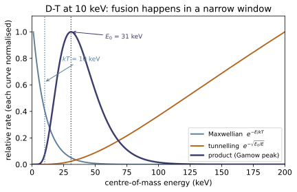


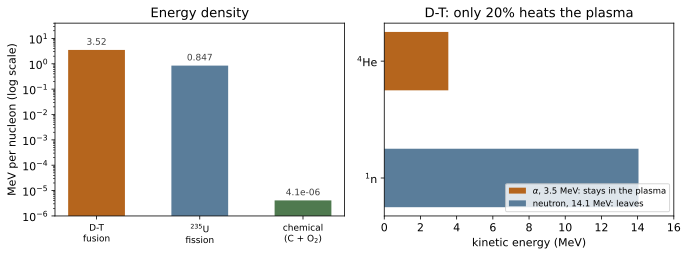
Example problems
Estimate the d–d fusion energy in an 8 oz glass of water. How long could it run a house drawing 10 kW? Check: $2.37\times10^{21}$ deuterons, $4.53\times10^{9}$ J, 5.2 days.
8 fl oz ≈ 237 mL ≈ 237 g of water. Hydrogen atoms:
At S&F's quoted deuterium abundance of 0.015%, $N_D=2.37\times10^{21}$ deuterons.
Burning deuterium all the way to ⁴He releases 23.85 MeV per pair (Example 6.6), so 11.9 MeV per deuteron:
which at 10 kW is $4.53\times10^{5}$ s = 5.2 days.
Put the other way: the deuterium in a glass of water is worth about 150 litres of petrol, and it costs nothing to obtain. It is worth being clear about what this does and does not show. It shows the fuel is free and effectively infinite. It says nothing about whether the energy can be extracted, which is §3 and §4 of the notes and the whole of ~NE-24.
The sun radiates $4\times10^{26}$ W. Find (a) the rate at which mass is converted to energy, (b) the ⁴He production rate, (c) the flux at the earth, $1.5\times10^{11}$ m away. Check: (a) $4.45\times10^{9}$ kg/s; (b) $9.34\times10^{37}$ s⁻¹; (c) 1415 W/m² = 0.1415 W/cm².
(a) $\dot m=P/c^2=4\times10^{26}/(2.998\times10^{8})^2 =4.45\times10^{9}$ kg/s.
Four and a half million tonnes a second sounds terminal and is not: over the sun's 4.6 Gy life so far that is $6.5\times10^{26}$ kg, or 0.03% of its $2\times10^{30}$ kg. (The solar wind carries away considerably more.)
(b) Each ⁴He formed releases 26.73 MeV $=4.28\times10^{-12}$ J, so
Equivalently $6.2\times10^{11}$ kg/s of hydrogen consumed — 140 times the mass actually converted to energy, since only 0.7% of the rest mass is released.
(c)
The measured solar constant is 1361 W/m²; the 4% gap is S&F's rounding of the luminosity to $4\times10^{26}$ W (the accepted value is $3.83\times10^{26}$).
The sun has a lifetime of about $10^{10}$ y. Compare its total energy output with what a Type Ia supernova releases in a few seconds. Check: $1.26\times10^{44}$ J against $1$–$2\times10^{44}$ J — comparable.
S&F quote $1$–$2\times10^{44}$ J for a Type Ia (printed 169–170), so the ratio is 0.8 to 1.6: a supernova releases, in seconds, what the sun takes ten billion years to radiate.
That is why one is visible across a galaxy. S&F note the light curve peaks 60 days after collapse at five billion times solar brightness, powered by
which is a two-step decay chain of exactly the ~NE-07 kind — the 60-day peak is the daughter maximum, set by the two half-lives. And the standardisable brightness that follows from a fixed ⁵⁶Ni mass is what makes Type Ia supernovae the distance ladder that revealed cosmic acceleration.
Note also the accounting S&F give: over 90% of a Type Ia's energy is kinetic energy of ejecta, ~7% goes to neutrinos, and less than 1% to visible light. The brightest events in the universe are radiating a rounding error.
Explain how hydroelectric, wind, coal and nuclear power are all indirect manifestations of stellar fusion.
Trace each back.
Hydroelectric. Solar radiation evaporates water and lifts it; it rains at altitude and runs downhill through turbines. The energy is the gravitational potential the sun paid for. Fusion, one step removed.
Wind. Differential solar heating of the atmosphere and surface drives pressure gradients. Fusion, one step removed.
Coal. Photosynthesis fixed solar energy into carbohydrate in Carboniferous plants ~300 My ago; burial and heat concentrated it. Fusion, stored for 300 million years — and the chemical bond energy is ~4 eV per atom against fusion's 17.6 MeV per event, so a great deal of sunlight was needed to make a little coal.
Nuclear fission. This one is different, and it is the interesting case, because the energy is not from our sun. Uranium is not made by fusion at all — §6 of the notes shows fusion stops at the iron peak. ²³⁵U and ²³⁸U were built by r-process neutron capture in a supernova (or a neutron-star merger) before the solar system formed, and the energy stored in them is the gravitational binding energy of a collapsing stellar core, injected uphill against the binding-energy curve. So fission is powered by stellar death rather than stellar burning — the ashes of an explosion that predates the sun.
The exceptions worth naming: geothermal is mostly the decay heat of ⁴⁰K, ²³²Th and ²³⁸U in the mantle (also r-process products, plus some primordial accretion heat), and tidal power comes from the earth–moon angular momentum, which is not fusion at all. So "everything is fusion" is nearly true, and the two exceptions are both nuclear anyway.
D + ³He → ⁴He + p releases more energy than D–T (18.35 vs 17.59 MeV) and its products are both charged, so no neutrons, no activation and direct energy conversion become possible. Why does no experiment use it? Check: $E_G=4.70$ MeV against D–T's 1.18; at 31 keV the tunnelling probability is 470 times smaller.
The Q-value is a red herring; the Gamow energy decides.
D–T has $Z_1Z_2=1$ and $\mu=1.2$ u; D–³He has $Z_1Z_2=2$ and $\mu=1.2$ u. The charge product doubles, so $E_G$ quadruples: 1.175 → 4.700 MeV.
That factor of 4 sits inside $\exp(-\sqrt{E_G/E})$. At $E=31$ keV,
a factor of 470. Equivalently the Gamow peak moves from 31 to 49 keV, so a D–³He plasma must run several times hotter to reach comparable rates — and higher temperature makes confinement harder, radiative losses worse, and the whole engineering problem sharper.
There is a second problem, which is ~NE-23's: there is essentially no ³He on earth. It exists in the lunar regolith at parts-per-billion and in the solar wind, which is why lunar ³He mining keeps reappearing in speculative energy plans. D–T needs only lithium, which is a commodity.
The general lesson: for fusion fuels, $Q$ ranks the prize and $E_G$ ranks the difficulty, and $E_G$ wins. p–¹¹B makes the point emphatically: $Q=8.68$ MeV, fully aneutronic, and $E_G=22.4$ MeV — $10^{16}$ times less likely to tunnel than D–T at the same energy.
Show that two alpha particles cannot simply fuse, and explain how the universe makes carbon anyway. Check: $Q(2\alpha\to{}^{8}\text{Be})=-0.092$ MeV; $Q(3\alpha\to{}^{12}\text{C})=+7.27$ MeV.
From Appendix B,
⁸Be is unbound — barely, by 92 keV, but decisively: it falls apart into two alphas with a half-life of $7\times10^{-17}$ s. There is no stable nuclide at $A=8$ at all, and this is a genuine gap in the mass table.
So the alpha-capture ladder cannot start. And yet carbon exists. The resolution (Hoyle, 1954) is that at the densities and temperatures of a helium-burning core, $7\times10^{-17}$ s is long enough: a small equilibrium population of ⁸Be persists, and a third alpha can be captured before it decays:
Even that is too slow unless the reaction is resonant — which is why Hoyle predicted, purely from the fact that carbon exists, that ¹²C must have an excited state near 7.65 MeV. It was found. (~NE-04 computes the Q-value for reaching that state; it appears there as the level that closes the ⁹Be(α,n) channel.)
The three-body requirement makes the triple-alpha rate scale as the square of the helium density and as roughly $T^{40}$ near $10^{8}$ K — one of the most violently temperature-sensitive reactions in nature, and the reason the onset of helium burning in a degenerate core is explosive (the helium flash).
Compare the temperature at which $3kT/2$ equals the D–T Coulomb barrier with the sun's core and with a tokamak. Check: $3.4\times10^{9}$ K, against 15 MK and ~150 MK.
From ~NE-08,
and setting $3kT/2=E_C$ with $k=8.617\times10^{-11}$ MeV/K gives
Against this: the sun's core is $1.5\times10^{7}$ K, a factor of 230 too cold. ITER aims at roughly $1.5\times10^{8}$ K, still a factor of 23 too cold.
If the classical picture were right, neither would burn. Both do, and the reason is entirely tunnelling: the Gamow peak sits at 31 keV rather than 440 keV, and it is populated by the Maxwellian tail. Quantum mechanics is not a correction here — it is the difference between a universe with stars and one without.
Compute the power density of the sun's core and compare it with a fission reactor core and with a compost heap. Check: 283 W/m³, against ~$10^{8}$ W/m³ for a PWR core.
S&F give the energy-producing core as 0.1% of the sun's volume. With $R_\odot=6.96\times10^{8}$ m,
A compost heap runs at a few hundred W/m³. A human body, at 100 W in 0.07 m³, manages 1400 W/m³ — five times the sun's core. A PWR core producing 3 GW thermal in ~30 m³ runs at $10^{8}$ W/m³, a factor of 350,000 above the sun.
The sun is luminous because it is $1.4\times10^{27}$ m³ of very feeble reactor, held together for free by its own weight for ten billion years. This is why the argument "fusion obviously works, look up" is misleading: a terrestrial reactor gets none of the sun's advantages (no free confinement, no ten-billion-year timescale, no room to be a million kilometres across) and must beat its power density by five or six orders of magnitude to be worth building.
(A caution on the arithmetic: S&F write that the core is "about 7,000 km in radius or about 0.1% of the sun's total volume", and those two statements differ by a factor of 1000 in volume — 0.1% needs 69,600 km. The volume fraction is the consistent half, as it gives the accepted 283 W/m³; see ../refs.md.)
Run the worked code: cd NE/NE-10_fusion/code && python3 fusion.py
NE-11 — Attenuation, cross sections, flux density and reaction rates
NE trunk · NE/NE-11_attenuation
The interaction coefficient μ is a constant probability per unit path length, exactly as the decay constant λ is per unit time — so attenuation is exponential, the distance to first interaction is exponentially distributed with mean 1/μ (the mean free path), the half-thickness is ln2/μ, and interaction is memoryless. The only variable that matters is the optical thickness μx in mean free paths. The bridge to tabulated data is μ = σN: a per-atom area in barns times an atom density, with μ/ρ intrinsic and therefore what gets tabulated. Flux density φ = vn — read as track length per unit volume per unit time — then gives the equation everything reduces to, R = μφ: reactor power, detector count rate and tissue dose are that product with different subscripts. Two cautions carry real weight: exponential attenuation describes uncollided particles only and is a lower bound on the field (buildup can be a factor of 10), and geometric 1/r² attenuation is a power law while material attenuation is an exponential — which is why shielding beats standoff once space runs out.
Key equations
Figures
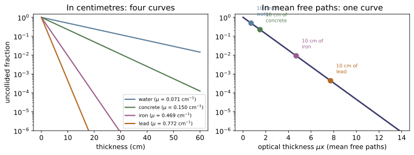

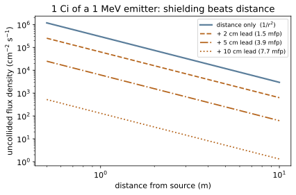
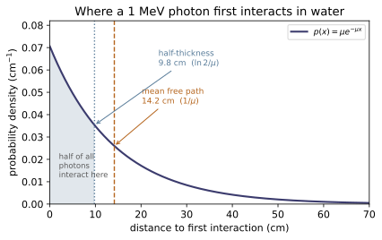
Example problems
A broad beam of neutrons is normally incident on a 6 cm homogeneous slab; 40% is transmitted without interacting. Find (a) $\mu_t$ and (b) the mean distance a neutron travels before interacting. Check: (a) 0.1527 cm⁻¹; (b) 6.55 cm.
Invert Eq. (7.4):
and by Eq. (7.8) the mean free path is $1/\mu_t=\boxed{6.55\ \text{cm}}$.
This is how interaction coefficients are actually measured — the definition in Eq. (7.1) is a limit and cannot be used directly. Note the slab is only 0.92 mfp thick, which is what makes the measurement good: much thinner and the transmitted fraction is indistinguishable from 1, much thicker and it is indistinguishable from 0. Transmission experiments are most precise near 1 mfp.
One caution the problem glosses over: it says broad beam, and Eq. (7.4) describes a narrow beam. In a broad-beam geometry scattered neutrons reach the detector too, so the measured transmission is $B\times e^{-\mu t}$ and the inferred $\mu$ is an underestimate. Real measurements use collimation to approximate the narrow-beam condition.
Using Appendix C, find the half-thickness for 1 MeV photons in water, iron and lead. Check: 9.81 cm, 1.48 cm, 0.898 cm.
$x_{1/2}=\ln2/\mu$ with $\mu=\rho(\mu/\rho)$:
| | $\mu/\rho$ (cm²/g) | $\rho$ (g/cm³) | $\mu$ (cm⁻¹) | $x_{1/2}$ (cm) | |---|---|---|---|---| | water | 0.07066 | 1.00 | 0.0707 | 9.81 | | iron | 0.05951 | 7.874 | 0.4686 | 1.48 | | lead | 0.06803 | 11.35 | 0.7721 | 0.898 |
Look at the first column. At 1 MeV the three mass coefficients agree within 15%, while the half-thicknesses span a factor of 11. The entire difference is density. At MeV energies photons interact almost exclusively by Compton scattering off electrons, and every material has roughly the same number of electrons per gram ($Z/A\simeq0.5$, except hydrogen's 1.0). Lead is a good gamma shield because it packs those electrons into less space, not because lead atoms are individually better at stopping MeV photons.
That stops being true below ~0.5 MeV, where the photoelectric effect and its steep $Z$ dependence take over and lead genuinely does become special (~NE-12).
A material has a tenth-thickness of 2.6 cm for 1.25 MeV gammas. Find (a) $\mu$, (b) $x_{1/2}$, (c) the mean free path. Check: 0.8856 cm⁻¹, 0.783 cm, 1.129 cm.
(a) $\mu=\ln10/x_{1/10}=2.3026/2.6=\boxed{0.8856\ \text{cm}^{-1}}$.
(b) $x_{1/2}=\ln2/\mu=\boxed{0.783\ \text{cm}}$.
(c) $\ell=1/\mu=\boxed{1.129\ \text{cm}}$.
The three lengths are fixed multiples of each other and carry no independent information:
So a tenth-thickness is always 3.32 half-thicknesses — never "ten half-thicknesses", which is the mistake the ratio is there to prevent.
(For context, $\mu=0.886$ cm⁻¹ at 1.25 MeV is denser than lead's 0.66 cm⁻¹ at that energy, so this hypothetical material is heavier than lead — depleted uranium or tungsten territory.)
Two adjacent slabs have thicknesses $t_1,t_2$ and coefficients $\mu_1,\mu_2$. Find the probability a gamma ray (a) first interacts in slab 1, (b) first interacts in slab 2, (c) penetrates both.
(a) Interacting somewhere in slab 1 is Eq. (7.5):
(b) To interact first in slab 2 the photon must cross slab 1 and then interact in slab 2. The two are independent, so the probabilities multiply:
(c)
Check: $P_1+P_2+P_{\text{through}}=1$, as it must be — the photon does exactly one of these three things.
Two things to take from this. The survival probability depends only on $\sum_i\mu_it_i$, the total optical thickness, so for the transmitted beam the slab order does not matter (test_layered_shields_add_in_mean_free_paths). But $P_1$ and $P_2$ separately do depend on order, which is why real shields are layered deliberately — a high-$Z$ layer first to stop photons, a low-$Z$ layer behind it to catch the secondary electrons and bremsstrahlung, and the reverse arrangement works far worse.
Generalising to $N$ slabs [Prob. 6]:
Natural uranium is 0.720% ²³⁵U, 0.0055% ²³⁴U and the rest ²³⁸U by atom. Using Table C.1, find the total macroscopic cross section and the macroscopic fission cross section for thermal neutrons. Check: $\Sigma_t=0.828$ cm⁻¹, $\Sigma_f=0.204$ cm⁻¹.
Uranium metal has $\rho=19.05$ g/cm³ and $A=238.03$, so
From Table C.1, $\sigma_t$ = 700 b (²³⁵U), 116 b (²³⁴U), 12.2 b (²³⁸U):
For fission, $\sigma_f$ = 587 b (²³⁵U), 0.465 b (²³⁴U), $1.2\times10^{-5}$ b (²³⁸U):
Now read the numbers. ²³⁵U is 0.72% of the atoms and supplies essentially 100% of the thermal fission and 29% of the total interaction — a nuclide present at one part in 139 dominating the reactor physics, because its cross section exceeds ²³⁸U's by a factor of 57. This is the same abundance-times-cross-section arithmetic as Example 7.3, with the opposite conclusion: there the rare isotope was negligible, here it is everything.
Note also $\Sigma_f/\Sigma_t=0.25$: only a quarter of thermal-neutron interactions in natural uranium are fissions. The rest are mostly capture in ²³⁸U, which is why natural uranium cannot go critical in a light-water reactor and why enrichment exists (~NE-19, ~NE-23).
Using Appendices A.3 and C.1, find the mean free path of a thermal neutron in graphite. Check: $\Sigma_t=0.404$ cm⁻¹, mfp = 2.48 cm (for $\rho=1.7$ g/cm³).
Reactor graphite has $\rho\simeq1.7$ g/cm³ and $A=12.011$:
Table C.1 gives $\sigma_t(^{12}\text{C})=4.74$ b, so
The answer is sensitive to the density assumed, and graphite's varies from ~1.6 g/cm³ (nuclear grade, deliberately porous) to 2.26 (ideal crystal) — so quote the density with the answer.
The physics worth noticing: almost all of that 4.74 b is scattering, not absorption ($\sigma_\gamma=0.0034$ b). Carbon interacts with neutrons readily and consumes them almost never, which is precisely the combination a moderator needs — many collisions to slow the neutron down (115 of them, from ~NE-08), each costing essentially no neutrons. The 2.48 cm mfp times 115 collisions is why a graphite-moderated core is metres across.
At a point the flux density is $4\times10^{12}$ cm⁻² s⁻¹. Find the particle density if the particles are (a) photons, (b) thermal neutrons (2200 m/s). Check: (a) 133 cm⁻³; (b) $1.82\times10^{7}$ cm⁻³.
Invert Eq. (7.14), $n=\phi/v$:
(a) Photons travel at $c=3.00\times10^{10}$ cm/s:
(b) Thermal neutrons travel at $2.2\times10^{5}$ cm/s:
The same flux density corresponds to particle densities differing by 136,000. That is the whole reason flux density, and not particle density, is the working variable. Reaction rate is $\mu\phi$, not $\mu n$: what matters is how much track length the particles lay down per second, and a fast particle lays down more track per unit density than a slow one.
The neutron figure is also a useful sanity check on how empty a reactor is: $1.8\times10^{7}$ neutrons/cm³ against $\sim10^{22}$ atoms/cm³ of fuel is one neutron per $10^{15}$ atoms. A reactor core is, by number, almost entirely not neutrons.
A 1 Ci point source emits 1 MeV photons. Compare (a) retreating from 1 m to 10 m with (b) staying at 1 m behind 10 cm of lead. Then find how much lead matches a retreat to 100 m. Check: (a) ×100; (b) ×2250; (c) about 15 cm.
From Eq. (7.26), $\phi^o=S_pe^{-\mu t}/4\pi r^2$ with $\mu_{\text{Pb}}=0.7721$ cm⁻¹.
(a) Geometric attenuation is a power law: $(10)^2=\boxed{100}$.
(b) Material attenuation is exponential: $e^{0.7721\times10}=e^{7.721}=\boxed{2250}$.
So 10 cm of lead — a slab you can lift — outperforms a 9 m retreat by a factor of 22, and it does so in a room rather than a field.
(c) Retreating to 100 m buys $10^4$. Matching that needs
so 12 cm of lead equals a 100 m standoff, and 24 cm equals 10 km. The exponential never runs out of leverage; the inverse square always does.
This asymmetry is why radiation protection is taught as time, distance, shielding — cheapest first — but why every serious installation ends up relying on the third. It also shows the limit of the argument: the calculation above is uncollided flux, and at 12 cm (9.2 mfp) of lead the buildup factor is substantial, so the real dose reduction is well short of $10^4$. Deep shields are where §2's warning bites hardest.
Run the worked code: cd NE/NE-11_attenuation/code && python3 attenuation.py
NE-12 — Photon interactions: photoelectric, Compton, pair production
NE trunk · NE/NE-12_photon_interactions
Three processes carry essentially all of μ between 10 eV and 20 MeV, and their Z exponents decide everything. Photoelectric (σ ~ Z⁴/E³) absorbs the photon outright and carries the absorption edges — lead's K edge at 88 keV multiplies μ_ph by 4.7 across zero energy difference, which is why iodine and barium are contrast agents. Compton (σ ~ Z per atom, so ~Z/A ≈ ½ per gram) is material-independent in its kinematics: E′ depends on angle and energy only, so the ¹³⁷Cs Compton edge sits at 477 keV in every detector, with the 184 keV backscatter peak as its complement. Pair production (σ ~ Z²) is forbidden below 1.022 MeV — a conservation law, not a trend — and returns two 0.511 MeV annihilation photons. Because only the photoelectric effect truly absorbs, μ counts interactions while μ_en counts deposition; in water at 100 keV only 15% of the interacting energy stays put.
Key equations
Figures
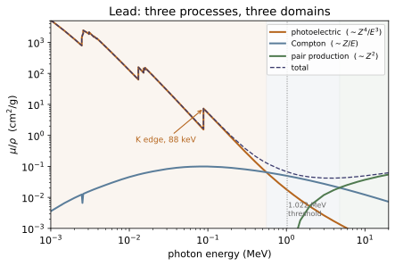
![Left: lead's photoelectric coefficient showing all nine absorption edges (K, L1-L3, M1-M5) recovered from Appendix C.3. Right: what happens across the K edge. The total coefficient jumps 4.5x because two more electrons become available, but the energy ABSORPTION coefficient rises only 1.5x -- so the deposited fraction collapses from 0.90 to 0.29. The K vacancy emits a 75-85 keV fluorescence x-ray that escapes with the energy: more interactions, less deposition, and the origin of detector escape peaks.](NE/NE-12_photon_interactions/figures/fig2_k_edge.svg)
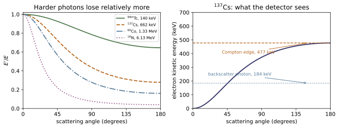

Example problems
A beam of 3 MeV photons with intensity $10^8$ cm⁻² s⁻¹ irradiates water. (a) How many photon–water interactions occur per second per cm³? (b) How many positrons are produced? Check: (a) $3.97\times10^{6}$; (b) $1.13\times10^{5}$.
This is ~NE-11's $R=\mu\phi$ with the right subscript.
(a) $\mu(3\ \text{MeV, water})=0.03968$ cm⁻¹, so
(b) One positron per pair-production event, and $\mu_{pp}=0.001131$ cm⁻¹:
which is only 2.85% of all interactions. At 3 MeV in water, Compton scattering still does 97% of the work — pair production has been open since 1.022 MeV but is still feeble, because water is low-$Z$ and the cross section goes as $Z^2$. In lead at the same energy the pair fraction is nearly ten times larger.
Each of those $1.13\times10^{5}$ positrons then annihilates, producing $2.26\times10^{5}$ photons per cm³ per second at exactly 0.511 MeV. A "3 MeV beam" therefore generates a 511 keV field wherever it goes, which no uncollided-flux calculation would ever show.
A 2 mCi ⁶⁰Co source sits at the centre of a water-filled iron tank, inside diameter 20 cm, wall thickness 1 cm. Find the uncollided flux density at the outer surface nearest the source. Check: $3.40\times10^{4}$ cm⁻² s⁻¹.
⁶⁰Co emits two gammas per decay, 1.1732 and 1.3325 MeV (~NE-05), so treat them separately and add. Each has source strength $S=2\times10^{-3}\times3.7\times10^{10}=7.40\times10^{7}$ s⁻¹.
The path from centre to outer surface is 10 cm of water plus 1 cm of iron, so $r=11$ cm, and Eq. (7.27) gives
| $E$ (MeV) | $\mu_{H_2O}$ | $\mu_{Fe}$ | optical thickness | $\phi^o$ | |---|---|---|---|---| | 1.1732 | 0.06524 | 0.43257 | 1.085 | $1.64\times10^{4}$ | | 1.3325 | 0.06114 | 0.40601 | 1.017 | $1.76\times10^{4}$ | | | | | total | $\boxed{3.40\times10^{4}}$ |
Two things worth noticing. The 1 cm of iron contributes 0.43 mean free paths against the 10 cm of water's 0.65 — a centimetre of iron is worth seven centimetres of water, which is the density argument of ~NE-11 P2 in miniature. And the total optical thickness is only about 1 mfp, so this is exactly the regime where the buildup factor is not negligible: the true flux at that surface is perhaps twice the uncollided value computed here.
Find the maximum Compton-electron energy and the corresponding minimum scattered photon energy for (a) 100 keV, (b) 1 MeV, (c) 10 MeV photons. Check: (a) 28.1 / 71.9 keV; (b) 796.5 / 203.5 keV; (c) 9750.9 / 249.1 keV.
Both at $\theta_s=180°$:
| $E$ | $E_{\max}$ (edge) | $E'_{\min}$ (backscatter) | fraction transferred | |---|---|---|---| | 100 keV | 28.1 keV | 71.9 keV | 28% | | 1 MeV | 796.5 keV | 203.5 keV | 80% | | 10 MeV | 9750.9 keV | 249.1 keV | 97.5% |
The trend is the point. At 100 keV a head-on Compton collision — the most violent available — still leaves 72% of the energy in the photon. At 10 MeV it takes 97.5%. Compton scattering is a poor absorber at low energy and an efficient one at high energy, and the backscattered photon converges on $m_ec^2/2=255$ keV from below in every case.
This is also why the deposited fraction $f=\mu_{en}/\mu$ has a minimum in the Compton region rather than falling monotonically: at low energy the photoelectric effect absorbs outright, at high energy Compton transfers nearly everything, and in between neither does.
Compare lead and water per gram at 100 keV and at 1 MeV, and explain the difference. Check: photoelectric ratio 1896 at 100 keV; total ratio 0.963 at 1 MeV.
Per gram, from Appendix C.3:
| | 100 keV | 1 MeV | |---|---|---| | $(\mu_{ph}/\rho)_{Pb}/(\mu_{ph}/\rho)_{H_2O}$ | 1896 | 4916 | | $(\mu/\rho)_{Pb}/(\mu/\rho)_{H_2O}$ | 32.3 | 0.963 |
At 1 MeV lead is, per gram, very slightly worse than water. All of its reputation comes from being 11.35 times denser.
The reason is the $Z$ exponents. At 1 MeV essentially every interaction is Compton, whose cross section per gram is $(N_A Z/A)\sigma_{KN}$ — and $Z/A\simeq0.5$ for nearly everything, so per gram all materials are equivalent. Lead's $Z/A=0.396$ is actually the worst of the five tabulated materials, because heavy nuclei are neutron-rich (~NE-02) and neutrons contribute mass without contributing electrons.
At 100 keV the photoelectric effect is available, its cross section goes as $Z^4$, and lead's $Z=82$ against water's effective $\simeq7.4$ gives $(82/7.4)^4\approx1.5\times10^{4}$ — the right order for the observed 1900 once the $Z^4$ is diluted by $A$ in the per-gram conversion.
The practical rule: for x-rays, choose high $Z$; for MeV gammas, choose mass and take whatever is cheap. Concrete shields reactors not because it is good but because it is cheap and there can be a lot of it.
Lead's K edge multiplies $\mu_{ph}$ by 4.7 at 88 keV. Why are iodine ($E_K=33$ keV) and barium ($E_K=37$ keV) used as radiographic contrast agents rather than lead? Check: diagnostic x-rays run 30–120 keV.
A contrast agent must absorb far more strongly than tissue at the energies actually used. Diagnostic x-ray tubes produce a bremsstrahlung continuum from ~30 to ~120 keV, peaking well below the endpoint.
An element's photoelectric cross section is largest just above its K edge, so the useful element is one whose edge sits at the bottom of the working band — iodine's 33 keV and barium's 37 keV are ideally placed, giving maximum absorption across most of the spectrum.
Lead's edge at 88 keV is too high: over most of the diagnostic band lead is below its K edge, where the K shell contributes nothing. Lead would still absorb well (its L edges are at 13–16 keV and $Z^4$ is enormous), but it is also toxic and, more to the point, iodine can be made into a water-soluble compound that circulates in blood. The physics and the chemistry have to agree.
The same edge logic runs backwards for detection: a material with a K edge just below the photon energy of interest makes a good detector, which is part of why NaI(Tl) (iodine again, $Z=53$) is the workhorse gamma scintillator (~NE-15).
Verify Eq. (7.34) against Appendix C.3 for water at 1 MeV, then explain the disagreement for lead at 10 keV. Check: water agrees to 0.1%; lead at 10 keV is 236% high.
For water, $Z/A=0.55509$. Klein–Nishina at 1 MeV gives $\sigma_{KN}=2.112\times10^{-25}$ cm²/electron, so
against the tabulated 0.07066 — 0.1%.
For lead at 10 keV the same calculation is 236% too high, and this is expected. Klein–Nishina assumes a free electron at rest. At 10 keV the recoil energy is comparable to — indeed below — lead's K binding energy of 88 keV, so the K electrons cannot recoil freely and simply do not participate. The tabulated column is the bound-electron (incoherent) cross section, which is smaller.
The approximation fails exactly where S&F say it should [§7.3.2], and the failure is ordered: worse at lower energy, worse at higher $Z$, and negligible once $E\gtrsim5E_K$. Water is within 1.3% at 100 keV because oxygen's K edge is only 0.54 keV.
Turning this around gives a useful trick: above a few MeV, where binding is irrelevant, the tabulated Compton column can be solved for $Z/A$. Doing so returns the standard NIST values for air, water, iron and lead to 0.3% — and reveals that S&F's concrete is ANSI/ANS-6.4.3 standard concrete, not NIST "ordinary concrete" (see ../refs.md).
Just above lead's K edge, $\mu$ jumps by 4.5× but $\mu_{en}$ rises only 1.5×, so the deposited fraction falls from 0.90 to 0.29. Explain. Check: $f=1.482/1.647=0.900$ below, $2.160/7.420=0.291$ above.
Below the edge, absorption is by L-shell electrons; the resulting L vacancy fills with low-energy emissions that are reabsorbed locally, so nearly all the energy stays put.
Above the edge, the K shell opens and dominates. But filling a K vacancy in lead emits a 75–85 keV characteristic x-ray, and S&F give the K fluorescent yield as 0.965 at $Z=90$ — so almost every K photoabsorption is followed by a hard x-ray. That x-ray has a mean free path of centimetres in lead and escapes, taking most of the energy with it.
So crossing the edge upward, lead becomes far better at stopping photons and substantially worse at absorbing their energy. More interactions, less deposition.
Two consequences. In dosimetry, using $\mu$ where $\mu_{en}$ belongs overestimates dose by a factor of 3 right above the edge. In spectroscopy, the escaping x-ray produces escape peaks — a full-energy peak accompanied by a satellite displaced downward by the fluorescence energy — which is a routine feature of germanium and NaI spectra and a routine source of misidentified lines (~NE-15).
Sketch and explain the features of a ¹³⁷Cs spectrum measured in a small NaI detector. Check: photopeak 662 keV, Compton edge 477 keV, backscatter peak 184 keV.
Every feature is one of §1–§3 read off an oscilloscope.
- Photopeak, 662 keV. Photoelectric absorption of the full-energy photon. Requires §1, which is why detectors want high $Z$ — in a low-$Z$ detector this peak is weak and the spectrum is nearly useless for identification. - Compton continuum, 0 → 477 keV. The recoil electron is stopped and measured, but the scattered photon escapes the small detector. Every scattering angle contributes, so the result is a continuum, not a line. - Compton edge, 477 keV. Its sharp upper end, at $\theta_s=180°$. The gap between edge and photopeak — 185 keV here — is $E'_{\min}$, the energy the backscattered photon necessarily carries away. - Backscatter peak, 184 keV. Photons that Compton-scattered through ~180° in the shielding or the source outside the detector and then entered it. Same kinematics, opposite bookkeeping: here the scattered photon is what gets measured. - 511 keV, if anything nearby emits positrons (§3), and x-ray escape peaks displaced by the iodine K fluorescence at ~29 keV (P7).
A large detector suppresses the continuum relative to the photopeak, because a scattered photon has more chance to interact again before escaping and so still deposits the full energy. That is the entire argument for building big germanium detectors, and it is ~NE-15's subject.
Run the worked code: cd NE/NE-12_photon_interactions/code && python3 photon_interactions.py
NE-13 — Neutron interactions: the 1/v law, resonances, activation, fission
NE trunk · NE/NE-13_neutron_interactions
Neutrons interact with the nucleus, not the electrons, so none of NE-12's scalings survive — cross sections vary erratically between isotopes of the same element (¹H/²H by 658×, ¹⁰B/¹¹B by 700 000×) and S&F state plainly that no predictive theory exists. Two regularities carry reactor physics. The 1/v law makes absorption rise as neutrons slow: 1 keV → thermal multiplies capture by 199, and ²³⁵U fission by ~600, which is what buys the 115 graphite collisions of NE-08. Resonances are narrow enormous peaks whose character shifts with mass — keV-wide for light nuclei, sub-eV for heavy ones and unresolvable above a few keV — and a fission neutron must fall through the heavy-nuclide resonance forest to reach thermal, which is the resonance-escape problem and the reason fuel is lumped. Activation follows the saturation law, and the module keeps both the exact form and the book's stated approximation. Finally η = νσ_f/σ_a, not ν, is what must exceed 1 for a chain reaction.
Key equations
Figures
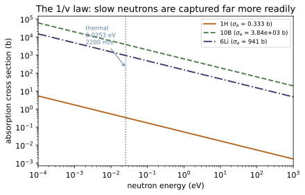


Example problems
From Fig. 7.7, iron's total cross section is about 0.4 b at 27 keV and about 90 b at 28 keV. Estimate the fraction of neutrons passing through a 10 cm slab without interacting, at each energy. Check: 88% at 27 keV; $3\times10^{-33}$ at 28 keV.
Iron: $\rho=7.874$ g/cm³, $A=55.85$, so
At 27 keV, $\Sigma_t=0.0849\times0.4=0.0340$ cm⁻¹, so $\Sigma_t x=0.340$ and
At 28 keV, $\Sigma_t=0.0849\times90=7.64$ cm⁻¹, $\Sigma_t x=76.4$, and
(Using S&F's approximate read-off values; the point is the ratio, not the third figure.)
A 1 keV change in energy — 3.7% — changes the transmitted fraction by 33 orders of magnitude. Nothing in photon physics behaves remotely like this. That is what a resonance is, and it is why:
- neutron transport cannot use a coarse energy grid the way photon transport can — codes carry hundreds to thousands of energy groups (~NE-21); - "iron shields neutrons well" is a meaningless statement without specifying the energy; - resonance self-shielding matters: the outer layer of a lump absorbs so strongly at the resonance energy that the interior never sees those neutrons, so the lump's effective cross section is far below its nominal one. This is exactly why reactor fuel is lumped into rods rather than dissolved in the moderator (~NE-19).
2 g of ⁵⁵Mn is exposed for 2 minutes to a thermal flux of $10^{13}$ cm⁻² s⁻¹. ⁵⁵Mn(n,γ)⁵⁶Mn has $\sigma_\gamma=13.3$ b and ⁵⁶Mn has $T_{1/2}=2.579$ h. Find the activity immediately after. Check: book 2.609×10¹⁰ Bq; exact 2.598×10¹⁰ Bq.
The production rate is
and $\lambda=\ln2/(2.579\times3600)=7.466\times10^{-5}$ s⁻¹.
The book, stating that $t\ll T_{1/2}$, uses the linear form:
The exact form is the saturation law of ~NE-07:
The gap is 0.45%, and it is not arbitrary: expanding $1-e^{-x}\simeq x-x^2/2$ gives a relative error of exactly $\lambda t/2=0.448\%$. The book's answer is the high one, because the linear form ignores the decay that occurs during irradiation.
The approximation is safe here because $R$ has climbed only 0.9% of the way to saturation. It would not be safe for a 3-hour irradiation of the same foil, where the error reaches 25%. activation_activity therefore requires the half-life explicitly rather than silently choosing a form.
A fission neutron is born at 2 MeV. Estimate what slowing it to thermal buys in ²³⁵U fission probability, and weigh that against the cost in collisions. Check: ~600× in cross section; ~115 graphite collisions.
From the 1/v law anchored at thermal, dropping from 1 keV to 0.0253 eV multiplies an absorption cross section by
From 2 MeV the naive 1/v extrapolation would give $\sqrt{2\times10^6/0.0253} =8900$, but 1/v does not hold through the resonance region, so the honest comparison is measured: $\sigma_f(^{235}\text{U})$ is 587 b thermal against roughly 1 b at 1 MeV — about 600×.
The cost, from ~NE-08, is 115 elastic collisions in graphite (18 in hydrogen), each of which risks capture. So moderation trades ~10² collisions for ~10³ in reaction probability: worth it by an order of magnitude, and the margin is what makes thermal reactors possible with only 0.7%-enriched uranium.
A fast reactor declines this trade deliberately. It runs at ~1 b instead of 587 b and compensates with much higher fuel enrichment and a much larger neutron population — which is exactly why fast reactors need 15–20% enrichment or plutonium fuel while thermal reactors run on 3–5%.
Boron carbide (B₄C) is the standard control-rod material. Natural boron is 19.9% ¹⁰B and 80.1% ¹¹B. Compute the absorption cross section of natural boron and of enriched ¹⁰B, and explain the enrichment. Check: natural 764 b; ¹⁰B 3840 b.
From Table C.1, $\sigma_a(^{10}\text{B})=3840$ b (essentially all $(n,\alpha)$) and $\sigma_a(^{11}\text{B})=0.00553$ b. Atom-weighted,
so ¹¹B contributes 0.0004 b of the 764 — one part in two million. Natural boron is, for neutron purposes, 19.9% useful material and 80.1% inert filler.
Enriching to pure ¹⁰B multiplies the cross section by 5.0, letting a control rod be five times thinner or five times more effective at the same size. That is why enriched ¹⁰B is used where space is tight, despite the cost.
The ¹⁰B(n,α)⁷Li reaction is doubly convenient: the products are charged and stop locally (no penetrating secondary radiation, unlike a capture gamma), and the reaction has no resonances — it is 1/v over the whole thermal and epithermal range, so a boron rod's worth is predictable rather than energy-dependent. Both properties are why boron also lines neutron detectors (~NE-15).
Compute η for ²³³U, ²³⁵U and ²³⁹Pu and explain why ²³³U is the best of the three despite having the smallest ν. Check: 2.28, 2.08, 2.11.
$\eta=\nu\sigma_f/\sigma_a$ with $\sigma_a=\sigma_f+\sigma_\gamma$:
| | $\nu$ | $\sigma_f$ | $\sigma_\gamma$ | $\alpha$ | $\eta$ | |---|---|---|---|---|---| | ²³³U | 2.48 | 529 | 46 | 0.087 | 2.282 | | ²³⁵U | 2.43 | 587 | 99 | 0.169 | 2.078 | | ²³⁹Pu | 2.87 | 749 | 271 | 0.362 | 2.107 |
²³⁹Pu produces the most neutrons per fission by a wide margin (2.87 against 2.48), and still ends up below ²³³U per neutron absorbed. The reason is entirely $\alpha$: 27% of ²³⁹Pu's thermal absorptions are captures rather than fissions, against 8% for ²³³U.
Two consequences. Breeding requires $\eta>2$ — one neutron to sustain the chain, one to convert a fertile nucleus, plus margin for leakage and parasitic absorption. All three clear 2, but only just, and only ²³³U clears it comfortably in a thermal spectrum. That is the technical case for the thorium–²³³U cycle, and why the alternative (²³⁸U→²³⁹Pu) is pursued in fast spectra instead, where ²³⁹Pu's η rises to about 2.4.
The second consequence is ~NE-19: η is the first of the four factors, and everything else in the four-factor formula is a number less than 1 eating into it.
Rank ¹H, ²H and ¹²C as moderators using both ξ (from ~NE-08) and the scattering-to-absorption ratio. Check: σ_s/σ_a = 92 (¹H), 8400 (²H), 1394 (¹²C).
Two properties matter and they pull in opposite directions.
| | $\xi$ | collisions to thermal | $\sigma_s/\sigma_a$ | |---|---|---|---| | ¹H | 1.000 | 18 | 92 | | ²H | 0.725 | 25 | 8400 | | ¹²C | 0.158 | 115 | 1394 |
Hydrogen slows neutrons fastest — one collision can stop a neutron dead (~NE-08) — but absorbs 92× less often than it scatters, which sounds fine until you multiply by 18 collisions: about 18% of neutrons are lost. That is survivable only with enriched fuel, which is exactly why light-water reactors cannot run on natural uranium.
Deuterium slows more slowly (25 collisions) but absorbs 8400× less often, losing only ~0.3%. Heavy water is the reason CANDU reactors run on natural uranium and need no enrichment plant at all — a proliferation-relevant difference that follows directly from one cross-section ratio.
Graphite sits in between and has the advantage of being a cheap solid.
The proper figure of merit combines both, the moderating ratio $\xi\Sigma_s/\Sigma_a$, which ~NE-19 develops. The lesson here is that ξ alone ranks ¹H first and the full picture ranks ²H first.
Explain, using §3 of the notes, why reactor fuel is fabricated into rods rather than dissolved uniformly in the moderator. Check: ²³⁸U's capture resonances sit at eV energies, < 1 eV wide.
A neutron born at 2 MeV must reach 0.025 eV. On the way down it passes through the eV region, where ²³⁸U has narrow, extremely tall capture resonances (heavy nuclide: eV energies, <1 eV widths). Every neutron captured there is lost from the chain, and ²³⁸U is 99.3% of the fuel.
Two geometries:
- Homogeneous (fuel dissolved in moderator): a neutron slowing down is always adjacent to ²³⁸U, so it passes through the resonance energies in the presence of the absorber. Capture probability is high. - Heterogeneous (fuel lumped into rods): most of the slowing-down happens in the moderator between rods, where there is no ²³⁸U. A neutron crosses the dangerous energy band in a region where the absorber is absent, then re-enters the fuel already thermal, where ²³⁵U's 587 b is waiting.
There is a second, reinforcing effect. At a resonance energy the fuel's cross section is so large that the outer skin of a rod absorbs essentially everything — resonance self-shielding — so the interior of the rod is shadowed and the lump's effective resonance absorption is far below what its mass suggests.
Both effects raise the resonance escape probability, and both require the fuel to be spatially separated from the moderator. This is why every thermal power reactor ever built uses discrete fuel rods, and it is a design consequence that falls directly out of the resonance widths in §3.
Run the worked code: cd NE/NE-13_neutron_interactions/code && python3 neutron_interactions.py
NE-14 — Charged-particle stopping: range, stopping power, the Bragg peak
NE trunk · NE/NE-14_charged_particles
Neutral particles interact a handful of times and attenuate exponentially, with no range. Charged particles interact continuously with many electrons at once, lose very little each time, and so slow down almost deterministically and stop at a definite range — a beam is unattenuated until the end, then falls off a cliff. Stopping power goes as z²(Z/A) and rises as the particle slows, so energy deposition peaks just before the stop: the Bragg peak, which is why a proton beam can put its dose maximum inside a tumour and nothing beyond. Ranges follow S&F's empirical fit over 0.1–10 MeV, with three scaling rules (ρR is density-independent; ρR ∝ m/z² at matched speed). Bremsstrahlung is an electron-only problem — the (m_e/M)² makes a proton's radiative loss 3×10⁶ times smaller — and its linear Z is why beta shields are plastic first, lead second.
Key equations
Figures
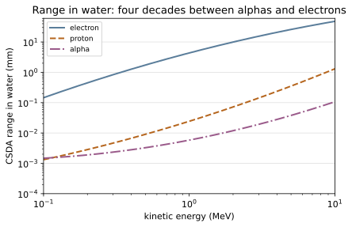

![Stopping power against depth for alphas in water, reconstructed by differentiating the range-energy relation (csda_mass_range). Energy loss RISES as the particle slows and peaks just before it stops -- W.H. Bragg's 1904 observation. Everything about charged-particle dosimetry follows: the dose maximum is deep, it is sharp, and there is essentially nothing beyond it. That is the entire basis of proton and heavy-ion therapy (NE-27) and the reason an inhaled alpha emitter is far more damaging than the same activity outside the body (NE-18).](NE/NE-14_charged_particles/figures/fig3_bragg_curve.svg)

Example problems
For a 5 MeV electron, what is the ratio of bremsstrahlung loss to collisional loss in air, and in lead? Check: air 5.2%; lead 59%.
Eq. (7.43) with $m_e/M=1$:
Air is 78% N ($Z=7$), 21% O ($Z=8$), 1% Ar ($Z=18$), giving an effective $Z\simeq7.3$:
Lead, $Z=82$:
In lead, more than a third of a 5 MeV electron's energy leaves as photons. That is the whole reason high-energy electron accelerators are surrounded by massive photon shielding rather than the thin absorbers the electron range alone would suggest — an electron stopping in 3 mm of lead makes x-rays that need centimetres.
The crossover, where the two losses are equal, is $700/82=8.5$ MeV in lead. At 5 MeV we are below it but not far.
About what thickness of aluminium stops (a) 2.5 MeV electrons, (b) 2.5 MeV protons, (c) 10 MeV alphas? Check: (a) 5.84 mm; (b) 58.8 μm; (c) 59.2 μm.
From Eq. (7.47) with Tables 7.2–7.3, and $\rho_{\text{Al}}=2.70$ g/cm³:
| | $\rho R$ (g/cm²) | $R$ | |---|---|---| | (a) 2.5 MeV electron | 1.5780 | 5.84 mm | | (b) 2.5 MeV proton | 0.01587 | 58.8 μm | | (c) 10 MeV alpha | 0.01597 | 59.2 μm |
Two things are worth more than the numbers.
The electron needs 99 times the thickness of the proton at comparable energy, and — from P1 — stopping it in a high-Z material would generate penetrating bremsstrahlung. Hence aluminium rather than lead.
(b) and (c) agree to 0.7%, and that is not a coincidence. A 10 MeV alpha and a 2.5 MeV proton have the same speed ($E\propto m$ at fixed $v$), and by rule 2 their ranges scale as $m/z^2 = 4/4 = 1$. The scaling rule of §3 predicted this before either was looked up.
Estimate the range of a 10 MeV triton in air. Check: 0.0594 g/cm² ≈ 49 cm.
Table 7.2 has no triton constants, so use rule 2 (S&F Example 7.7's method).
Step 1 — matched speed. $E_p=E_T\,(m_p/m_T)=10\times(1.00728/3.01605)=3.340$ MeV.
Step 2 — proton range in air at 3.340 MeV. Eq. (7.47) with $(a,b,c)=(-2.5510,1.5066,0.21732)$ and $x=\log_{10}3.340=0.5237$:
Step 3 — scale. $m/z^2=3/1=3$, so
and at $\rho_{\text{air}}=1.205\times10^{-3}$ g/cm³ that is 49 cm of air.
Note this is a tritium nucleus at 10 MeV, not the 18.6 keV beta tritium actually emits (~NE-05). Real tritium betas have a range of ~6 mm in air and cannot penetrate skin — which is why tritium is an internal hazard only, and why the two numbers must never be confused.
Janni's CSDA ranges for protons in aluminium are $2.953\times10^{-4}$, $4.020\times10^{-3}$ and 0.1692 g/cm² at 0.1, 1 and 10 MeV. Compare with Eq. (7.47). Check: −27.5%, −3.4%, +3.9%.
With $(a,b,c)=(-2.4108,1.4570,0.19861)$:
| $E$ (MeV) | Eq. (7.47) | Janni | difference | |---|---|---|---| | 0.1 | $2.142\times10^{-4}$ | $2.953\times10^{-4}$ | −27.5% | | 1.0 | $3.883\times10^{-3}$ | $4.020\times10^{-3}$ | −3.4% | | 10.0 | 0.17572 | 0.1692 | +3.9% |
The middle of the range is good to a few percent. The 0.1 MeV endpoint is 27% low — and that is the useful result, because 0.1 MeV is the stated lower bound of the fit's validity. A three-parameter quadratic in $\log E$ fitted over two decades is necessarily worst at its ends, and here the low end is bad enough that a 100 keV proton range taken from Eq. (7.47) would be meaningfully wrong.
Two lessons. Quote the fit's accuracy, not just its answer — S&F give the formula and the validity window but no error estimate, and this problem is effectively the missing one. And note that the module refuses to evaluate below 0.1 MeV at all: if the formula is already 27% off at the boundary, whatever it returns beyond it is meaningless.
Compare the range of the median heavy fission fragment (67.9 MeV) in air and in gold, using Eq. (7.48). Check: 2.33 mg/cm² in air; 8.32 mg/cm² in gold.
$\rho R=CE^{2/3}$ with $E^{2/3}=67.9^{2/3}=16.63$:
As lengths: 1.9 cm in air ($\rho=1.205\times10^{-3}$), and 4.3 μm in gold ($\rho=19.3$).
A fission fragment carries 68 MeV — thirty times a typical alpha — and travels one sixth as far in gold. The reason is $z^2$: a fragment leaves scission with about 20 units of charge (~NE-09), so it couples $\sim400$ times more strongly than a proton at the same speed.
The engineering consequence is the one ~NE-09 relies on: all 168 MeV of fission-fragment energy is deposited within a few microns of where the fission happened. The fuel pellet heats itself; the coolant only ever sees heat conducted out through the cladding. Everything about reactor thermal-hydraulics follows from that locality (~NE-22).
The dead outer layer of human skin is about 40 μm thick. Compare the range of a 5 MeV alpha in tissue with that, and explain the factor-20 radiation weighting factor alphas carry. Check: 38 μm in water — comparable to the dead skin layer.
From Eq. (7.47), a 5 MeV alpha in water has $\rho R=3.79\times10^{-3}$ g/cm², i.e. 38 μm. (ASTAR gives $3.63\times10^{-3}$, so the fit is 4% high here.)
Externally, that is about the thickness of the stratum corneum — the dead epidermal layer. An alpha emitter held against the skin deposits essentially all its energy in dead cells. A sheet of paper, or a few centimetres of air (its range in air is 3.6 cm), stops it completely.
Internally, the same 5 MeV is deposited in ~38 μm of living tissue — a path perhaps four cell diameters long. Along it, the Bragg peak of §2 concentrates the loss near the end. The result is dense, correlated ionization: many double-strand DNA breaks in a small volume, which cells repair far less successfully than the sparse damage a 1 MeV electron leaves along its 4 mm path.
That difference in spatial density of energy deposition — not the total energy — is what the radiation weighting factor $w_R$ encodes (~NE-18): 1 for photons and electrons, 20 for alphas. It is a statement about stopping power, and this module is where it comes from.
The practical corollary is the polonium-210 and radon cases: harmless in a sealed source, extremely dangerous inhaled or ingested.
A source emits 2 MeV betas. Compare shielding it with 5 mm of lead against 12 mm of acrylic, and design the better shield. Check: lead converts 23% of the energy to bremsstrahlung; acrylic 1.7%.
Both stop the betas. A 2 MeV electron has $\rho R=1.64$ g/cm² in lead (1.4 mm) and 0.99 g/cm² in water-like plastic (9.9 mm), so either thickness is ample.
The difference is what is made on the way. From Eq. (7.43):
| | $Z$ | radiative fraction at 2 MeV | |---|---|---| | lead | 82 | 23.4% | | aluminium | 13 | 3.7% | | acrylic (≈ carbon) | 6 | 1.7% |
Stopping the beta in lead converts nearly a quarter of its energy into bremsstrahlung x-rays, which are penetrating and now require their own shield. Stopping it in acrylic converts 1.7%.
The correct design is layered, low-$Z$ first:
1. enough acrylic or aluminium to exceed the beta range — this stops the betas while generating minimal bremsstrahlung; 2. lead behind that, to attenuate the small photon yield that is produced anyway.
Reversing the order — lead first — maximises exactly the secondary radiation you are trying to avoid. This is a standard mistake and it is a direct consequence of the linear $Z$ in Eq. (7.43).
(The same logic explains why ³²P sources, a common laboratory beta emitter at 1.7 MeV, are shipped in thick plastic rather than lead pots.)
Run the worked code: cd NE/NE-14_charged_particles/code && python3 charged_particles.py
NE-15 — Radiation detectors: gas-filled, scintillation, semiconductor
NE trunk · NE/NE-15_detectors
One quantity organises the whole chapter: the number of information carriers per event, N = E/w. Resolution is 2.355√(F/N), so it improves as 1/√N and the only lever is w. Germanium spends 2.98 eV per electron–hole pair, argon 26 eV per ion pair, NaI(Tl) ~150 eV per usable photoelectron — and that ladder is the entire ranking of detector families. Gas detectors are four instruments from one equation, M = f/(1−δf), whose divergence at δf = 1 is the proportional-to-Geiger transition. Scintillators trade brightness against speed, with the caveat that the photon yield is not the carrier count: NaI's 38 000 photons/MeV become ~6 600 photoelectrons. Semiconductors win on w but trade band gap against thermal noise (Ge needs cooling) and Z against resolution (CdTe stops better, resolves worse).
Key equations
Figures
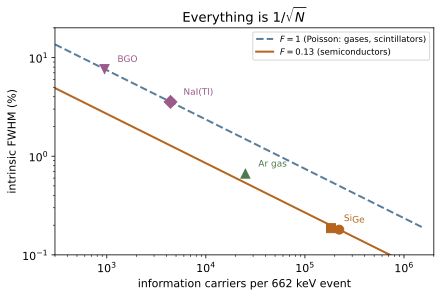
![S&F Eq. (8.7), M = f/(1 - delta f), with the classical operating regions shaded. An ion chamber collects the primary ionization with no gain; a proportional counter multiplies it while keeping output proportional to deposited energy; past delta f = 1 the avalanche is self-sustaining and every pulse is identical, which is the Geiger-Mueller regime. The same gas and the same geometry give four different instruments depending only on the applied voltage -- and gas_multiplication() raises rather than returning a negative number past the divergence.](NE/NE-15_detectors/figures/fig2_gas_multiplication.svg)


Example problems
What happens if (a) the anode wire diameter increases, (b) the fill-gas pressure increases, (c) the wall's atomic number increases?
All three act through Eq. (8.7), $M=f/(1-\delta f)$, but by different routes.
(a) Thicker anode wire → less gas gain. The field near a cylindrical anode is $E(r)=V/[r\ln(b/a)]$ [S&F Eq. (8.2)], so a larger anode radius $a$ lowers the peak field at the wire surface. Avalanche multiplication happens only within a few wire radii, where the field exceeds the ionization threshold, so a thicker wire means a smaller $f$ and a much smaller $M$. Proportional counters use very fine wires (25 μm is typical) for exactly this reason.
(b) Higher pressure → less gain at fixed voltage, but more stopping power. More gas means shorter mean free paths between ionizing collisions, so an electron gains less energy between collisions and multiplies less — $f$ falls, and the voltage must be raised to compensate. The compensating benefit is that a denser gas stops more radiation, raising efficiency. Pressure trades gain for efficiency.
(c) Higher wall $Z$ → more efficiency for photons, and a harder wall effect. By ~NE-12's $Z^4$, a high-$Z$ wall photo-absorbs far more strongly, and the photoelectrons it emits enter the gas and are counted. That raises gamma efficiency substantially — gas alone is nearly transparent to MeV photons. The cost is that the response now depends on the wall material rather than the gas, which spoils the detector as a tissue-equivalent dosimeter.
NaI(Tl) fluorescence has a mean lifetime of 230 ns. How long to collect 90% of the photons? Check: 530 ns.
Scintillation light decays exponentially, so the fraction collected by time $t$ is $1-e^{-t/\tau}$ — the same mathematics as ~NE-06, with $\tau$ in place of the mean life:
For reference: 50% arrives in 159 ns, 99% takes 1.06 μs.
This is why NaI is a slow scintillator. A counting system must integrate for roughly 500 ns per event to capture the charge, which sets a floor on the pulse pair resolving time and hence on the achievable count rate (~NE-16's dead time). LaBr₃(Ce), at 16 ns, needs only 37 ns for the same 90% — and that is why it, not NaI, goes into time-of-flight PET (~NE-27).
1 MeV deposited in anthracene produces 20 000 photons at 447 nm. What is the scintillation efficiency? Check: 5.5%.
Each photon carries
so the light energy is $20\,000\times2.774=55\,500$ eV and
94.5% of the deposited energy never becomes light at all — it ends as lattice vibrations. That is typical: even NaI(Tl), one of the best, manages only ~11% (38 000 photons at 415 nm). LaBr₃(Ce) reaches ~21%.
Equivalently, anthracene costs $w=50$ eV per photon — and after collection and photocathode conversion, several hundred eV per photoelectron. Set that against germanium's 2.98 eV and §1 of the notes needs no further argument.
Why?
An ion chamber only has to collect the primary charge; a proportional counter has to multiply it, and multiplication is fragile.
Air contains ~21% O₂, and oxygen is strongly electronegative: it captures drifting free electrons to form O₂⁻. A negative molecular ion is thousands of times heavier than an electron, drifts thousands of times more slowly, and — the fatal part — cannot be accelerated to ionizing energies in the avalanche region. Every electron captured is an electron removed from the multiplication chain, so $f$ becomes erratic and $M$ loses any stable relation to the deposited energy. Proportionality is destroyed.
In an ion chamber none of this matters much: the negative ion still carries its charge to the electrode, just more slowly, and the total collected charge is unchanged. Slow collection is tolerable because ion chambers are usually operated in current mode over long integration times.
Hence proportional counters use scrupulously electronegative-free fills — P-10 (90% Ar, 10% methane), pure argon, BF₃, ³He — while ion chambers can be open to the atmosphere, which is a great convenience for a survey instrument that must be tissue-equivalent anyway.
A NaI(Tl) detector has 8% energy resolution. What is the FWHM for ¹³⁷Cs? Check: 53 keV.
Resolution is defined as FWHM/E, so
and $\sigma=\text{FWHM}/2.355=22.5$ keV.
Two things follow. Since resolution is quoted at a stated energy and scales as $1/\sqrt E$, "8%" alone is meaningless — the same detector is ~11% at 300 keV and ~5.8% at 1.25 MeV. Always state the line.
And 53 keV is wider than the 159 keV separating ⁶⁰Co's two gammas is large: two peaks 53 keV wide, 159 keV apart, overlap substantially. This is the calculation behind figures/fig4.
Note the 8% is a measured figure. This module's statistical floor for NaI at 662 keV is 3.6%, so about $\sqrt{8^2-3.6^2}=7.1\%$ of the width comes from elsewhere — chiefly non-proportionality of the light yield with energy, and non-uniform light collection across the crystal.
Inorganic or organic, for γ rays, fast neutrons, β particles?
γ rays → inorganic. Photon detection needs photoelectric absorption, whose cross section goes as $Z^4$ (~NE-12). NaI ($Z=53$ for iodine), BGO ($Z=83$ for bismuth) and LaBr₃ all contain heavy elements and are dense; organic scintillators are hydrogen, carbon and oxygen ($Z\le8$) at ~1 g/cm³, and are nearly transparent to MeV gammas. Inorganics also give more light, hence better resolution — and for gammas one usually wants a spectrum, not just a count.
Fast neutrons → organic. Detection proceeds by elastic scattering off nuclei and then detecting the recoil (~NE-08). The recoil energy fraction is $1-\alpha=4A/(A+1)^2$, which is 1.0 for hydrogen and falls off fast — so a hydrogen-rich medium is required, and organics are ~50% hydrogen by atom count. A heavy inorganic barely transfers any energy to its recoils. Organics also allow pulse-shape discrimination: proton recoils and electrons produce different decay-time profiles, letting a neutron signal be separated from a gamma background. EJ-301/BC-501A exists for exactly this.
β particles → organic, usually plastic. Betas are stopped in millimetres (~NE-14), so density is not needed; low $Z$ is actively wanted, because it minimises the bremsstrahlung that would escape and the backscatter that would distort the spectrum. Thin plastic sheets are cheap, machinable to any shape, and can be made large. (For β spectroscopy rather than counting, a Si detector does better.)
Why do both exist?
Table 8.2 has the answer in two columns.
HPGe — $Z=32$, $\rho=5.33$ g/cm³, $w=2.98$ eV, $E_g=0.72$ eV. Advantages: the smallest $w$ of any practical material, hence the best resolution available (~0.16% at 1.3 MeV); high $Z$ and density give real photopeak efficiency at MeV energies. It is the gamma spectrometer. Disadvantages: the 0.72 eV band gap means enormous thermal carrier generation at room temperature, so it must be cooled to 77 K — a dewar, or a mechanical cooler, forever. It is also expensive and physically fragile.
Si(Li) — $Z=14$, $\rho=2.33$ g/cm³, $w=3.61$ eV, $E_g=1.12$ eV. Advantages: the larger gap tolerates warmer operation, and the low $Z$ is a virtue for x-ray and charged-particle spectroscopy — less backscatter, and a photopeak that is not dominated by escape peaks. It excels below ~30 keV, where silicon's photoelectric cross section is still adequate. Disadvantages: at $Z=14$ it is nearly transparent to MeV gammas, so photopeak efficiency collapses above a few hundred keV.
They do not compete; they cover different energies. Si(Li) for x-rays and low-energy photons, HPGe for gamma spectroscopy. The choice is set by ~NE-12's $Z$ dependence, not by anything in the detector physics of this chapter.
Run the worked code: cd NE/NE-15_detectors/code && python3 detectors.py
NE-16 — Counting statistics: Poisson counting, propagated error, dead time
NE trunk · NE/NE-16_counting_statistics
Radiation measurement is unusual in that the uncertainty is known from the single measurement: decay is Bernoulli, so a count x has variance x and σ/x = 1/√x. That is a wall — 1% needs 10 000 counts, 0.1% needs a million, and no improvement in electronics touches it. Errors then compound: a net rate is a difference, so the background contributes its own full uncertainty and never cancels, which is what makes detection limits a subject. And a detector busy with one event misses the next, so the observed rate understates the truth — a correction that diverges, and whose forward map saturates, meaning a saturated detector reads the same for any input above its ceiling.
Key equations
Figures
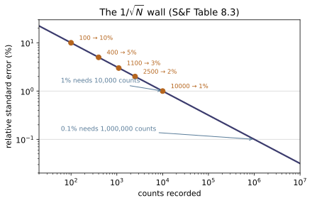

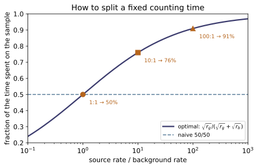

Example problems
A GM tube has $\tau=0.25$ ms and reads 900 counts/s. What is the true rate? Check: 1161 counts/s.
The dead fraction is
so the tube is unable to respond 22.5% of the time. From Eq. (8.15),
The correction is +29%, which is far outside S&F's own advice to keep $m\tau<0.05$. At this rate the measurement is dominated by the correction model, not by the data: switch to a lower-activity source, a smaller solid angle, or a detector with a shorter dead time.
For contrast, at $m\tau=0.05$ the correction is only 5.3%, and the maximum observed rate meeting that condition is $0.05/\tau=200$ counts/s for this tube.
The counts are 1255, 1286, 1234, 1301, 1221. What is the standard deviation of the average? By what factor would a sixth measurement change it? Check: 15.87; ×0.913.
The mean is
and by Eq. (8.13)
so the result is $1259\pm16$ counts per minute (one standard deviation, 68%).
A sixth measurement changes $N$ from 5 to 6, so
— an 8.7% improvement for a 20% increase in effort. That is $1/\sqrt N$ again, and it is why "just count longer" runs out of value quickly.
A check the problem does not ask for but should. The observed sample standard deviation of the five values is 33.8. Counting statistics predict $\sqrt{\bar x}=35.5$ for a single measurement. Those agree, which is evidence the source was stable over the series. Had the observed scatter been, say, 90, the excess would signal something real — a decaying source, a drifting detector — and quoting $\sigma_{\bar x}=15.9$ would then be badly optimistic. Always compare the two.
A sample gives 45 counts/s against negligible background. How long to reach 1% precision? 0.1%? Check: 3.7 minutes; 6.2 hours.
Precision is set by total counts, so invert Table 8.3:
For 1%, $N=10^4$ counts, requiring $10^4/45=222$ s $=\boxed{3.7\ \text{min}}$. For 0.1%, $N=10^6$, requiring $10^6/45=22\,222$ s $=\boxed{6.2\ \text{hours}}$.
A factor of ten in precision costs a factor of a hundred in time. This is the single most useful calculation in planning a measurement, and it explains a great deal of laboratory practice — why 1% is a common target and 0.1% is a research project, and why counting statistics rather than instrument quality is usually the binding constraint.
A 10-minute count gives 3120 counts; a 10-minute background gives 3000. Is the source detected? Check: net 0.200 ± 0.130 counts/s — a 1.5σ result, not a detection.
Rates are $5.200$ and $5.000$ s⁻¹, so the net is $0.200$ s⁻¹. The uncertainty is
So the net rate is $0.200\pm0.130$ s⁻¹ — 1.53σ, which by Table 8.4 would be exceeded by chance about 13% of the time if the true source strength were zero. That is not a detection by any conventional criterion (the usual thresholds are 3σ or the Currie limits).
Note how the raw numbers mislead: 3120 counts is a 1.8% measurement, and 3000 is 1.8%. The difference of two 1.8% numbers is a 65% measurement, because the difference is small and the errors add in quadrature.
To reach 3σ here you would need $\sigma_r\le0.067$, i.e. four times the counting time — 40 minutes each. That is the real cost of working near background, and it is why the low-background techniques of §2 exist.
You have one hour total. The sample reads about 50 counts/s and the background about 2 counts/s. How should the hour be divided, and how much does it matter? Check: 83% on the sample; an even split is 20% worse.
By the rule of §2,
so 50 minutes on the sample and 10 on the background.
The size of the win: with $\sigma_r^2=r_g/t_g+r_b/t_b$ over 3600 s,
| split | $\sigma_r$ (s⁻¹) | |---|---| | optimal (83/17) | 0.1414 | | even (50/50) | 0.1700 |
The even split is 20% worse, which by the $1/\sqrt N$ rule is equivalent to throwing away 44% of the hour. The rule costs nothing to apply, which is why it is worth knowing even though S&F omit it.
Note the direction: more time on the stronger sample, which surprises people who reason that the weaker background "needs more help". The background's contribution to the variance is already smaller; the optimum balances the two contributions, not the two rates.
A survey meter has $\tau=50$ μs. You approach a source and the reading climbs to 14 000 counts/s, then stops rising. What is going on? Check: the ceiling is $1/\tau=20\,000$ s⁻¹; the true rate is unknowable.
The forward map is $m=n/(1+n\tau)$, which saturates:
At a reading of 14 000, $m\tau=0.70$. Formally Eq. (8.15) gives $n=14\,000/0.30=46\,700$ s⁻¹ — but that correction is more than double the measurement, so it is entirely a statement about the assumed model. The paralysable model would give a different answer, and in that model the observed rate actually falls at very high input, so a low reading could correspond to an enormous field.
true_rate refuses past $m\tau=0.5$ for exactly this reason.
What the reading "stopping" means is that the instrument is at or near saturation, and the field could be anything from 50 000 to 10⁹ s⁻¹. The correct response is to back away and use an instrument with a shorter dead time or a different principle (an ion chamber in current mode does not have this failure mode at all, because it does not resolve individual events).
This is why survey instruments are designed to peg high or alarm rather than fold over, and why a suspiciously low reading near a known strong source must never be taken at face value.
Two sources read 8000 and 10 000 counts/s separately, and 16 900 together (backgrounds negligible). Estimate $\tau$. Check: 6.9 μs.
If there were no dead time the combined rate would be 18 000 s⁻¹. It is 16 900, so 1100 counts/s are lost. To leading order,
This is the two-source method, and it is how $\tau$ is actually obtained — S&F give Eq. (8.15) without ever saying where the dead time comes from. The method works precisely because the losses are non-linear: if counting were linear the combined rate would be exactly the sum and there would be no signal to measure.
Two cautions. The formula is leading-order and always underestimates — the module's test shows it is 4% low at modest loss and 23% low when $(n_1+n_2)\tau\simeq0.8$, so the sources should be weak enough that $m\tau\lesssim0.1$. And the result is model-dependent in the same way as Eq. (8.15) itself: this is the non-paralysable $\tau$, and a paralysable analysis of the same three numbers gives a different value.
Run the worked code: cd NE/NE-16_counting_statistics/code && python3 counting_statistics.py
NE-17 — Dosimetry: kerma, absorbed dose, equivalent & effective dose
NE trunk · NE/NE-17_dosimetry
It takes four quantities to get from "there is a radiation field" to "this is how much it matters", and each one is a correction to the last: kerma (energy released to charged particles), absorbed dose (energy actually deposited), equivalent dose (weighted by track density), effective dose (weighted by which organ). The gaps between them are the physics — bremsstrahlung separates the first two by 6.5% in iron at 5 MeV, the quality factor spans a factor of 20, and the organ weights span 25. The module also closes the conversion S&F leave open, 1 R = 8.73 mGy in air, which is what turns a survey-meter reading into a dose.
Key equations
Figures
![Left: absorbed dose per unit photon fluence (absorbed_dose with mu_en from Appendix C.3). Air and water differ by only ~11% across the whole MeV range, which is the accident that lets exposure -- defined entirely in air -- survive as a proxy for tissue dose. Lead does not track them at all, so a lead-walled ion chamber does not read tissue dose. Right: the gap between kerma and absorbed dose, mu_tr/mu_en - 1. It is the fraction of secondary-electron energy radiated away as bremsstrahlung, negligible below ~1 MeV and 6.5% for iron at 5 MeV (S&F Example 9.1); it grows with Z and with energy, which is exactly when the two words stop being interchangeable.](NE/NE-17_dosimetry/figures/fig1_dose_per_fluence.svg)
![The field rule Xdot = 6CEN/r^2 (S&F Ch. 9 Prob. 6) divided by the exact Eq. (9.9). The rule is really the statement that air's mu_en/rho is constant at 0.02866 cm2/g, and it holds within 20% from 0.12 to 1.9 MeV -- more than a decade, which is why it survives on clipboards. It fails in both directions and for different reasons: photoelectric absorption lifts mu_en below 0.1 MeV, Compton scattering drops it above 2 MeV. Note the failure at high energy is 65% HIGH at 5 MeV, so the rule is conservative for a dose estimate and wasteful for a shield.](NE/NE-17_dosimetry/figures/fig2_rule_of_thumb.svg)
![S&F Table 9.1 quality factors (quality_factor). The same absorbed dose is weighted by anything from 1 to 20 depending on how densely the energy is laid down along a track, so a dose in grays without its radiation type says nothing about hazard. The neutron curve peaks at 0.1-2 MeV -- which is precisely where the fission spectrum lives (~NE-09), so a reactor's neutron field is weighted at the maximum. This is also why quality_factor() refuses an unrecognised radiation rather than defaulting to 1: that default would understate a fast-neutron dose twentyfold.](NE/NE-17_dosimetry/figures/fig3_quality_factor.svg)
![Left: S&F Tables 9.5 and 9.6. Natural background is 2.4 mSv/y worldwide and 3.0 mSv/y in the U.S., and inhaled radon is half of the first and two thirds of the second -- so the dominant human radiation exposure is a decay product of uranium in soil, not anything engineered. This is the yardstick every other number in ~NE-18 is measured against. Right: the Table 9.2 and 9.3 tissue weighting factors, with ICRP Publication 103 (2007, beyond S&F) added. The gonad weight fell 0.25 -> 0.20 -> 0.08 as the hereditary-risk estimate came down while breast rose to 0.12: these are scientific judgements encoded as arithmetic, and an effective dose is only ever quoted with respect to one vintage of them.](NE/NE-17_dosimetry/figures/fig4_background_and_weights.svg)
Example problems
Infinite air, density 0.0012 g/cm³, containing tritium at 2.3 pCi/L. Tritium has $T_{1/2}=12.33$ y and an average beta energy of 5.37 keV per decay. What is the air-kerma rate? Check: 0.219 nGy/h as stated; 0.232 nGy/h using Appendix D's 5.67 keV.
In an infinite homogeneous medium with a uniformly distributed source, energy is absorbed at exactly the rate it is emitted — there is nowhere else for it to go — so the kerma rate is just emitted power per unit mass, with no transport calculation at all. Decays per hour per litre:
and each carries $5.37\times10^{-3}$ MeV $\times\,1.602\times10^{-13}$ J/MeV:
The printed problem says 5.37 MeV, and that is impossible. Tritium's entire decay energy is 18.6 keV, so the beta cannot carry 5.37 MeV; the book's own Appendix D gives 5.67 keV/decay, which yields 0.232 nGy/h. The authors' solution manual restates the problem in keV, substitutes MeV anyway, and then reports its own $2.196\times10^{-7}$ Gy/h as "22.0 µGy/h" — it is 0.2196 µGy/h. Three errors in one short problem, all of which a units check catches.
Sanity: continuous exposure at 0.23 nGy/h is 2 µGy per year, roughly a thousandth of the terrestrial gamma background. That is the right order for a trace tritium concentration, and it is the check that tells you 22 µGy/h could not be right.
700 µCi of ¹³⁷Cs; the 0.662 MeV gamma is emitted 0.849 times per decay. At 2 m, find the exposure rate, the air kerma rate, and the dose-equivalent rate. Check: 56.1 µR/h; 0.490 µGy/h; 0.544 µSv/h.
The photon emission rate is
and air attenuation over 2 m is negligible, so
Interpolating Appendix C.3 at 0.662 MeV gives $(\mu_{en}/\rho)_{\rm air}=0.02931$, $(\mu_{tr}/\rho)_{\rm air}=0.02937$ and $(\mu_{en}/\rho)_{\rm water}=0.03260$ cm²/g.
using water for tissue and $QF=1$ for photons.
Three consistency checks worth making. Converting the exposure with 1 R = 8.73 mGy gives 0.490 µGy/h in air, matching (b) to 0.2% — the residual is the $\mu_{en}$/$\mu_{tr}$ difference, which is exactly what it should be at 0.662 MeV. Tissue reads 11% higher than air, the ratio of the two $\mu_{en}$; that 11% is nearly energy-independent, which is why exposure survives as a proxy at all. And 0.544 µSv/h continuous is 4.8 mSv/y — twice natural background — so this is not a source to keep on a desk.
Now in a large water tank; uncollided photons only, at 0.5 m. Check: 12.1 µR/h; 0.106 µGy/h; 0.118 µSv/h.
Water's total coefficient at 0.662 MeV is $\mu=0.08604$ cm⁻¹, so
and the three answers scale with $\phi$: $\boxed{12.1\ \mu\text{R/h}}$, $\boxed{0.106\ \mu\text{Gy/h}}$, $\boxed{0.118\ \mu\text{Sv/h}}$.
Read the competition between the two factors. Moving from 200 cm to 50 cm multiplies the geometric term by 16; the attenuation term $e^{-4.302}=0.0135$ divides by 74. Net, four times closer is 4.6 times less dose. Half a metre of water is 4.3 mean free paths, and that beats an inverse-square gain of sixteen comfortably — which is the whole argument for water as a spent-fuel shield.
Note "uncollided only" is doing real work: at 4.3 mfp the scattered photons dominate the true field, typically by a buildup factor of 5–10 (~NE-11). This answer is a lower bound on the dose, not an estimate of it.
1 mCi point sources, dose rate in air at 10 cm, using Appendix D's gamma lines. Check: ¹⁶N 1.27 mGy/h; ⁴³K 0.479 mGy/h.
Sum Eq. (9.6) over the discrete lines:
For ¹⁶N (two lines, 6.129 MeV at 69% and 7.115 MeV at 5%) the sum is $0.06931+0.00562=0.07493$, giving $\boxed{1.27\ \text{mGy/h}}$. For ⁴³K (six lines) the sum is 0.02823, giving $\boxed{0.479\ \text{mGy/h}}$.
The solution manual prints 1.611 mGy/h for ¹⁶N, and its own next problem proves that wrong. Its table lists $0.690\times6.129\times0.01639=0.08931$; the product is 0.06931. Problem 5 uses the same line and prints $0.006269=0.06931\times e^{-2.403}$. A 6 was transcribed as an 8.
The physics worth keeping: ¹⁶N delivers 2.7 times the dose of ⁴³K per becquerel, almost entirely because its photons are ten times more energetic. It is also why ¹⁶N — made continuously by ¹⁶O(n,p)¹⁶N in reactor coolant — dominates the radiation field around a running BWR's steam lines (~NE-22), and why its 7.13 s half-life makes that field vanish minutes after shutdown.
Check: ¹⁶N 0.115 mGy/h; ⁴³K 0.954 µGy/h (book 1.654 µGy/h — see below).
Insert $e^{-\mu^{\rm Fe}_ir}$ per line. For ¹⁶N the weighted sum falls from 0.07493 to 0.006790, so $\dot D=\boxed{0.115\ \text{mGy/h}}$ — the book's number exactly.
Attenuation sorts the two sources violently. 10 cm of iron cuts ¹⁶N's 6–7 MeV photons by a factor of 11, and ⁴³K's few-hundred-keV photons by a factor of 503. A shield does not merely reduce a field; it changes which nuclide you are looking at — outside the iron, ¹⁶N outshines ⁴³K by 121:1 where in the open air the ratio was 2.7:1.
For ⁴³K the book gets 1.654 µGy/h and this module gets 0.954 µGy/h. The whole difference is one coefficient: for the 617.5 keV line the solution manual uses the table's 0.8 MeV row ($\mu_{en}/\rho=0.02880$, $\mu^{\rm Fe}=0.5174$ cm⁻¹) instead of interpolating to 0.6175 MeV (0.02947 and 0.5905). In air that costs 1.2%; here it sits inside an exponential over 10 cm and the answer comes out 1.73× too high. Every other coefficient in both tables is reproduced exactly, which is what identifies this one.
$\dot X=6CEN/r^2$ with $C$ in Ci, $E$ in MeV, $r$ in feet, $\dot X$ in R/h. (a) Restate it in Bq and metres. (b) Over what energies is it good to 20%? Check: $1.507\times10^{-11}$; roughly 0.12–1.9 MeV.
(a) Substituting $C(\text{Ci})=C(\text{Bq})/3.7\times10^{10}$ and $r(\text{ft})=r(\text{m})/0.3048$,
(b) Comparing with the exact Eq. (9.9) shows what the rule is: the exact expression carries a factor $(\mu_{en}/\rho)_{\rm air}$ where the rule carries a constant, so the rule is exactly right where
and its error is just the fractional departure of air's coefficient from that. Air's $\mu_{en}/\rho$ is remarkably flat — 0.0233 to 0.0297 over two decades — so the rule holds within 20% from about 0.12 MeV to 1.9 MeV.
It fails in both directions, for different reasons: below 0.1 MeV the photoelectric effect lifts $\mu_{en}$, above 2 MeV Compton scattering drops it. Note the direction at high energy — at 5 MeV the rule is 65% high, i.e. conservative for a dose estimate and wasteful for a shield.
A curiosity the closed form hides: air's coefficient has a shallow local minimum near 0.1 MeV, so the 20% band is not quite one interval — the rule dips to 23% error right at 0.1 MeV and recovers on both sides. rule_of_thumb_valid_range returns the band containing 1 MeV and its docstring says so.
An ion chamber reads 12 mR/h in a ¹³⁷Cs field. What is the dose rate to tissue, and how long can someone stand there? Check: 105 µGy/h in air, 117 µGy/h in tissue; 8.6 h to 1 mSv.
The instrument reports exposure, which is charge per unit mass of air. Convert with the relation S&F never write down:
Tissue absorbs more per gram than air does, by the ratio of the two $\mu_{en}$ — the "f-factor":
so $\dot D_{\rm tissue}=\boxed{117\ \mu\text{Gy/h}}$, and with $QF=1$ that is 117 µSv/h.
to reach the annual public limit, or 172 hours to reach 20 mSv.
Two things make this problem worth doing. First, $f=1.11$ is nearly energy-independent from 0.1 to 3 MeV (1.095 to 1.113) — that accident is the entire justification for a unit defined in air being used to protect people. Second, the answer reframes the reading: 12 mR/h sounds small, and continuous occupancy would be 1.0 Sv/y. Survey readings only mean something once multiplied by an occupancy time.
A field delivers 0.20 mGy/h of gammas and 0.050 mGy/h from 1-MeV neutrons. What is the equivalent dose rate, and how long to 20 mSv? Check: 1.20 mSv/h; 16.7 h. Ignoring QF understates it 4.8-fold.
Absorbed doses add; equivalent doses add after weighting:
using $QF=20$ for 1-MeV neutrons [Table 9.1]. The 20 mSv limit is reached in $\boxed{16.7\ \text{hours}}$.
The neutrons are 20% of the energy and 83% of the hazard. An instrument that measures only absorbed dose — or a calculation that quietly takes $QF=1$ — would report 0.25 mSv/h and permit 80 hours, a 4.8-fold error in the unsafe direction.
This is precisely why quality_factor raises on an unrecognised radiation rather than returning 1. It is also why mixed-field dosimetry needs a neutron-sensitive detector alongside the gamma one (~NE-15): the neutron component is invisible to the instrument that dominates the reading, and it dominates the risk.
Note too where 1 MeV sits — dead in the middle of the QF = 20 band, which is where the fission spectrum lives. The worst quality factor and the most common reactor neutron are the same neutron.
Run the worked code: cd NE/NE-17_dosimetry/code && python3 dosimetry.py
NE-18 — Radiation health effects: deterministic & stochastic risk, LNT, standards
NE trunk · NE/NE-18_health_effects
Two kinds of effect that behave oppositely. Deterministic effects have a threshold below which nobody is affected, and above it the severity grows with dose — 60-day lethality goes from 5% to 99% over a factor of 2.2 in dose. Stochastic effects (cancer, hereditary illness) have no established threshold and change only the probability; they are invisible below ~0.2 Gy, which is exactly where every regulation is written. Everything in §§9.7–9.9 is therefore an extrapolation, LNT is the extrapolation regulation uses, and §9.10 is the book's own account of why that is contested. The module carries all five candidate dose-effect shapes and fits none.
Key equations
Figures
![Left: S&F Table 9.7, sorted by threshold. A deterministic effect does not occur below its threshold in ANYONE -- the bar is a real edge, not a small probability -- and above it severity grows with dose. The testes are the most radiosensitive endpoint in the table at 0.3 Gy, six times below the marrow-death threshold. Every one of these sits far above the 50 mSv annual occupational limit, which is set by stochastic risk instead. Right: 60-day lethality without treatment (lethality_fraction, Table 9.8). The span from 'almost everyone lives' to 'almost everyone dies' is only a factor of 2.2 in dose, which is why accident dosimetry has to be good to tens of percent.](NE/NE-18_health_effects/figures/fig1_deterministic.svg)
![The five dose-effect models of S&F Fig. 9.3. Left: at doses of order 1 Gy they are plainly different curves. Right: the same five on log axes, with the shaded band marking where S&F say excess cancer risk 'cannot be observed' -- below about 0.2 Gy. Every dose limit in Table 9.17 lies inside that band, four to two hundred times below its upper edge. The regulatory choice of the linear no-threshold model is not a measurement; it is the most conservative shape available where measurement stops, which is exactly the argument S&F §9.10 lays out and does not settle.](NE/NE-18_health_effects/figures/fig2_dose_effect_models.svg)
![Excess lifetime cancer mortality per 100 000 people exposed to 0.1 Gy, against age at exposure (cancer_risk_at_age, S&F Table 9.13). Solid-cancer risk falls elevenfold from infancy to age 80 while leukemia risk is nearly flat -- and the reason is latency, not biology of the exposure: solid cancers seldom appear before 10 years and keep appearing for 30 or more, so an 80-year-old may not live to express one, whereas leukemia appears within a few years and largely disappears within 30. Women carry roughly 1.5x the solid-cancer risk of men, which is the same asymmetry as the beta = 0.57 vs 0.33 in the BEIR-VII model of Eq. (9.16).](NE/NE-18_health_effects/figures/fig3_cancer_risk_vs_age.svg)
![Left: how S&F Eq. (9.19)'s potential alpha energy divides among the four short-lived 222Rn daughters (potential_alpha_energy_per_bq). 214Pb and 214Bi emit no alpha particles at all and yet carry 90% of the hazard, because each is worth 214Po's 7.69 MeV held in escrow and each lives hundreds of times longer than 218Po; 214Po's own term is negligible because it lives 164 microseconds. That is why the dose depends on the daughter mixture and not on the radon itself. Right: S&F Table 9.15. A smoker's radiogenic risk is ten times a non-smoker's for the same exposure -- the two hazards multiply rather than add, so radon remediation is worth ten times as much to a smoker.](NE/NE-18_health_effects/figures/fig4_radon.svg)
Example problems
A male worker receives an accidental whole-body dose of 2.3 Gy. What symptoms, and when? Check: six Table 9.7 thresholds passed; ~5% 60-day lethality; survivable.
The answer is a timeline, not a number. From Table 9.7 the dose passes six thresholds — testes (0.3 Gy), eye lens (0.5), GI vomiting (0.5), ovary-equivalent (0.6), GI diarrhea (1.0) and bone-marrow death (1.8) — and misses skin erythema (3.0).
| when | what | |---|---| | minutes–48 h | prodromal: nausea, vomiting, fatigue, weakness [Table 9.10] | | 2–3 weeks | latent stage — apparent well-being | | ~46 days | sperm count begins to fall; ~80% down by 74 days | | 3–6 weeks | manifest illness: ~30% drop in blood-cell production, infection risk | | beyond 6 weeks | recovery likely if he survives |
Quantitatively: 2.3 Gy sits in Table 9.8's LD5/60 band (2.0–2.5 Gy), so roughly $\boxed{5\%}$ 60-day lethality without treatment — and marrow death is possible but not likely, since its $D_{50}$ is 3.8 Gy. Modern supportive care (transfusion, antibiotics, colony-stimulating factors) moves this substantially; Table 9.8 is explicitly the untreated case.
Note what is not the point. The stochastic risk from 2.3 Gy — about a 13% lifetime chance of a radiogenic fatal cancer at 0.057/Gy — is real but is not what sends him to hospital. Deterministic and stochastic effects operate on completely different timescales and both must be quoted.
500 000 people receive an average whole-body 0.5 rad (0.005 Gy). Check: 2500 person-Gy; 8–12 first-generation hereditary cases; 143 cancer deaths against 102 100 natural.
(a) Collective gonad dose $=5\times10^5\times0.005=\boxed{2500}$ person-Gy.
(b) From Table 9.11, 3000–4700 first-generation cases per Gy per million progeny:
Over the first two generations the table's 3950–6700 gives 10–17.
(c) Naturally, 738 000 per million progeny, i.e. $\boxed{369\,000}$ cases among 500 000 births. The radiation contribution is 1 case in 30 000 natural ones.
(d) At 0.057 fatal cancers per Gy, $5\times10^5\times0.005\times0.057=\boxed{143\ \text{deaths}}$, against a natural expectation of $0.5(22\,810+18\,030)/10^5\times5\times10^5=\boxed{102\,100}$ — 0.14%.
The honest framing is that last ratio. 143 deaths is a large number and it is also undetectable: a 0.14% shift on 102 100 is far inside the year-to-year variation of the natural rate, which is why an epidemiological study of this population would find nothing whatever the truth was.
900 000 people receive an extra 125 mrem/y (whole-body, low-LET). Check: 3.38 × 10⁴ person-Gy; 133–226 cases per generation against 266 000 natural.
Taking a 30-year mean reproductive age, each person accumulates $30\times1.25$ mSv $=0.0375$ Gy to the gonads, so
At 3950–6700 cases per 10⁶ person-Gy this is $\boxed{133\text{–}226}$ cases per generation.
Naturally: with a 75-year lifespan and 30-year reproduction interval there are $(30/75)\times900\,000=360\,000$ liveborn per generation, so $738\,000\times0.36=\boxed{266\,000}$ natural cases — the radiation contributes 0.06%.
This is the calculation that makes high-background regions interesting. Places like Kerala and Yangjiang have exactly this structure, and the predicted excess is three orders of magnitude below the natural incidence. The studies S&F cite in §9.10.2 that find inverse correlations there are not detecting hormesis over LNT; they are detecting that neither model predicts anything measurable, and that whatever else varies between regions dominates.
How many U.S. deaths per year from cancer caused by natural background (excluding radon lung dose)? Assume 200 mrem/y and 320 million people. Check: ~2.7 × 10⁶ lifetime excess, ~36 000/y, about 5.6% of natural cancer mortality.
200 mrem/y = 2 mGy/y continuous, so use Table 9.14's second scenario (continuous lifetime 1 mGy/y), whose excess mortality is 332 (M) and 497 (F) per 10⁵. Scaling linearly to 2 mGy/y,
lifetime excess deaths. For a static population with a 73.1-year lifespan that is $\boxed{36\,000\ \text{per year}}$, against a natural cancer mortality of $0.5(239.9+162.7)/10^5\times3.2\times10^8=\boxed{644\,000}$ per year — 5.6%.
Careful with the table. The solution manual works this problem with the (480 + 660) figures, which are the single 0.1 Gy scenario, and then scales them by "2 mGy / 1 mGy" — mixing a one-off exposure risk with an annual rate. That gives 3.7 × 10⁶ instead of 2.7 × 10⁶. Table 9.14 has a row for exactly this question; use it.
And treat the answer with suspicion in the other direction too: it is LNT applied at 2 mGy/y, a fiftieth of the dose at which any excess has ever been seen. The result is a property of the model.
A male reactor operator receives 0.95 rem whole-body in a week. Probability he (a) dies of cancer, (b) dies of cancer caused by this, (c) has a child with hereditary illness, (d) has one caused by this? Check: 22.8%; 5.4 × 10⁻⁴; 73.8%; ~5 × 10⁻⁵.
0.95 rem = 9.5 mSv.
(a) From Table 9.14's natural expectation, $22\,810/10^5=\boxed{22.8\%}$. (b) $0.0095\times0.057=\boxed{5.4\times10^{-4}}$, about 1 in 1850. (c) From Table 9.11, $738\,000/10^6=\boxed{73.8\%}$ — nearly three in four, over a whole lifetime and counting multifactorial disease. (d) $(3950\text{–}6700)\times10^{-6}\times0.0095=\boxed{4\text{–}6\times10^{-5}}$.
Set (a) beside (b) and (c) beside (d). The exposure multiplies his cancer death risk by 1.0024 and his child's hereditary-illness risk by 1.00007. That comparison — not the absolute risk — is what a worker actually needs, and it is what the problem is for. Note also that 9.5 mSv in one week is a fifth of the annual limit, so it would be a reportable event even though the risk arithmetic looks negligible; limits control cumulative exposure, not single events.
75% of the time at 4.6 pCi/L with F = 0.6; 25% at 1.3 pCi/L with F = 0.8. Annual exposure on an EEC basis? Check: 0.756 MBq h m⁻³.
With 1 pCi/L = 37 Bq/m³, the concentrations are 170.2 and 48.1 Bq/m³. Apply $EEC=F\,C_0$ to each and weight by occupancy:
and over 8766 hours,
Note the equilibrium factor is not a detail. The higher-concentration environment has the lower F, and if you ignored F entirely you would get 1.22 MBq h m⁻³ — 62% too high. F is what converts a radon measurement into a hazard, and it is why the EPA's 4 pCi/L action level is quoted "uncorrected for disequilibrium, with F = 0.5 assumed".
For scale, 0.756 MBq h m⁻³ is 1.2 WLM per year — well above the U.S. residential average and around the EPA action level.
75% of the time at 25 Bq/m³ EEC, 25% at 5 Bq/m³, for life. (a) Non-smoker, (b) smoker? Check: 0.15%; 1.42%.
The occupancy-weighted EEC is $0.75(25)+0.25(5)=20$ Bq/m³, so the annual exposure is $20\times8766/10^6=0.175$ MBq h m⁻³. From Table 9.15,
The ratio is the answer worth remembering: 9.2×. Radon and tobacco multiply rather than add, because both act on the same bronchial epithelium and smoking both damages clearance and supplies the promotion step. Two consequences follow. Radon remediation buys a smoker nearly ten times what it buys a non-smoker — so remediation and cessation are not independent policies. And a radon risk quoted for a "general population" (Table 9.15's mixed row, 0.039) is an average over a population whose two halves differ tenfold; it describes almost nobody.
A 5 × 10¹³ Bq ¹³⁷Cs radiotherapy source was stolen from an abandoned clinic and broken open. The 0.662 MeV gamma is emitted 94.4% of the time. (a) Dose to someone one metre away for an hour. (b) Consequences. (c) 1000 further people received up to 200 mSv — expected cancers, and deaths? (d) Natural expectation? Check: 4.7 Gy; 23 cancers, 11 deaths, against 204 natural.
(a) Using ~NE-17, the fluence rate at 1 m is
and with water's $\mu_{en}/\rho=0.03260$ cm²/g at 0.662 MeV,
so an hour gives $\boxed{4.7\ \text{Gy}}$.
(b) That is above LD50/60 (3.0–3.5 Gy) and inside the LD90–LD99 range: without intensive treatment this is expected to be fatal. Historically the man who opened the source survived; four other people died, including a six-year-old child who ate food contaminated with the caesium chloride powder.
(c) From Table 9.14, incidence $0.5(900+1370)/(10^5\times0.1\ \mathrm{Gy})=0.1135$ per person-Gy and mortality 0.0570 per person-Gy, so at 0.2 Gy for 1000 people: $\boxed{23\ \text{cancers}}$ and $\boxed{11\ \text{deaths}}$.
(d) Naturally, $0.5(22\,810+18\,030)/10^5\times1000=\boxed{204}$ cancer deaths.
The two halves of this problem are the two halves of the module. The thief's 4.7 Gy is deterministic: a specific, predictable, near-certain illness in that person, on a timetable set by Table 9.8. The 1000 bystanders' 11 deaths are stochastic: nobody can be identified, the excess is 5% of a natural 204 and would never be detectable, and the number itself rests on linear extrapolation from 0.2 Gy — right at the edge of where S&F say excess risk becomes observable at all.
A note on the manual's arithmetic: it interpolates $\mu_{en}/\rho=0.03260$ correctly and then substitutes 0.03206 — the tabulated 0.8 MeV value — into the dose expression, giving 4.61 Gy. It is the same adjacent-row substitution that appears twice in the Chapter 9 solutions (~NE-17 refs.md); here it costs 2% and changes nothing about the conclusion.
Run the worked code: cd NE/NE-18_health_effects/code && python3 health_effects.py
NE-19 — The neutron life cycle: the four- and six-factor formulas, k_eff
NE trunk · NE/NE-19_neutron_cycle
A reactor is a bookkeeping problem: follow a generation of neutrons round the cycle and count. Six factors do the counting, and the physics is that they pull against each other — adding moderator raises the resonance escape probability and lowers the thermal utilization, so k_∞ has an interior maximum. For natural uranium that maximum is below 1 in every moderator except heavy water, which is why enrichment plants exist; lumping the fuel roughly doubles p and is the other way out, which is how CP-1 worked.
Key equations
Figures
![Why there is an optimum moderator-to-fuel ratio (S&F Fig. 10.4, computed here from Eqs. (10.9) and (10.11) for natural uranium). Adding moderator raises the resonance escape probability p -- neutrons cross 238U's resonances in fewer, larger steps -- and lowers the thermal utilization f, because the moderator itself starts absorbing the thermal neutrons. The two pull against each other, so k_inf has an interior maximum. In graphite that maximum is below 1 and no homogeneous natural-uranium reactor is possible; heavy water absorbs so weakly that it can be piled on until p is high without killing f, and its maximum clears 1.](NE/NE-19_neutron_cycle/figures/fig1_four_factors.svg)
![S&F Table 10.5: the best k_inf a homogeneous natural-uranium mixture can reach in each moderator. Only heavy water clears 1 -- which is the reason enrichment plants exist, and the reason the only natural-uranium power reactor in commercial service is the CANDU. The hatched bars show what S&F's printed Eq. (10.17) gives: it omits the fast fission factor eps and calls the remaining three-factor product the 'four-factor formula'. Water is the only row with eps != 1, and it is exactly the row that discriminates -- 0.888 with eps against 0.845 without. Tables 10.5 and 10.8 both include eps, so the tables and the equation disagree.](NE/NE-19_neutron_cycle/figures/fig2_optimum_moderators.svg)
![Left: S&F Table 10.8, the graphite lattice with 1.25 cm natural-uranium rods. Lumping the fuel roughly doubles the resonance escape probability against a homogeneous mixture at the same fuel-to-moderator ratio (dotted), because neutrons now slow down in moderator that contains no 238U at all and only those reaching resonance energies near a rod are in danger. That is enough to push k_inf above 1 where the homogeneous mixture peaks at 0.78 -- which is how Fermi's CP-1 worked on natural uranium. Right: the mechanism, Eq. (10.19). Resonance capture in a lump happens in a thin surface skin, so the integral falls as 1/sqrt(r rho) and a fatter rod hides more of its own 238U from the neutron flux.](NE/NE-19_neutron_cycle/figures/fig3_lumping.svg)
![Left: S&F Examples 10.4-10.5. Both non-leakage probabilities rise toward 1 as the core grows, so k_eff climbs from far below k_inf to k_inf itself; criticality is wherever it crosses 1, here at R = 127 cm. Note the fast term is the more punishing one in graphite, because the Fermi age tau = 368 cm2 is thirteen times water's. Right: the critical radius against the material's own k_inf, for three moderators. It diverges as k_inf approaches 1 -- a material only barely above 1 needs an unboundedly large core, which is why a natural-uranium reactor is necessarily a big one, and why water's tiny Fermi age lets a light-water core be metres rather than tens of metres across.](NE/NE-19_neutron_cycle/figures/fig4_criticality.svg)
Example problems
From Tables 10.1 and 10.2, find $g_a(T_0)$ for ²³⁵U at room temperature. Check: 0.978.
Table 10.1 is thermal-averaged, Table 10.2 is at 0.0253 eV, and Eq. (10.5) connects them at $T=T_0$:
What the number means. $g_a=1$ would say ²³⁵U is a perfect $1/v$ absorber. It is not quite — it has resonances just above thermal — and the 2.2% shortfall is exactly the correction the Westcott factor exists to carry. Repeat the exercise for ²³⁸U and you get $g_a=2.382/(0.8862\times2.6835)=1.002$: a clean $1/v$ absorber to two parts in a thousand, which is the check that the method — and the two tables — are sound.
The practical warning: the two tables differ by 13% for ²³⁵U, so taking $\nu$ from one and $\sigma_f$ from the other — which S&F's own Example 10.3 does — is a systematic few-percent error.
Find $\eta$ and the thermal-averaged macroscopic absorption cross section per uranium atom for natural uranium. Check: η = 1.339; Σ_a/N = 6.639 b.
With abundances 0.0055% ²³⁴U, 0.7204% ²³⁵U, 99.2745% ²³⁸U,
and only ²³⁵U fissions, so
Two things to notice. ²³⁵U is 0.72% of the atoms and supplies 64% of the absorption — the whole of the numerator and two thirds of the denominator. And η = 1.34 is the number the rest of the chapter fights: comfortably above 1, so a chain reaction is possible, but so far below 2 that after leakage, resonance capture and parasitic absorption there is very little margin left. Table 10.5 is the accounting of what remains.
Find η for 5 atom-% enriched uranium, and the enrichment giving η = 1.85 (ignore ²³⁴U). Check: 1.933; 3.13 atom-%.
With $e$ the ²³⁵U atom fraction,
At $e=0.05$ this is $\boxed{1.933}$. Setting $\eta=1.85$ and solving, $e=\boxed{3.13\%}$.
The shape is the point. η rises steeply at low enrichment and then flattens: 0.72% → 1.34, 3% → 1.84, 5% → 1.93, and the ceiling at pure ²³⁵U is only 2.08. Nearly all the benefit of enrichment is bought in the first few percent — which is why power reactors sit at 3–5% and why going higher buys little reactivity for a great deal of separative work (~NE-23).
A salt of fully enriched ²³⁵U in water, $1.5\times10^{-3}$ atoms of ²³⁵U per water molecule. (a) Why is p ≈ 1? (b) k_∞? (c) Critical radius of a bare sphere? Check: k_∞ = 1.251; R = 36.5 cm.
(a) The resonance escape probability describes capture in ²³⁸U's resonances. There is no ²³⁸U, so there is essentially nothing to escape from and p ≈ 1.
(b) With $\bar\sigma_a(\mathrm{H_2O})=(\sqrt\pi/2)(0.6644)=0.5888$ b and $N^{NF}/N^F=667$,
(c) $L^2=L^2_{\rm H_2O}(1-f)=8.12(0.3985)=3.24$ cm², $\tau=27$ cm². Solving
This problem is criticality safety in miniature. A 36 cm sphere is a bucket. Fissile material in solution is far more dangerous than the same mass dry, because the water is a near-ideal moderator at exactly the right ratio — and most historical criticality accidents were solutions. Note also that the fast leakage does the work here: $\tau=27$ cm² against graphite's 368, so the water core is small precisely because water thermalises in a few centimetres.
Homogeneous graphite + 1%-enriched uranium at $N_M/N_U=500$, ignoring ²³⁴U and taking ε = 1. Find k_∞. Check: 0.900.
Per uranium atom, $\Sigma_a^U/N^U=592.6(0.01)+2.382(0.99)=8.284$ b, so
For p, $N_{238}/N_C=0.99/500=1.98\times10^{-3}$ and Eq. (10.9) with graphite's ξ = 0.158, σ_sM = 4.8 b gives $p=0.730$. Hence
Subcritical — and the reason is p, not the enrichment. 27% of the neutrons are lost to ²³⁸U resonances even at 1% enrichment and 500:1 moderation. Compare P4, where p = 1 because there is no ²³⁸U at all. This is the calculation that tells you a graphite reactor on lightly enriched uranium must either be heterogeneous (P6, and Table 10.8) or use more moderator.
Graphite + 3%-enriched uranium at the optimum $N_M/N_U=828$ has $k_\infty=(1.0)(0.78642)(1.84117)(0.87640)=1.26897$. What cube is critical? Check: 300 cm on a side.
$L^2=L_C^2(1-f)=3070(1-0.8764)=379$ cm², $\tau=368$ cm². Solve
and for a cube $B_g^2=3(\pi/a)^2$, so
Three metres on a side for 3% fuel. Compare P4's 36 cm bucket of solution. The difference is almost entirely the Fermi age: graphite's 368 cm² against water's 27 means a fission neutron wanders ~50 cm before thermalising, and a core must be several times that in every direction or it simply leaks. Moderator choice sets reactor size far more strongly than it sets reactivity.
Fully enriched ²³⁵U in water at $N_{\rm H_2O}/N_{235}=800$, in a 40 cm sphere. (a) k_∞? (b) k_eff? (c) The critical radius and mass? Check: 1.159; 0.960; R = 45.2 cm, 6.3 kg of ²³⁵U.
(a) $f=592.6/[592.6+0.5888(800)]=0.5571$, so $k_\infty=2.080(0.5571)=\boxed{1.159}$.
(b) $L^2=8.12(0.4429)=3.60$ cm², $B^2=(\pi/40)^2=6.17\times10^{-3}$ cm⁻²:
(c) Solving for criticality gives $\boxed{R=45.2\ \text{cm}}$, a volume of $3.87\times10^5$ cm³ containing $N_{235}=4.18\times10^{-5}$ atoms/b·cm, i.e. $\boxed{6.3\ \text{kg}}$ of ²³⁵U.
Note which leakage term dominates. At R = 40 cm the thermal non-leakage is 0.978 — almost nothing escapes once thermalised, because $L=1.9$ cm in this mixture — while the fast non-leakage is 0.847. 15% of the neutrons leak out while still fast. That asymmetry is general in water-moderated systems and is why a reflector helps a small water core so much: it returns fast neutrons that would otherwise be gone before they could be used.
A bare, homogeneous, source-free, critical uranium reactor runs at power $P_0$. What happens to the power, and why, for each separate change?
The discipline is to name which factor moves.
| change | factor | effect | |---|---|---| | (a) deformed into an ellipsoid | $B_g^2$ ↑ | The sphere minimises buckling for a given volume, so any deformation increases leakage. Power falls, and the reactor goes subcritical. | | (b) a person stands next to it | $P_{NL}$ ↑ | A human is mostly water: a partial reflector. Some leaked neutrons come back. Power rises — slightly, and this is a real and documented criticality hazard. | | (c) core temperature raised | $f$, $p$, density | Density falls (less moderator per cm³) and Doppler broadening widens the ²³⁸U resonances, lowering $p$. Power falls — see ~NE-20 §2, where this negative feedback is the thing that makes a reactor controllable. | | (d) a neutron source brought near | none | Adds neutrons without changing any factor. At exactly critical the population rises to a new steady level set by the source; power rises to a new steady value, it does not run away. | | (e) an energetic electron beam | none | Electrons do not induce fission and their photonuclear yield is negligible here. Unchanged. | | (f) run at high power a long time | $f$, $\eta$ | Fuel burns out and fission products (notably ¹³⁵Xe) build in, both lowering $f$; ²³⁹Pu builds in, raising it. Net power falls without control action — this is the burnup reactivity loss of ~NE-23. | | (g) launched into space | none | Nothing in the six factors refers to gravity or to the surroundings of a bare core. Unchanged. | | (h) wrapped in cadmium | $P^{th}_{NL}$ ↓ | Cadmium is a huge thermal absorber, so it is an anti-reflector: thermal neutrons that leak are absorbed instead of returning. Power falls. | | (i) enrichment increased | $\eta$ ↑, $f$ ↑ | Both rise (more ²³⁵U per absorption and per atom). Power rises. |
The lesson of (d) and (g). A critical reactor is not a bomb waiting for a trigger: adding a source or moving it does not change $k$, and a system at $k=1$ with a source settles at a finite power. What changes power is what changes a factor — and (a), (c), (f) and (h) all change one in the safe direction, which is not an accident of the question but a design principle.
Run the worked code: cd NE/NE-19_neutron_cycle/code && python3 neutron_cycle.py
NE-20 — Reactor kinetics: point kinetics, delayed neutrons, feedback, Xe poisoning
NE trunk · NE/NE-20_reactor_kinetics
A reactor is controllable only because 0.65% of the fission neutrons arrive seconds to minutes late. That fraction β sets the natural unit of reactivity — the dollar — and at 1\$ the prompt neutrons alone sustain the chain and the period collapses three orders of magnitude. The same physics run backwards gives a shutdown speed limit of −80 s per e-fold, set by the longest-lived precursor. Feedback then decides whether a reactor regulates itself, and ¹³⁵Xe — the largest thermal absorption cross section of any nuclide — creates a poison that grows for 11 hours after shutdown and can lock a reactor out for a day.
Key equations
Figures
![S&F Eqs. (10.29) and (10.34): the same reactor and the same 0.1% increase in k_eff, under two models. If every fission neutron appeared promptly, the 1e-4 s cycle would multiply the population 22 000-fold in one second and no operator or control system could act in time. Because 0.65% of them are delayed by seconds to minutes, the effective generation time is beta*tau = 0.084 s instead of 1e-4 s, the period is 84 s, and the same insertion is a 1.2% rise. Every reactor ever built runs in the narrow band where that small delayed fraction still controls the answer.](NE/NE-20_reactor_kinetics/figures/fig1_why_delayed_neutrons.svg)
![Left: the asymptotic period from the exact inhour equation (10.39), against S&F's small-insertion approximation T = tau/k($). The approximation needs omega << the smallest decay constant, i.e. T >> 80 s, and it is already 32% high at the 0.1$ of Example 10.12. Above 1$ -- prompt critical -- the delayed neutrons are no longer needed and the period collapses onto the prompt lifetime, falling three orders of magnitude. That cliff is why reactivity is measured in dollars. Right: the same equation for negative insertions. However hard you scram, the power cannot fall faster than -80.4 s per e-fold, set by the 55.7 s precursor group -- which is why decay-heat removal is not optional.](NE/NE-20_reactor_kinetics/figures/fig2_prompt_critical_cliff.svg)
![Left: the six-group point kinetics equations (10.86) integrated by RK4 for four step insertions. Each shows the same two-stage shape S&F's Fig. 10.8 sketches -- a fast prompt jump on the l0/beta ~ 0.06 s scale, then a slow exponential on the precursor scale. Right: the prompt jump itself, 1/(1 - k($)) from Eq. (10.108). It diverges exactly at 1$, which is the mathematical signature of prompt criticality; and for negative insertions it is a prompt DROP, so a -1$ scram halves the power before any control rod has finished travelling. What it cannot do is keep halving: after the jump, the decay is limited by the precursors.](NE/NE-20_reactor_kinetics/figures/fig3_transients.svg)
![Left: S&F Eqs. (10.50)-(10.51). 135I grows linearly with flux without limit while 135Xe saturates above 7.8e12 cm-2 s-1, where it is burned out as fast as it is made. So a high-power reactor sits on an iodine reservoir ten times its xenon inventory. Right: what that reservoir does after a scram. With no flux to burn it, the iodine decays into xenon and the poison keeps GROWING for about 11 hours, peaking at 4.5 times its operating value. A reactor with 0.10 of override reactivity is locked out from 2.5 hours after shutdown until roughly 33 hours -- S&F's 15-25 hour 'poison shutdown time'. The operator's window to restart is the first two and a half hours, which is the pressure that contributed to the Chernobyl-4 sequence.](NE/NE-20_reactor_kinetics/figures/fig4_xenon.svg)
Example problems
A control rod is dropped into a critical, source-free reactor and the asymptotic period of the exponentially decreasing power is −200 s. (a) What is k_eff afterwards? (b) What was the insertion in dollars? Check: k_eff = 0.99947; −0.081\$.
Solve the inhour equation [Eq. (10.39)] for the reactivity that gives ω₀ = −1/200 s⁻¹:
Then ρ = βk(\$) = −5.27×10⁻⁴, i.e. −52.7 pcm, and
Note how little reactivity a −200 s period represents. Five parts in ten thousand — a change in the fourth significant figure of k_eff. This is exactly why reactor operators work in dollars or pcm and never in k_eff: the interesting range of k_eff is 0.999 to 1.001, and quoting it to three figures throws away all the information.
The small-insertion formula would give T = τ/k(\$) = −160 s here, 20% short. The inhour equation is not much harder and does not have that problem.
What asymptotic period results from (a) +0.08\$ and (b) −0.08\$? Check: +130 s; −202 s.
From the inhour equation, $\boxed{+130\ \text{s}}$ and $\boxed{-202\ \text{s}}$.
The asymmetry is the point — the same reactivity magnitude gives a 55% longer period going down than coming up. It follows from the shape of the inhour equation: for ω < 0 the term $a_i/(\lambda_i+\omega)$ grows as ω approaches −λ₁ from above, so a given negative ω needs less reactivity than the mirror positive one.
Physically: shutting down, you must wait for existing precursors to decay, and they set a floor. Starting up, new precursors accumulate and there is no corresponding ceiling. Reactors are easier to start than to stop, which is a statement about safety and not about convenience.
(The approximate formula, being odd in k(\$), gives ±162 s and misses the asymmetry entirely.)
After a scram in which all rods are inserted, how long before the power falls to 10⁻⁴ of its steady-state value? Check: about 10 minutes, essentially independent of how much negative reactivity is inserted.
Two stages. The prompt drop takes the power to $1/(1-k(\$))$ within a fraction of a second — for a −5\$ scram, to 0.167. The remaining decay runs at the asymptotic period, which for any large negative insertion is pinned near
So
| scram worth | prompt drop | period | time to 10⁻⁴ | |---|---|---|---| | −5\$ | 0.167 | −80.9 s | 600 s | | −10\$ | 0.091 | −80.6 s | 549 s | | −20\$ | 0.048 | −80.5 s | 496 s |
Quadrupling the scram worth buys 100 seconds. That is the whole lesson: past a few dollars, more negative reactivity does almost nothing, because the decay is limited by precursor half-lives and not by how hard you push.
And this is still the optimistic half of the problem. It describes the fission rate only; decay heat from accumulated fission products is ~7% of full power at shutdown and falls as roughly $t^{-0.2}$, so it is still ~0.5% of full power a day later. That is why emergency core cooling exists, and why Fukushima Daiichi's reactors were destroyed hours after they had successfully scrammed.
A 0.15\$ reactivity is inserted at t = 0 into a critical reactor. Describe the power transient. Check: prompt jump ×1.18; asymptotic period 57 s; ×4.1 in one minute.
The prompt jump is
complete within about ℓ₀/β ≈ 0.06 s. Thereafter the power rises with the asymptotic period $\boxed{57\ \text{s}}$ from the inhour equation.
Integrating the six-group equations gives
| t | 1 s | 10 s | 60 s | 300 s | 600 s | |---|---|---|---|---|---| | n/n₀ | 1.24 | 1.60 | 4.12 | 288 | 5.8×10⁴ |
Read the last column. A modest 0.15\$ — a tenth of the way to prompt critical — multiplies the power by 58 000 in ten minutes if nothing intervenes. "Slow enough to control" does not mean "slow"; it means slow enough that a control system with a few seconds of response time can keep up. Left alone, this transient destroys the reactor.
Does ¹³⁵Xe produce reactivity feedback in a fast reactor? Why? Check: essentially none.
No. ¹³⁵Xe's famous 2.7×10⁶ b cross section is a thermal value, and it comes from a huge resonance essentially at zero energy. A fast reactor's flux sits at hundreds of keV, where xenon's absorption cross section is of order a barn — six orders of magnitude smaller and utterly unremarkable against the fuel's own cross sections.
The general principle is worth extracting. Every poison in §10.9 is a thermal poison; the whole phenomenon is a consequence of the 1/v law and of low-lying resonances (~NE-13). A fast reactor has no xenon transient, no poison-out, no time-to-poison, and no xenon spatial oscillations. It pays for that with a much smaller β from ²³⁹Pu (0.0021, so every dollar is worth a third as much δk) and a much shorter prompt lifetime — the margins move, they do not disappear.
Over what time interval, within orders of magnitude, does each feedback act?
| mechanism | time scale | sign | why | |---|---|---|---| | (a) fuel temperature | ms | − | Doppler broadening of ²³⁸U's resonances; the fuel heats where the fission happens, with no transport delay. The fastest and most important negative feedback there is. | | (b) moderator/coolant temperature | s | − (LWR) | Heat must first cross the gap and clad, then the water must expand. In an undermoderated LWR less moderator means less reactivity. | | (e) boiling in the core | s | − (LWR), + (RBMK) | Same mechanism as (b) but far stronger — a void removes moderator wholesale. The sign depends on the design, and a positive void coefficient is what made RBMK-1000 unstable at low power. | | (f) increased coolant flow | s | − | Better cooling lowers the average moderator temperature, which in an LWR is negative reactivity. Note it acts through (b): flow is not itself a reactivity. | | (c) ¹³⁵Xe | hours | − | Set by the 6.7 h and 9.2 h half-lives of the ¹³⁵I/¹³⁵Xe pair. Peaks ~11 h after a shutdown. | | (d) fuel burnup | months | − | Fissile depletion and fission-product accumulation over a fuel cycle, offset by design with burnable poisons and plutonium breeding. |
The ordering is the safety argument. The fastest feedback (Doppler, milliseconds) is negative and acts before any control system can; the slowest (burnup, months) is compensated by design. The dangerous regime is a design where one of the fast terms has the wrong sign — which is a design choice, not an accident.
A reactor runs at φ = 10¹⁴ cm⁻² s⁻¹. What are the equilibrium xenon and samarium reactivities, and how do they compare? Check: −0.036 and −0.0068; xenon is 5.3× worse.
From Eqs. (10.50)–(10.51), $X_0/\Sigma_f=2.20\times10^{16}$ cm², so with $\rho_p\simeq-0.6\,\sigma_a^pN_p/\Sigma_f$,
For samarium, $S_0/\Sigma_f=\gamma_P/\sigma_a^S=2.76\times10^{17}$ cm², giving $\boxed{\rho_{Sm}=-0.0068}$.
Three things follow.
Xenon costs 5.3 times as much reactivity as samarium, despite samarium having twelve times the concentration — because its cross section is 66 times larger.
Together they are 4.2% of the core's reactivity, held permanently in reserve by the control system. That is a substantial fraction of a fuel cycle's total excess reactivity and it is a direct design cost.
And the samarium number is the same for every reactor: $S_0$ has no flux in it, because production and burnup both scale with φ. A research reactor at 10¹² and a power reactor at 10¹⁵ arrive at identical equilibrium samarium poisoning. The xenon number, by contrast, is saturating at 10¹⁴ — which is why the post-shutdown xenon peak is the operational problem and the equilibrium value is not.
Run the worked code: cd NE/NE-20_reactor_kinetics/code && python3 reactor_kinetics.py
NE-21 — Neutron diffusion theory: Fick's law, the diffusion equation, criticality
NE trunk · NE/NE-21_diffusion_theory
Where the buckling comes from. A balance sheet on a differential volume, plus the assumption that neutrons flow down the flux gradient, gives a second-order PDE that splits the subject in two: with a source it is a fixed-source problem and L is the decay length; without one it is an eigenvalue problem, and criticality is the single condition B²_mat = B²_g — material on the left, geometry on the right. Two things ~NE-19 could only assert then follow: the thermal non-leakage probability 1/(1+L²B²), and the fact that the flux shape, and hence the power peaking, is pure geometry with no material in it.
Key equations
Figures
![S&F's fixed-source solution (Eq. 10.72) for an infinite plane source in a non-multiplying medium, with graphite-like constants. The flux decays purely exponentially with scale L = 55 cm -- which is what the diffusion length MEANS before it acquires any random-walk interpretation. The dashed line is ~NE-11's uncollided attenuation over the same distances: by 50 cm it is eight decades below the diffusion answer, because it counts only neutrons that have never scattered while diffusion counts the whole scattered population. The shaded strip is where Fick's law is not valid at all -- within about three transport mean free paths of the source, the angular flux is nowhere near isotropic. Note that the boundary condition J(0+) = S0/2 used to fix the coefficient is imposed exactly there.](NE/NE-21_diffusion_theory/figures/fig1_plane_source.svg)
![Left: the critical flux profiles of S&F Table 10.10, each normalised to its peak. They are eigenfunctions of the geometry and contain no material properties whatever -- so once the shape is chosen, the power distribution is fixed. Right: the consequence. A bare cylindrical core runs its centre 3.6 times hotter than its average, and since the hottest fuel pin sets the limit for the whole reactor, that factor is thrown-away capacity. It is why real cores are never bare and never uniform: a reflector raises the edges (~NE-19 §10.6), and fuel zoning puts fresh fuel at the periphery and depleted fuel at the centre.](NE/NE-21_diffusion_theory/figures/fig2_flux_profiles.svg)
![S&F Eq. (10.80), B_mat^2 = B_g^2, drawn. The horizontal line depends only on the material -- (k_inf - 1)/L^2 for ~NE-19's 235U/graphite core -- and the falling curves depend only on the shape and size. Criticality is an intersection, and that clean factorisation is what lets a designer choose fuel and geometry almost independently. Two things are visible. A material with k_inf <= 1 puts the horizontal line at or below zero, where no curve reaches it, which is the algebraic statement that no amount of geometry saves a subcritical material. And the sphere intersects at the smallest dimension for a given volume, because leakage is a surface effect.](NE/NE-21_diffusion_theory/figures/fig3_buckling.svg)
![Two ways the textbook treatment is incomplete, quantified. Left: S&F drop the extrapolation distance d = 0.7104 lambda_tr as 'generally very small compared to the size of the reactor'. True for a metre-scale power core; a 20 cm graphite assembly is effectively 18% larger than it looks, a 28% error in the buckling. In water the transport mean free path is six times shorter and the approximation is safe almost everywhere. Right: the one-speed model has no fast-leakage term, because it never lets a neutron slow down. For ~NE-19's 235U/graphite core it puts the critical sphere at 90 cm where the two-group answer with the Fermi age is 127 cm -- a 30% underestimate, and in the unsafe direction.](NE/NE-21_diffusion_theory/figures/fig4_limits.svg)
Example problems
Find the critical dimension and volume of the reference core as a sphere, a cube, a cylinder, an infinite cylinder and a slab. Check: $B^2_{\rm mat}=1.217\times10^{-3}$ cm⁻²; sphere R = 90.0 cm; cube a = 156.0 cm; cylinder R = 84.4, H = 156.0 cm.
The material buckling is the same for all of them:
and each geometry's $B_g^2$ is then set equal to it [Eq. (10.80)]:
| geometry | $B_g^2$ | critical size | volume | |---|---|---|---| | sphere | $(\pi/R)^2$ | R = 90.0 cm | 3.06 m³ | | cylinder (optimal) | $(2.405/R)^2+(\pi/H)^2$ | R = 84.4, H = 156.0 cm | 3.49 m³ | | cube | $3(\pi/a)^2$ | a = 156.0 cm | 3.79 m³ | | infinite cylinder | $(2.405/R)^2$ | R = 68.9 cm | — | | slab | $(\pi/a)^2$ | a = 90.0 cm | — |
The sphere wins, and it must. Leakage is a surface effect, so the shape with the least surface per unit volume needs the least material; the cube costs 24% more. The optimum cylinder sits at $H/R=\pi\sqrt2/2.405=1.847$, which is worth knowing because it is very nearly the aspect ratio of real power cores — those are set by other constraints, but the neutronics does not fight them.
Note the last two rows have no volume: an infinite cylinder and an infinite slab are critical at finite thickness and infinite volume, which is the sense in which the buckling, not the size, is the physical quantity.
Take ~NE-19 P7's fully enriched ²³⁵U in water ($k_\infty=1.159$, $L^2=3.60$ cm²). What is the one-speed critical sphere? Check: R = 14.9 cm.
$B^2_{\rm mat}=0.159/3.60=0.0442$ cm⁻², so $R=\pi/\sqrt{B^2}=\boxed{14.9\ \text{cm}}$.
Compare P1: 90 cm of graphite pile against 15 cm of solution, for materials whose $k_\infty$ differ by less than a factor of 1.5. The difference is entirely $L^2$ — 570 cm² against 3.6, because water absorbs 70 times more strongly per centimetre and a thermal neutron therefore travels a tenth as far before being absorbed.
That is criticality safety in one line: a moderated solution is critical in a volume you can carry. (The one-speed answer is optimistic here for the reason P6 gives; with the Fermi age the two-group radius is larger. But not by enough to change the conclusion, because water's $\tau=27$ cm² is small too.)
~NE-19's non-leakage probabilityaddedShow that $P^{th}_{NL}=1/(1+L^2B^2)$, asserted in ~NE-19 Eq. (10.13), is the one-speed diffusion result, and check it against Example 10.4. Check: 0.7192 at R = 120 cm.
In the one-speed model the balance is
so the fraction not leaking is
At R = 120 cm, $B^2=(\pi/120)^2=6.854\times10^{-4}$, so $L^2B^2=0.3907$ and $P_{NL}=\boxed{0.7192}$ — Example 10.4's number exactly.
The leakage term is $DB^2$, and that is the sentence worth keeping. Buckling is not a metaphor: $B^2$ has units of cm⁻², it multiplies $D$ to give a macroscopic removal cross section, and it enters the balance on exactly the same footing as $\Sigma_a$. Leakage is an absorber whose strength is set by geometry.
A point source of 10⁸ n/s sits in an infinite graphite medium ($D=0.84$ cm, $L=55.4$ cm, $\Sigma_t\approx0.4$ cm⁻¹). Compare the diffusion flux at 50 cm with the uncollided flux of ~NE-11. Check: 7.7×10⁴ against 6.6×10⁻⁶ cm⁻²s⁻¹ — a factor of 10¹⁰.
Ten orders of magnitude, and both are right — they answer different questions. The uncollided flux counts neutrons that have never scattered, and at 20 mean free paths there are essentially none. The diffusion flux counts the whole population, almost all of which has scattered dozens of times and random- walked its way out.
Which you want depends on the question: for a beam experiment or a thin-collimator dose calculation, the uncollided flux; for activation, heating or criticality, the total. Using the uncollided form for a shielding calculation in a scattering medium — the classic blunder — underestimates the answer here by a factor of 10¹⁰.
A bare cylindrical reactor is limited by the peak fuel temperature. What fraction of its potential output is it giving up, and what do designers do about it? Check: peak/average = 3.64; it runs at 27% of a flat core's power.
The flux profile is $J_0(2.405r/R)\cos(\pi z/H)$, and integrating,
If the hottest pin sets the limit, the core delivers $1/3.639=\boxed{27\%}$ of what a perfectly flat core of the same size and peak limit would.
| geometry | peak/average | fraction of flat | |---|---|---| | slab | 1.571 | 64% | | infinite cylinder | 2.316 | 43% | | sphere | 3.290 | 30% | | cylinder | 3.639 | 27% | | cube | 3.876 | 26% |
Note the sphere is the worst of the compact shapes, which cuts against P1: the shape that minimises critical mass is nearly the worst for power density. Research reactors care about the first and power reactors about the second, and they look different for exactly that reason.
The fixes are all about flattening: a reflector raises the edge flux (~NE-19 §10.6), fuel zoning puts fresh fuel at the periphery and depleted fuel at the centre, and burnable poisons and part-length control rods trim what is left. A modern PWR runs a peaking factor near 2.5 rather than 3.6, and every point of that is directly saleable power.
(a) S&F set the extrapolation distance to zero. How wrong is that for a 20 cm graphite slab? (b) The one-speed model gives 90 cm for P1's critical sphere while ~NE-19 gives 126.7 cm. Why, and which is right? Check: (a) 28% in $B^2$; (b) the one-speed answer is 30% small.
(a) The flux vanishes not at the surface but at $d=0.7104\lambda_{tr}$ beyond it. In graphite $\lambda_{tr}=2.5$ cm, so $d=1.78$ cm and a 20 cm slab behaves as 23.55 cm. Since $B^2=(\pi/a)^2$,
For a 400 cm core it is 1.8%, and in water (where $\lambda_{tr}=0.43$ cm) it is negligible almost everywhere. S&F's approximation is safe in the regime they have in mind and not in general — and §10.10 is exactly the machinery one would reach for to analyse a small critical assembly.
(b) The one-speed model never lets a neutron slow down, so it has no fast leakage term at all. ~NE-19 includes $e^{-B^2\tau}$ with the Fermi age $\tau=368$ cm² — a fission neutron in graphite wanders ~50 cm before it is thermal, and a good fraction of them leave during that journey.
Solving $k_\infty e^{-B^2\tau}/(1+L^2B^2)=1$ instead gives R = 126.7 cm. The two-group answer is right, and the one-speed result is 30% small — an error in the unsafe direction, since it says a smaller assembly is critical than really is. The lesson is not that diffusion theory is wrong but that one energy group is not enough; real analysis uses multigroup diffusion, and where even that fails, transport (§10.10.3).
Run the worked code: cd NE/NE-21_diffusion_theory/code && python3 diffusion.py
NE-22 — Nuclear power reactors: PWR/BWR steam cycles, Gen III & IV designs
NE trunk · NE/NE-22_power_reactors
The machine around the core, and it is mostly a steam plant. Water's critical temperature of 374 °C caps the core outlet near 340 °C, which caps the steam at 284 °C, which caps the efficiency at ~34% — so a 1000 MW(e) plant must make 2940 MW(t) and throw 1940 MW away. From that one number follow the wet-steam turbines, the size of the condenser, the difference between a PWR and a BWR, and the entire Generation IV programme, which is in one sense an attempt to escape 374 °C using gas, sodium, lead or salt.
Key equations
Figures
![Left: S&F Eq. (11.1) against turbine inlet temperature. Water cannot exist as a liquid above 374 C at any pressure, and a water-moderated core needs liquid water to moderate as well as to cool -- so the outlet is capped near 340 C, the steam reaches the turbine at 284 C barely superheated, and the plant lands at 34%, which is 75% of its Carnot limit. The Generation IV systems (squares) all sit to the right of that line, which is what they are for. Right: the consequence that picks the site. A 1000 MW(e) LWR rejects 1940 MW to a river, the sea or a cooling tower -- nearly twice what it sells. A 50% plant would reject half as much.](NE/NE-22_power_reactors/figures/fig1_efficiency_ceiling.svg)
![S&F Tables 11.2 and 11.3, normalised pairwise. Both plants deliver ~285 C steam at 34% efficiency and both are 1000 MW(e)-class machines of the same vintage, yet nearly every other number differs by about a factor of two -- and every one of those differences traces to a single decision: a BWR boils in the core and a PWR does not. Boiling lets the BWR run at half the pressure (and so a thinner vessel wall), but the steam voids need room, so its power density is 1.8 times lower and its core is nearly twice the volume for the same output. Direct-cycle steam also lets it run on less enrichment, at the cost of lower discharge burnup.](NE/NE-22_power_reactors/figures/fig2_pwr_vs_bwr.svg)
![S&F Table 11.4. Left: the real content of the Generation II-to-III transition is subtraction. The ABWR moves the recirculation pumps inside the vessel (2 external become 10 internal); the ESBWR deletes them entirely, along with every safety pump and every emergency diesel generator, by growing the vessel 27% taller so natural circulation drives the core flow. Right: meanwhile the steam cycle does not change at all -- all three sit between 34% and 35%, because all three are still limited by water. Generation III improved safety and economics; it did not improve thermodynamics.](NE/NE-22_power_reactors/figures/fig3_generation_iii.svg)
![Left: the six Generation IV systems of S&F §11.5, placed by coolant outlet temperature and design efficiency, against a 75%-of-Carnot line. Every one runs above water's critical temperature -- that is the point of them -- and every one therefore beats 34%. Note also that four of the six are fast-spectrum: that is a fuel-cycle argument (~NE-23), not a thermodynamic one, and the two goals are being pursued together. Right: the other side of the design problem. ~NE-21 derives 3.64 for a bare uniform cylinder; the real 1970s cores run 2.2 to 2.5, and since the hottest fuel pin limits the whole reactor, that flattening is worth 46% more saleable power from the same core.](NE/NE-22_power_reactors/figures/fig4_geniv_and_peaking.svg)
Example problems
A 1000 MW(e) LWR runs at 34%. How much heat must the site reject, and how much cooling water does that take at a 10 °C rise? What would 44% change? Check: 2941 MW(t), 1941 MW rejected, 46 m³/s; at 44%, 1273 MW.
$Q_{\rm in}=1000/0.34=\boxed{2941\ \text{MW(t)}}$, so the rejected heat is
With $c_p=4186$ J kg⁻¹K⁻¹ and a 10 °C rise,
That is a small river, and it is the reason power reactors sit on coastlines, large rivers and lakes, or carry 150 m cooling towers. A Generation IV plant at 44% rejects 1273 MW — a third less, and 30 m³/s.
Note the asymmetry the number exposes: the plant is sold as "1000 megawatts", and the largest single thing it does is heat water by ten degrees at two thousand megawatts. Waste heat is not a side effect of the design; at 34% it is the design.
A PWR delivers 284 °C steam to a condenser at 33 °C and achieves 34%. What fraction of Carnot is that, and what would a 540 °C gas-cooled core allow? Check: 45.1% Carnot, so 75% of it; 62.4% at 540 °C.
With absolute temperatures 557 K and 306 K,
At 540 °C (813 K), $\eta_{\rm Carnot}=\boxed{0.624}$ — 38% higher.
The 34% is not a turbine failure. 75% of Carnot is a good machine; the limitation is entirely the source temperature, and the source temperature is set by water. That reframes the whole Generation IV programme: it is not an attempt to build better turbines but to feed the existing ones hotter gas.
A caution on Eq. (11.1) as the book states it: the Carnot efficiency applies to a reversible engine between two reservoirs. A real Rankine cycle takes heat over a range of temperatures, so the appropriate comparison is a little subtler than a single $T_{\rm in}$ — which is one reason "75% of Carnot" is a good turbine and not an indictment.
Compare the two 1970s cores of Tables 11.2 and 11.3 by volume and power density, and explain the ratio. Check: 37.2 m³ at 102 kW/L against 68.0 m³ at 56 kW/L — a factor of 1.8.
and dividing the thermal outputs gives 102.2 and 56.3 kW/L — matching the printed 102 and 56 to better than 1%.
The factor of 1.8 is the price of boiling. A BWR's core contains, on average, 37% steam by volume (75% at the top), and steam neither moderates nor cools usefully. So the same fission power needs nearly twice the core volume, and the larger vessel — 6.4 m against 4.4 m inside diameter — is the visible consequence.
What the BWR gets back: half the operating pressure (7.17 against 15.5 MPa), hence a thinner vessel wall (15 against 22 cm) despite the larger diameter, and no steam generators at all. The trade is core size against primary-system pressure, and both designs remain in service because neither side of it is decisively better.
Check Table 11.3's specific power against its own thermal output and fuel loading. Do the same for Table 11.2. Check: BWR 22.8 kW/kg derived against 25.9 printed — 14% apart; the PWR agrees to 0.15%.
Specific power is thermal output per kilogram of uranium:
Three numbers fix each other and the BWR's three do not. Either the loading should be 148 t, or the output 4351 MW, or the specific power 22.8 kW/kg — the book gives no way to choose.
The method is the point. A table of thirty numbers is not thirty independent facts; most of them are derivable from the rest, and checking those relations is how you find out whether you can trust it. Table 11.2 passes five such checks and is therefore usable; Table 11.3 fails one and its specific power should be treated as suspect. Neither conclusion is available by reading.
~NE-21 gives 3.639 for a bare uniform cylinder. Tables 11.2 and 11.3 give 2.50 and 2.20. What is the difference worth, and how is it bought? Check: 46% more power for the PWR at the same peak limit.
The peak heat flux limits the reactor: exceed it anywhere and that pin fails. For a given peak, the output is proportional to the average, so
46% more saleable power from the same core. It is bought three ways:
- a reflector returns leaked neutrons preferentially at the edges, lifting the edge flux (~NE-19 §10.6); - fuel zoning puts fresh, high-reactivity fuel at the periphery and depleted fuel at the centre — deliberately the opposite of what a naive design would do; - burnable poisons (gadolinium in BWR fuel, boron in PWR coolant) suppress the centre early in life, when it would otherwise peak hardest.
The BWR flattens slightly better (2.20 against 2.50) because its steam voids give it a distributed negative feedback in-core: wherever the flux runs high, more steam forms, less moderation is available, and the flux is pushed back down. A PWR has no equivalent mechanism inside the core.
From Tables 11.2 and 11.3, find the refuelling interval and the annual uranium throughput of the PWR. Check: 999 full-power days (2.7 y); 42 t U per year.
Discharge burnup times loading, divided by power:
For the BWR, $27.5\times168/3.83=1206$ d = 3.30 y. Annual throughput is then $115/2.73=\boxed{42\ \text{t U/y}}$.
Two things to notice. Real plants do not run a whole core to discharge and then replace it; they replace roughly a third every 18 months, which gives the same average residence time while keeping the reactivity swing manageable (~NE-20 §5).
And 42 t of uranium per year is small — a few railway wagons — against roughly 2.5 million tonnes of coal for the same electricity. That density is the whole economic case for fission, and it is also why the back end (~NE-23) is a different kind of problem from fly ash: the waste is small enough to be kept, so it must be.
Run the worked code: cd NE/NE-22_power_reactors/code && python3 power_reactors.py
NE-23 — The nuclear fuel cycle: enrichment & SWU, burnup, spent fuel, waste
NE trunk · NE/NE-23_fuel_cycle
Follow the material: 150 t of natural uranium a year in, 26 t of spent fuel out, and a waste problem measured in hundreds of thousands of years. Four fifths of the mined uranium never enters a reactor — it leaves the enrichment plant as depleted tails. The module adds the two things S&F leave out and everything downstream needs: separative work, the unit all five enrichment technologies are measured in, and the atom-% / weight-% distinction that silently shifts a feed requirement by 1.8%.
Key equations
Figures
![S&F Table 11.7's annual flowsheet. 150 tonnes of natural uranium are mined to load 28 tonnes of 2.9%-enriched fuel, because 121 tonnes leave as depleted tails at 0.2% -- four fifths of the mined uranium is set aside at the enrichment plant, still containing a quarter of the 235U it arrived with. The table's enrichment balance closes to the kilogram (product + tails = feed exactly), and its 873 kg of fission products corresponds to 277 full-power days against the 274 its own 75% capacity factor implies -- a mass flow and an energy output agreeing to 1% by completely different routes.](NE/NE-23_fuel_cycle/figures/fig1_annual_flows.svg)
![Left: the separative-work value function, which S&F never write down although §11.7.2 describes five technologies that are all measured in it. V vanishes at x = 1/2 -- the least-separated state -- and diverges at both ends, so purity is expensive whichever end of the mixture you want. Table 11.7's reactor needs 116 tSWU a year. Right: the tails assay is an economic optimum and not a physical constant. Leaner tails need less uranium and more separative work, so expensive uranium pushes the optimum left. The 0.2% of Table 11.7 corresponds to roughly equal uranium and SWU prices, which is a convention of its era.](NE/NE-23_fuel_cycle/figures/fig2_separative_work.svg)
![Left: S&F Table 11.8. Both columns sum to exactly 100.00 atom-%, and the transmutation accounting closes to two decimals with no adjustment: 235U loses 2.49, of which 0.51 captures to 236U and 1.98 fissions; 238U loses 2.40, of which 0.88 remains as plutonium and 1.52 fissioned. Right: the consequence. 1.52 of the 3.50 total fissions -- 43% of the energy -- came from plutonium that was not in the fuel when it was loaded. That is what §11.1 means by 'almost half the power' at end of life, it is why a reactor's reactivity does not simply decay away (~NE-20 §5), and it is the reason spent fuel is simultaneously a waste and a fuel.](NE/NE-23_fuel_cycle/figures/fig3_spent_fuel.svg)
![S&F §11.7.4's argument, drawn. Of the seven fission products with half-lives above 25 years, five have MILLION-year half-lives -- which makes them effectively stable and therefore of negligible activity. The long-term fission-product activity is set entirely by 137Cs and 90Sr at about 30 years, and falls by a factor of 1e-10 in a thousand years, below the activity of the ore the uranium came from. The actinides are a different problem: 239Pu's 24 000-year half-life needs the same reduction over 800 000 years. That factor of 800 in required isolation time is the entire technical case for reprocessing -- separate the actinides back into fuel and the repository problem shortens from geological to merely historical.](NE/NE-23_fuel_cycle/figures/fig4_waste_timescales.svg)
Example problems
A PWR reload is 20 t of uranium enriched to 4.5%, with 0.2% tails. How much natural uranium and how much separative work? Check: 168 t of natural U; 154 tSWU.
From the two balance equations,
so $F=\boxed{168\ \text{t}}$ and $T=148$ t. The separative work is
Note what leaves and what stays. 168 tonnes in, 20 tonnes out: 88% of the uranium is set aside as tails, and it still holds 0.2% ²³⁵U. Enrichment is not a purification so much as a triage.
Had you used the atom percent 0.7204% instead of the weight percent 0.7114%, $F/P$ would come out 8.26 and the feed 165 t — 1.8% low, three tonnes of uranium a reload, and nothing in the arithmetic would look wrong.
Uranium costs \$100/kg and enrichment \$100/SWU. Is 0.2% tails the right choice for 4.5% fuel? Check: the optimum is 0.227%; 0.2% costs 0.4% more.
The unit cost of product is
and at $x_T=0.002$ that is $8.409(100)+7.687(100)=\boxed{\$1610\text{/kg}}$. Scanning $x_T$ gives a minimum at $\boxed{x_T=0.227\%}$, costing \$1604/kg.
Two lessons. The optimum is flat — 0.2% is within 0.4% of the best — which is why "0.2%" survived as an industry convention for decades. But the optimum moves: at \$250/kg uranium it falls to 0.14%, and at \$50/kg it rises to 0.30%.
So a stock of depleted tails is not waste in any permanent sense; it is uranium that was not worth extracting at the prices of the day. When uranium prices rose in the 2000s, enrichers re-ran old tails. The tails assay is a market signal that happens to be written in isotopes.
Compare the separative work to make 1 kg of 90% HEU directly, against making it from 20%-enriched material. Tails 0.3%. Check: 193 SWU direct; the 20% stage is 90% of it.
Directly from natural uranium, $\boxed{193\ \text{SWU/kg}}$ and 218 kg of feed. Via an intermediate: 1 kg of 90% needs
and each of those took 38.3 SWU, so the first stage is $4.553\times38.3=174$ SWU — $\boxed{90.4\%}$ of the total.
A stock of 20% uranium is nine tenths of the way to weapons grade, measured in the only currency that matters. That is why the IAEA's line between low- and high-enriched uranium sits at 20% and not somewhere that sounds more dangerous, and it is why research reactors were converted from HEU to LEU fuel rather than merely guarded better.
S&F's §11.7.2 has every ingredient of this argument and does not assemble it, because it never introduces the SWU.
Table 11.7's reactor sends 121 227 kg of uranium to tails each year at 0.2%. How much ²³⁵U is in it, and what fraction of the mined ²³⁵U is that? Check: 242 kg, which is 23% of the ²³⁵U fed in.
The tails carry $121\,227\times0.002=\boxed{242\ \text{kg}}$ of ²³⁵U. The feed carried $149\,297\times0.007114=1062$ kg, so $\boxed{23\%}$ of the mined ²³⁵U is left behind at enrichment.
Put that beside the reactor. The reactor discharges 220 kg of unburned ²³⁵U plus 178 kg of fissile plutonium — 398 kg of fissile material — while the tails pile holds 242 kg. More fissile material is set aside at the enrichment plant and in the spent-fuel pool than is actually fissioned (about 600 kg of ²³⁵U plus the bred plutonium).
That is the once-through cycle in one line, and it is what "recycling reduces lifetime U₃O₈ requirements by about 45%" (§11.7) is measuring. The depleted uranium is also the feedstock a fast breeder runs on, which is why a breeder's lifetime natural-uranium requirement is 40 kg rather than 4500 tonnes.
From Table 11.8, how much of the fission energy in a discharged LWR assembly came from plutonium, and what burnup does the table imply? Check: 43%; 33.3 GWd/tU.
Account for the heavy atoms per 100 loaded:
| | | |---|---| | ²³⁵U: 3.30 → 0.81, so 2.49 consumed | of which 0.51 captured to ²³⁶U, 1.98 fissioned | | ²³⁸U: 96.7 → 94.3, so 2.40 consumed | of which 0.88 remains as Pu, 1.52 fissioned | | total | 1.98 + 1.52 = 3.50 = the printed fission-product entry |
So $\boxed{1.52/3.50=43\%}$ of the fissions were plutonium. And 3.5% of the heavy atoms fissioned, at 200 MeV each, is
which is ~NE-22 Table 11.2's printed discharge burnup of 33 GWd/tU.
Two tables six chapters apart, from different sources, agreeing to 1% — and neither the balance nor the burnup check appears in the book. The 43% is the quantitative version of §11.1's "almost half the power" at end of life, and it is also why the fuel does not simply lose reactivity as it burns (~NE-20 §5).
For a modern 50 GWd/tU fuel the same arithmetic gives 5.3% of heavy atoms fissioned — half again as much, which is why cladding and fission-gas pressure, not reactivity, set today's burnup limit.
How long must fission-product waste be isolated, and how long must the actinides? Check: ~1000 years against ~800 000 — a factor of 800.
Only seven fission products have half-lives over 25 years, and five of those are million-year nuclides — effectively stable, and therefore of negligible specific activity. The long-term activity is ¹³⁷Cs (30.2 y) and ⁹⁰Sr (29.1 y), so
to fall below the activity of the original ore. For ²³⁹Pu at 24 000 y the same reduction takes $\boxed{800\,000}$ years.
That factor of 800 is the entire technical case for reprocessing. Separate the actinides and put them back in a reactor and the repository problem shortens from geological to merely historical — from "will the rock still be there" to "will anyone still be reading the sign".
Against it: reprocessing produces separated plutonium, and the U.S. has held since 1977 that leaving plutonium embedded in intensely radioactive spent fuel is itself a safeguard. This is not a technical disagreement. Both sides accept the 800-fold number; they weigh a proliferation risk now against a stewardship burden later, and reasonable people have reached opposite conclusions — France and the UK reprocess, the U.S. does not.
Run the worked code: cd NE/NE-23_fuel_cycle/code && python3 fuel_cycle.py
NE-24 — Fusion reactors: Lawson criterion, the triple product, MCF & ICF
NE trunk · NE/NE-24_fusion_reactors
Why the most energetic reaction available is also the hardest to use. Three difficulties compound: a plasma switches on abruptly (Saha), it radiates faster than it burns until an ignition temperature that is 17× higher for D-D than D-T, and it must then be held — n·τ·T ≥ 3 × 10¹⁵ keV s cm⁻³. Magnetic confinement buys that with τ ~ 1 s; inertial confinement has 0.8 ns and must buy it with a thousandfold compression instead. And even then, a power plant needs Q ≈ 20, not the Q = 1 of "break-even".
Key equations
Figures
![The Saha equation (S&F Eq. 12.1) at n = 2e21 m^-3. Because I/kT sits in an exponential, the ionised fraction goes from 1e-4 at 5000 K to essentially 1 at 20 000 K -- there is no intermediate regime to work in, which is the first of fusion's three compounding difficulties. The dashed curve uses the 13.06 eV that §12.1.1 prints; the solid one uses hydrogen's actual 13.598 eV. The book's worked example (95% ionised at 13 150 K) reproduces to four figures only with 13.06, so the example is internally consistent with what looks like a transposed 13.60.](NE/NE-24_fusion_reactors/figures/fig1_saha.svg)
![S&F Fig. 12.2, recomputed. Both fusion power and bremsstrahlung go as n^2, so the density cancels and the crossing -- the critical ignition temperature -- is a property of the fuel alone. The module's reactivity fits put it at 3.1e7 K for D-T and 5.3e8 K for D-D, against the book's 3e7 and 6e8: a 4% and 12% agreement that validates the fits, the bremsstrahlung coefficient and the identical-particle factors all at once. The factor of seventeen between them is why every serious experiment burns tritium, despite tritium being radioactive, scarce and impossible to stockpile.](NE/NE-24_fusion_reactors/figures/fig2_ignition.svg)
![Left: the Lawson product (S&F Eq. 12.10). D-T bottoms out near 1e14 s/cm^3 and D-D needs 40 to 80 times more at every temperature the fits can both be evaluated at. Right: the triple product (Eq. 12.11), whose minimum is 3e15 keV s cm^-3 -- consistent with the book's stated bound of 2e15. The shaded band shows why it took over as the figure of merit: a factor of three in temperature around the optimum costs under 35%, so the number characterises the CONFINEMENT SCHEME rather than the operating point. Note also that its minimum sits at a lower temperature than the Lawson product's, exactly as Fig. 12.3 shows.](NE/NE-24_fusion_reactors/figures/fig3_lawson.svg)
![Left: S&F Eq. (12.15). A millimetre pellet at 10 keV is inertially confined for about 0.8 ns -- eight orders of magnitude less than a tokamak's energy confinement time -- so the Lawson product n*tau has to be found entirely in n. Right: the consequence, using the standard burn-fraction relation that S&F gesture at with 'only a small portion of the pellet fuel actually fuses'. Burning a third of the fuel needs rho*R = 2.6 g/cm^2 against about 0.02 for an uncompressed pellet -- a factor of 130 in areal density, which is a thousandfold in volume density. That is the entire engineering problem of inertial confinement stated in one number.](NE/NE-24_fusion_reactors/figures/fig4_icf.svg)
Example problems
Using the Saha equation at n = 2 × 10²¹ m⁻³, find the ionised fraction at 293 K, 5000 K and 20 000 K, and the temperature at which hydrogen is 95% ionised. Check: 10⁻¹¹⁶, 10⁻⁴, 0.999; 95% at 13 630 K.
Eq. (12.1) with I = 13.598 eV gives
| T | f | |---|---| | 293 K | 8.8 × 10⁻¹¹⁶ | | 5 000 K | 9.2 × 10⁻⁵ | | 10 000 K | 0.336 | | 20 000 K | 0.9992 |
and 95% at $\boxed{13\,630\ \text{K}}$.
Four orders of magnitude in $f$ for a factor of two in $T$, because $I/kT$ sits in an exponential. There is no regime of "slightly ionised gas" to experiment in: everything about fusion — confinement, heating, diagnostics — has to work in a state you can only arrive at abruptly.
Note the book's own example. §12.1.1 states I = 13.06 eV and gets 95% at 13 150 K. Hydrogen's ionisation energy is 13.598 eV; 13.06 is a transposed 13.60. The example is internally consistent with the wrong value (it reproduces 0.9498), which is why the constant and the example must be corrected together.
Note also the direction of the density term: a denser gas is harder to ionise, because the $1/n$ prefactor favours recombination. Compressing a plasma does not help you make one.
Find the critical ignition temperatures for D-T and D-D by setting Eq. (12.5) equal to Eq. (12.6). Check: 3.1 × 10⁷ K and 5.3 × 10⁸ K — a factor of 17.
Both power densities go as $n^2$, so the density cancels and the crossing is a property of the fuel alone:
Solving gives $\boxed{3.1\times10^7}$ K (2.7 keV) for D-T and $\boxed{5.3\times10^8}$ K (46 keV) for D-D, against S&F Fig. 12.2's 3 × 10⁷ and 6 × 10⁸.
A factor of seventeen in temperature — and, because $\langle\sigma v\rangle$ is so steep there, a factor of ~100 in reactivity at any temperature you can actually reach. That is why every serious experiment burns tritium, despite tritium having a 12.3-year half-life, being essentially absent from nature, and having to be bred in the blanket from the lithium that also cools it.
And watch the $Z^2$. The bremsstrahlung coefficient scales as $Z^2$, so a 1% tungsten impurity radiates like 5000 extra hydrogens and shifts the ignition temperature up by ~70%. Plasma-facing materials are not an engineering afterthought; they are in the ignition condition.
A D-T plasma runs at n = 10¹⁴ cm⁻³ and 15 keV. Compare fusion and radiated power, and find the confinement time Lawson demands. Check: 1.80 vs 0.019 W/cm³; τ = 2.0 s.
$P_{\rm fus}=\tfrac14n^2\langle\sigma v\rangle Q=\boxed{1.80\ \text{W/cm}^3}$ and $P_{\rm rad}=\boxed{0.019\ \text{W/cm}^3}$ — fusion beats bremsstrahlung by 96×, so at 15 keV radiation is no longer the binding constraint.
Lawson [Eq. (12.10)] gives $n\tau_E\ge2.0\times10^{14}$ s/cm³, so
Two seconds is the whole difficulty of magnetic confinement. It sounds undemanding until you notice what is being held: a 150-million-degree gas, at a pressure of several atmospheres, touching nothing, in a geometry that is unstable in several independent ways. JET's best is under a second.
Note also that ignition is far behind us at 15 keV — the plasma passed it at 2.7 keV. The binding constraint has changed from "does it radiate away" to "does it stay put", which is exactly why the subject's figure of merit changed from a temperature to a triple product.
At what temperature is the triple product minimised, and what does it demand? Check: 14 keV, 3.0 × 10¹⁵ keV s cm⁻³.
Minimising $n\tau_ET=12kT^2/(E_c\langle\sigma v\rangle)$ gives $\boxed{13.6\ \text{keV}}$ and $\boxed{3.0\times10^{15}}$ keV s cm⁻³ — consistent with S&F's stated bound of $>2\times10^{15}$ [Eq. (12.14)]. At n = 10¹⁴ cm⁻³ that is τ = 2.2 s.
Why this replaced the Lawson product. The triple product varies by under 35% over a factor of three in temperature, while $n\tau_E$ itself varies by a factor of two. Eq. (12.13) explains it: $n\tau_ET\propto T^{-1/3}$, essentially flat.
So the triple product characterises the confinement scheme rather than the operating point — which is what you want when comparing a tokamak with a stellarator, or JET with ITER. Its minimum also sits at a lower temperature than the Lawson product's, which is why modern designs target ~15 keV rather than the ~30 keV the older criterion suggests.
What Q does a fusion power plant need, and why is Q = 1 not it? Check: about 20; Q = 1 means the alphas supply 20% of the heating.
Eq. (12.7) with S&F's assumptions ($\eta_{\rm heat}=0.7$, $f_{\rm recirc}=0.25$, $\eta_{\rm elect}=0.35$, $f_c=0.2$):
At $Q=1$ the plasma produces as much fusion energy as was put into heating it — but only $E_\alpha/Q_{\rm fus}=3.5/17.6=\boxed{20\%}$ of that energy stays in the plasma as charged particles. The other 80% leaves as a neutron and has to be caught, turned into heat, turned into electricity at 35%, and fed back at 70%.
Ignition ($Q=\infty$) is a fivefold further step, not a marginal one: the alphas must supply all the heating rather than a fifth of it.
Better engineering helps but does not rescue it: at 45% electrical efficiency and 40% recirculation, Q ≈ 10. The requirement stays firmly in double figures, which is why "we achieved break-even" and "we have a power plant" are separated by about an order of magnitude.
A 1 mm D-T pellet is heated to 10 keV. How long is it confined, what density does Lawson then demand, and what areal density burns a third of the fuel? Check: 0.8 ns; 4 × 10²³ cm⁻³; ρR = 3 g/cm².
From Eq. (12.15) with $R=0.5$ mm and the D-T sound speed,
eight orders of magnitude shorter than a tokamak's. Since $n\tau_E$ must still reach 3.2 × 10¹⁴ s/cm³,
— about eight times solid density, and that is only to satisfy Lawson at the pellet's full radius.
To actually burn the fuel, $\phi=\rho R/(\rho R+H_B)$ with $H_B\approx6$ g/cm² demands $\rho R=\boxed{3.0\ \text{g/cm}^2}$ for a third — against ~0.02 g/cm² for an uncompressed millimetre pellet. That is 150× in areal density, i.e. a thousandfold in volume density: denser than lead, from a target the size of a peppercorn, in a nanosecond, and symmetrically enough that the compression does not tear itself apart.
MCF and ICF are the same inequality solved from opposite ends. One buys $n\tau$ with seconds at 10¹⁴ cm⁻³; the other with 10²⁵ cm⁻³ for a nanosecond. Neither has yet delivered net electricity, and the reasons are different in every particular except the inequality itself.
Run the worked code: cd NE/NE-24_fusion_reactors/code && python3 fusion.py
NE-25 — Direct energy conversion: thermoelectric, thermionic, AMTEC, betavoltaic
NE trunk · NE/NE-25_direct_conversion
Converting nuclear heat to electricity without moving parts — and the one application that justifies the efficiency penalty: a spacecraft running for decades unattended. Four of the five devices are still heat engines bound by Carnot; only the betavoltaic escapes, and it pays in microwatts. The design choice is dominated by one trade the chapter tabulates but never combines: specific power and half-life come from the same decay constant, so the isotope ranking inverts as the mission lengthens.
Key equations
Figures
![Left: S&F Table 12.2's nine practical thermal sources. Specific power spans a factor of 1500, and it is almost the wrong axis to read: 210Po's 144 W/g is unbeatable for a 90-day mission and useless for anything longer, because specific power and half-life are inversely related by construction (both come from the same decay constant). Right: the consequence. After 47 years -- Voyager 1's age -- a 238Pu source retains 69% of its power while 210Po retains 1e-37 of it. By mass the curiums would beat 238Pu even on a 30-year mission, but both are strong spontaneous-fission neutron emitters that lead cannot shield, which is why every outer-planet mission has flown plutonium.](NE/NE-25_direct_conversion/figures/fig1_isotope_choice.svg)
![The thermoelectric efficiency relation, which S&F quote results from (5-10%) but never write down. The dotted lines are the Carnot limits for each temperature pair; the curves approach them only as ZT goes to infinity. At ZT = 1 -- the plateau the best materials sat on for decades -- the penalty factor is 0.23, so a 61%-Carnot temperature difference yields a 14% device, and a real RTG with worse temperatures and parasitic heat leaks lands at 5-7%. That factor of five is the entire reason direct conversion is a niche technology rather than a replacement for the turbine.](NE/NE-25_direct_conversion/figures/fig2_zt_penalty.svg)
![Left: the Richardson law, which S&F's §12.6.1 rests on without stating. It is why 'emitter temperatures typically in excess of 1400 K' is a requirement and not a preference: the emission current rises ten orders of magnitude between 800 K and 1800 K, so there is no such thing as a low-temperature thermionic converter. It is also why caesium coatings matter -- dropping the work function from 2.5 to 1.8 eV buys a factor of 200. Right: the conversion landscape. Four of the five are still heat engines bound by Carnot; only the betavoltaic escapes, and it pays in microwatts. Every one is well below the turbine an LWR uses, and that is the price of having no moving parts.](NE/NE-25_direct_conversion/figures/fig3_converters.svg)
![S&F Table 12.3, plotted by the two figures of merit that matter for a launch: how efficiently the reactor's heat becomes electricity, and how many kilograms each kilowatt costs. Marker area scales with flights flown. The shape of the programme is visible in one glance -- BUK flew 31 times at 3% efficiency and 310 kg/kW(e), while SP-100, the best design on both axes by a wide margin (5%, 54 kg/kW(e), 100 kW(e)), never flew at all. Every system here converts at 1-5%, an order of magnitude below the LWR turbine of ~NE-22, which is what having no moving parts costs.](NE/NE-25_direct_conversion/figures/fig4_space_reactors.svg)
Example problems
Verify Table 12.2's ²³⁸Pu row: derive its specific power from its activity and energy, and its activity from its half-life and mass number. Check: 0.557 W/g (printed 0.558); 17.13 Ci/g (printed 17.1).
Only two of the table's four numeric rows are independent, and all nine nuclides pass both checks (0.5% on power, 1.3% on activity, ⁹⁰Sr worst). Eighteen internal checks is what makes a table usable rather than merely printed — and it takes about five minutes to do for all nine.
Note also the Ci/W column: 30.7 for ²³⁸Pu. That is the number that sets the transport licence and the handling regime, and it is not proportional to the power. ¹³⁷Cs needs 901 Ci per thermal watt — thirty times as much activity for the same heat.
A mission needs 100 W(e) from a 6%-efficient thermoelectric converter. How much ²³⁸Pu, at launch and after 30 years? Which isotope would be lightest for a 90-day mission? Check: 2987 g and 3786 g; ²¹⁰Po at 18 g.
100 W(e) at 6% needs 1667 W thermal, so at 0.558 W/g, $\boxed{2987\ \text{g}}$. Sized to still deliver 100 W(e) after 30 years the power has fallen by $e^{-30\ln2/87.7}=0.789$, so $\boxed{3786\ \text{g}}$ — 27% more.
For 90 days the ranking is completely different: ²¹⁰Po 18 g, ²⁴²Cm 20 g, ¹⁴⁴Ce 85 g. ²³⁸Pu would need nearly three kilograms.
A mission is sized at end of life, not at launch — and the isotope ranking inverts with mission length, because specific power and half-life both come from the same decay constant and therefore trade against each other by construction.
A converter runs between 1300 K and 500 K. Find the Carnot limit, the efficiency at ZT = 1, and the ZT needed for 20%. Check: 61.5%; 14.2%; ZT = 1.78.
$\eta_C=(1300-500)/1300=\boxed{0.615}$. Then
i.e. 23% of Carnot, and inverting for 20% gives $\boxed{ZT=1.78}$.
The factor of five between 61% and 14% is the whole story of the technology. It is not a manufacturing problem: it is what a solid-state converter costs relative to a working fluid, and it is why S&F's quoted 5–10% is what real RTGs achieve once parasitic heat leaks and worse temperatures are included.
Note the shape of the curve. Going from ZT = 1 to ZT = 2 buys 50%; going from 2 to 4 buys 36%; reaching Carnot requires ZT → ∞. Materials research chases a target that recedes.
S&F say thermionic emitters need "temperatures in excess of 1400 K". Show why, using the Richardson law with φ = 2.5 eV. Check: 1.4 × 10⁻⁸, 0.24 and 39 A/cm² at 800, 1400 and 1800 K.
$J=AT^2e^{-\phi/kT}$ with A = 120 A cm⁻² K⁻²:
| T | J | |---|---| | 800 K | 1.4 × 10⁻⁸ A/cm² | | 1000 K | 3.0 × 10⁻⁵ | | 1400 K | 0.24 | | 1800 K | 39 |
Nine orders of magnitude for a factor of 2.25 in temperature. Below ~1400 K the current density is not small, it is negligible; there is no low-temperature thermionic converter and there cannot be one.
The same exponential explains caesium: lowering φ from 2.5 to 1.8 eV at 1400 K buys a factor of 200, which is why thermionic emitters are caesiated and why keeping them that way — at 1800 K, millimetres from a collector that must not be a good emitter — is the central engineering difficulty.
A betavoltaic converts tritium betas (5.67 keV mean) at 2%. What does a curie give, and what would it take to match a 2.5 W SNAP-3? Check: 0.67 µW per curie; 3.7 million curies.
To reach 2.5 W would take $\boxed{3.7\times10^6\ \text{Ci}}$ — about 385 grams of tritium, and 140 petabecquerels.
Escaping Carnot does not make you competitive. The betavoltaic has no temperature difference to maintain and no thermodynamic ceiling, and it is still six orders of magnitude short of the smallest RTG in Table 12.1. Its niche is where microwatts for decades is exactly the requirement: pacemakers, memory backup, remote sensors.
Note also what fixes the scale — the activity, not the energy. A curie is a curie; the only levers are the beta energy (⁶³Ni's 17.4 keV is worth 3×) and the conversion efficiency, and neither buys orders of magnitude.
Voyager 1 launched in 1977 with 470 W(e) of ²³⁸Pu thermoelectrics. What thermal fraction remains? And compare SNAP-7B with SNAP-27, both 60 W(e). Check: 69% after 47 years; 150× difference in mass per watt.
$e^{-47\ln2/87.7}=\boxed{0.690}$, so the thermal source is at 69% — the electrical output is lower still, because thermocouples degrade too.
From Table 12.1:
| | fuel | W(e) | mass | kg per W(e) | |---|---|---|---|---| | SNAP-7B | ⁹⁰Sr | 60 | 2100 kg | 35.0 | | SNAP-27 | ²³⁸Pu | 60 | 14 kg | 0.23 |
A factor of 150 for the same electrical output. Two causes compound: ⁹⁰Sr's specific power is 0.916 W/g against ²³⁸Pu's 0.558 — actually higher — but its half-life is a third, and its beta emissions (with ⁹⁰Y's 2.28 MeV endpoint) make bremsstrahlung that needs real shielding, while ²³⁸Pu's alphas stop in the fuel cladding.
That is why every SNAP that left the atmosphere burned plutonium and every ⁹⁰Sr unit sat on the sea floor, on an Arctic shoreline or on an offshore rig, where 2100 kg is free and cost is not.
And it is why the ²³⁸Pu supply mattered. It is made by irradiating ²³⁷Np, a reprocessing product (~NE-23), so the decision not to reprocess ended U.S. production in 1988. Every outer-planet mission since has flown from stockpile.
Run the worked code: cd NE/NE-25_direct_conversion/code && python3 direct_conversion.py
NE-26 — Industrial & research applications: tracers, radiography, NAA, gauges
NE trunk · NE/NE-26_applications
A catalogue of three dozen applications, organised by what is physically happening: radiation as a label (tracers), materials affecting radiation (gauges, radiography, NAA), and radiation affecting materials (sterilisation, food, polymers). Almost none of it needs new physics — it needs the earlier chapters applied with an eye on sensitivity, which is where the chapter stops short. The module supplies the three relations that convert a description into a design, chief among them the transmission-gauge optimum µt = 2.
Key equations
Figures
![Left: activation in a reactor approaches its saturation activity exponentially -- three half-lives buys 87.5% and the remaining seven buy twelve percentage points, which is why production schedules are quoted in half-lives. Right: the 99Mo/99mTc generator, which S&F call the source of 'the most widely used radioisotope in medical diagnoses' without giving the transient equilibrium that operates it. Ingrowth peaks 48.5 hours after elution, and the activity is already at 95% of that after 24 hours -- which is exactly why hospital generators are delivered weekly and eluted daily. The generator is a way to ship a 6-hour isotope by shipping a 66-day one.](NE/NE-26_applications/figures/fig1_production.svg)
![S&F §13.4.2 describes transmission thickness gauging without ever asking what attenuation the gauge should be designed for. Counting statistics answer it in three lines: the fractional precision is exp(mu t/2)/(mu t sqrt(N0)), and minimising it gives mu*t = 2 EXACTLY -- two mean free paths. More attenuation gives more signal per unit thickness and fewer counts, and the optimum is where they balance. It is also forgiving: anything from 0.9 to 3.6 mean free paths is within 25% of the best achievable, which is why the rule is useful in practice rather than merely true.](NE/NE-26_applications/figures/fig2_gauge_optimum.svg)
![S&F Table 13.3, sorted. Neutron activation analysis detects europium at 0.9 picograms -- about four billion atoms -- and iron only at 10 micrograms, seven orders of magnitude worse. The spread is set by two things the method cannot control: the activation cross section, and whether the product emits a gamma distinguishable from everything else in the sample. So NAA is not a general assay; it is exquisite for a few dozen elements and useless for the rest, which is why §13.4.7 lists what it is used for (forensic trace signatures, geological samples, pesticide residues) rather than claiming it is universal.](NE/NE-26_applications/figures/fig3_naa.svg)
![S&F §13.5's process doses on a log scale, with ~NE-18's human LD50/60 marked for scale. Stopping a potato sprouting takes 60 Gy; sterilising a syringe takes 25 000 -- a factor of 400, and the same word describes both. Note where the ladder starts: the very lowest process dose is already seventeen times the dose that kills half of exposed people, which is a useful corrective to the intuition that food irradiation and radiation exposure are the same phenomenon at different scales. They are not on the same scale at all.](NE/NE-26_applications/figures/fig4_process_doses.svg)
Example problems
A target is activated in a reactor. What fraction of saturation is reached in three half-lives, and how long for 99%? Check: 87.5%; 6.6 half-lives.
$A(t)=R(1-e^{-\lambda t})$, so the saturation fraction is $1-2^{-t/T_{1/2}}$: three half-lives gives $\boxed{87.5\%}$, and 99% needs $-\log_2(0.01)=\boxed{6.6}$ half-lives.
The economics are in the tail. Doubling from three half-lives to six buys 11 percentage points; going to ten buys 12. A reactor irradiation position is expensive and shared, so production is scheduled at two to three half-lives and the rest is left on the table deliberately.
Note also what saturation means: at saturation the product decays exactly as fast as it is made, so the activity is $R$ regardless of how long you wait. There is no way to accumulate more of a short-lived isotope than the flux supports — which is why ⁹⁹ᵐTc is made from a generator and not irradiated directly.
A ⁹⁹Mo/⁹⁹ᵐTc generator is eluted. When does the daughter activity peak, and what is it after 24 hours? Check: 48.5 hours; 95% of the peak.
With $T_p=65.9$ d and $T_d=6.01$ h,
and at 24 h the activity is already $\boxed{95\%}$ of that.
That 95% is the whole logistics of nuclear medicine. Waiting the full two days for the last 5% is not worth a day's delay, so generators are eluted daily and delivered weekly — the parent's 66-day half-life carries the supply chain while the daughter's 6 hours keeps the patient dose short.
The general principle: a generator lets you ship a short-lived isotope by shipping a long-lived one. S&F's other example takes it further — ¹³⁷Cs at 30 years feeding ¹³⁷ᵐBa at 2.55 minutes, a ratio of six million.
(a) 5 cm³ of tracer at 2 × 10⁶ Bq/cm³ is injected into a tank and mixes to 1.8 Bq/cm³. What is the volume? (b) A river is dosed at 5 × 10⁶ Bq/s and reads 20 Bq/m³ downstream. What is the flow? Check: 5.6 m³; 2.5 × 10⁵ m³/s.
(a) $V=V_0C_0/C=5(2\times10^6)/1.8=5.56\times10^6$ cm³ $=\boxed{5.6\ \text{m}^3}$. (b) $q=Q_0/C=5\times10^6/20=\boxed{2.5\times10^5\ \text{m}^3/\text{s}}$.
Neither needed a calibrated detector. In (a) only the ratio $C_0/C$ enters, so efficiency, geometry and dead time cancel provided the same instrument measures both samples. In (b) the channel's cross-section never appears — the tracer must leave at the rate it enters, whatever the river is doing in between.
That is why these two techniques are used where nothing else works: an irregularly shaped vessel, a blast furnace, a human bloodstream, a tidal estuary. The measurement is made by conservation rather than by instrumentation.
(2.5 × 10⁵ m³/s is a very large river — the Amazon is about 2 × 10⁵. The numbers here are chosen to be round, not realistic.)
Steel has µ = 0.57 cm⁻¹ for ¹³⁷Cs gammas. What thickness should a transmission gauge be designed around, and what is the penalty at 1 cm? Check: 3.5 cm; 1.7× worse.
The precision is $\sigma_t/t=e^{\mu t/2}/(\mu t\sqrt{N_0})$, minimised at $\mu t=2$, so
At 1 cm, $\mu t=0.57$ and the precision is $\boxed{1.7\times}$ worse.
Read the tolerance, not just the optimum. Anything from 0.9 to 3.6 mean free paths is within 25% of the best achievable — so the rule does not demand precision, it tells you which source to pick. For thin steel you want a soft gamma (¹⁷⁰Tm at 84 keV); for thick steel a hard one (⁶⁰Co at 1.25 MeV). Table 13.2's pairings are that choice made for radiography.
And do not apply this to radiography. Table 13.2 runs 2 to 9 mean free paths, because radiography maximises contrast through a workpiece of fixed thickness rather than minimising the variance of a thickness estimate. Same exponential, different objective.
NAA detects europium at 0.9 pg. How many atoms is that, and how much worse is iron? Check: 3.6 × 10⁹ atoms; iron is 1.1 × 10⁷ times worse.
$0.9\times10^{-12}\ \text{g}/152\times6.022\times10^{23} =\boxed{3.6\times10^9}$ atoms. Iron's limit is 10 µg, a factor of $\boxed{1.1\times10^7}$.
Seven decades between two elements in the same table. The spread has nothing to do with the instrument: it is the activation cross section, and whether the product emits a gamma distinguishable from everything else in the sample. Europium has an enormous cross section and a clean gamma; iron has neither.
So NAA is not an assay you can point at an unknown sample and expect an answer from. It is exquisite for a few dozen elements and blind to the rest — which is why §13.4.7 lists applications (forensic trace signatures, geological samples, pesticide bromine and chlorine, vanadium in refined oil) rather than claiming generality. Every one of those uses is chosen to sit on the sensitive end of this table.
Compare the doses used to inhibit potato sprouting and to sterilise medical supplies with a lethal human dose. Check: 60 Gy and 25 000 Gy against an LD50/60 of 3.5 Gy.
From §13.5: sprout inhibition 60–150 Gy, medical sterilisation 25 kGy. From ~NE-18 Table 9.8, the human LD50/60 is about 3.5 Gy. So the lowest industrial process dose is 17× a dose that kills half of exposed people, and sterilisation is $\boxed{7100\times}$ it.
This is the number that settles the "is irradiated food radioactive" question, though not in the way it is usually argued. The answer is no, because gamma irradiation at these energies cannot activate anything — but the more useful framing is that industrial and biological doses are not on the same scale at all. A potato receives, in one pass, seventeen human lethal doses and is unchanged except that it will not sprout.
Note too that the constraint on full food sterilisation is not radiological. S&F say it "often is accompanied by unacceptable changes in flavor, smell, color and texture" — the technology is limited by taste, not by safety, which is a useful corrective to assuming physics is always what stops an application.
Run the worked code: cd NE/NE-26_applications/code && python3 applications.py
NE-27 — Medical applications: imaging, PET/SPECT, radiation therapy
NE trunk · NE/NE-27_medical
The chapter divides on a single axis, and it is the module's organising thesis: diagnosis wants the smallest dose that still forms an image; therapy wants the largest dose the tumour can take and the tissue beside it cannot. Opposite optimisations of the same quantity. Nearly every technique in Chapter 14 is an attempt to sharpen one of them spatially, and §14.5's eleven subsections collapse into three ways of doing it — geometrically, physically, or biochemically.
The module supplies the quantitative spine the chapter leaves out: the Hounsfield unit (§14.1.5 never defines it), Moseley's law as the reason anode choice is energy choice, the transport calculation behind S&F's remark that only ¹⁸F travels, and the two floors on PET resolution that no detector can beat.
Key equations
Figures
![Left: every characteristic line in S&F Table 14.2, on a log energy axis (K lines solid, L lines dashed). Right: the same K-alpha lines against Moseley's law, which reproduces them to 2% for Mo and Rh and 8% for W -- the screening approximation degrades at high Z. Together they make the design point that the chapter states only implicitly: a characteristic line cannot be tuned, only replaced. Mammography needs 17-20 keV to exploit the photoelectric contrast of soft tissue against soft tissue, so it uses a molybdenum anode; general radiography needs penetration, so it uses tungsten at 59 keV. The choice of metal IS the choice of energy.](NE/NE-27_medical/figures/fig1_anode_lines.svg)
![The CT number scale -- which S&F §14.1.5 never defines. The chapter develops the Radon transform (Eq. 14.8) and filtered backprojection in full, and names Hounsfield, but never states the unit that carries his name and in which every clinical CT image is actually displayed. It is HU = 1000(mu - mu_w)/mu_w: an affine rescaling of ~NE-11's attenuation coefficient pinned at two points, water at 0 and air at -1000. Pinning it twice is what makes a CT number comparable between machines, and the -1000 floor is physical -- below it mu would be negative -- which is why the module's mu_from_hounsfield refuses to go there. The tissue values plotted are representative clinical numbers, not S&F's; the right panel is exact.](NE/NE-27_medical/figures/fig2_hounsfield_scale.svg)
![Why a PET centre is a far larger commitment than a SPECT one. S&F note that of Table 14.3's four positron emitters, 'only 18F [has] a sufficiently long life to permit transport of radiopharmaceuticals to sites a few hours from the point of preparation'; the figure puts numbers on it. 18F takes 6.1 hours to fall to a tenth of its activity, 15O takes 6.8 minutes -- a factor of 54. The other three therefore require the cyclotron to be in the building, and the reason they are all short-lived traces back to ~NE-26: a positron emitter is proton-rich, so it is made by a (p,x) reaction on a cyclotron, and nuclides that far from stability do not last.](NE/NE-27_medical/figures/fig3_pet_transport.svg)
![PET's resolution is bounded twice over, and neither bound is a detector problem. Left: the positron travels before it annihilates, so the line of response points at where it STOPPED, not where the tracer was -- 0.5 mm for 18F, 2.5 mm for 15O. No detector, at any price, recovers that. It is a second reason 18F dominates, independent of its half-life. Right: coincidence detection replaces SPECT's physical collimator with an electronic one, but a 10 ns window corresponds to 150 cm along the line of response -- far larger than a patient -- so conventional PET localises by reconstruction, not by timing. Time-of-flight scanners at 400 ps get to 6 cm, which finally beats the patient and is why they improve the signal-to-noise ratio rather than the resolution.](NE/NE-27_medical/figures/fig4_pet_limits.svg)
Example problems
A mammography tube must deliver photons near 17–20 keV; a chest radiograph needs ~60 keV. Using Moseley's law, $E_{K\alpha} \approx 10.2\ \text{eV}\,(Z-1)^2$, find the atomic number that puts the Kα line at each energy, and check against Table 14.2's Mo (Z = 42) and W (Z = 74). Check: Z ≈ 42 and Z ≈ 77; Mo Kα₁ = 17.48 keV, W Kα₁ = 59.32 keV.
Inverting, $Z = 1 + \sqrt{E/10.2\ \text{eV}}$. For 17.5 keV, $\sqrt{17500/10.2} = 41.4$, so $Z \approx \boxed{42}$ — molybdenum. For 59.3 keV, $\sqrt{59300/10.2} = 76.2$, so $Z \approx \boxed{77}$–78, and tungsten at 74 is the practical choice (it also has the melting point an anode needs). Moseley lands within 2% for Mo and 8% for W; the screening approximation degrades at high $Z$, which is why the estimate drifts upward.
The point is what you cannot do. A characteristic line is fixed by the element. You can lower the tube voltage and cut off the bremsstrahlung continuum above it, but you cannot slide the Kα line to a preferred energy — so choosing the imaging energy means choosing the metal. That is why a mammography unit is a different machine from a chest unit, not a different setting on one.
Cross-check the wavelength column while you are there: 12.39842/0.7093 = 17.4798 against the printed 17.4793 keV. All ten lines in Table 14.2 close to 1.6 × 10⁻⁴ or better, which says the two columns are one measurement expressed twice.
---
Water has $\mu \approx 0.206$ cm⁻¹ at CT energies. Define the Hounsfield unit so water is 0 and air is −1000, then find the CT number of a tissue with $\mu = 0.500$ cm⁻¹ and the $\mu$ of a lung region at −700 HU. Why must the scale be pinned at two points rather than one? Check: +1427 HU; 0.0618 cm⁻¹.
Air's $\mu$ is ~0, so requiring HU(air) = −1000 and HU(water) = 0 forces
Then HU(0.500) = 1000(0.500 − 0.206)/0.206 = $\boxed{+1427}$, and $\mu = 0.206(1 - 0.700) = \boxed{0.0618\ \text{cm}^{-1}}$.
Why two points. A single fixed point removes only an offset; the reconstructed $\mu$ would still carry the scanner's own scale factor — beam spectrum, detector gain, reconstruction filter. Two fixed points remove offset and scale, so a CT number means the same thing on any machine. That portability is the whole reason radiologists quote HU rather than cm⁻¹.
Note the floor. HU = −1000 corresponds to $\mu = 0$; anything below it implies a negative attenuation coefficient — a material that is less attenuating than a vacuum. mu_from_hounsfield refuses it rather than returning a number.
Erratum on the same page. S&F say Hounsfield and Cormack "shared the Nobel prize in 1972". The prize was 1979; 1972 is the year of the first published CT images.
---
For each of Table 14.3's four positron emitters compute $\bar{E}/E_{max}$. Why is the answer near 0.40 rather than the ≈0.33 familiar from β⁻ emitters? Check: 0.402, 0.410, 0.424, 0.394.
Dividing the printed columns:
| | ¹¹C | ¹³N | ¹⁵O | ¹⁸F | |---|---|---|---|---| | $E_{max}$ (MeV) | 0.960 | 1.199 | 1.732 | 0.634 | | $\bar{E}$ (MeV) | 0.386 | 0.492 | 0.735 | 0.250 | | ratio | $\boxed{0.402}$ | $\boxed{0.410}$ | $\boxed{0.424}$ | $\boxed{0.394}$ |
The physics is Coulomb. The daughter nucleus is positively charged. A departing positron is repelled by it, which pushes the emitted spectrum towards higher energies; a departing electron is attracted, which drags it down. So β⁺ spectra sit near 0.40 of the endpoint and β⁻ spectra near 0.33. Four independent table entries agreeing on 0.40 is a check that Table 14.3 is measured data rather than assembled from a rule of thumb.
Re-reading the same nuclides out of the trunk's shared decay table (data_tables/D1_decay_radiation.csv) reproduces every $E_{max}$, $\bar{E}$ and branch to better than 0.5%, and gives the 511 keV yield as exactly twice the positron branch (199.52% against 99.76% for ¹¹C). Two photons per positron — which is what makes coincidence detection possible at all.
---
S&F write that "only ¹⁸F [has] a sufficiently long life to permit transport of radiopharmaceuticals to sites a few hours from the point of preparation." Put a number on it: for each PET nuclide, how long until the activity falls to 10% of what left the cyclotron? Check: ¹⁸F 6.09 h; ¹¹C 68 min; ¹³N 33 min; ¹⁵O 6.8 min.
$A/A_0 = 2^{-t/T_{1/2}}$, so $t(10\%) = T_{1/2}\log_2 10 = 3.322\,T_{1/2}$:
| | ¹⁸F | ¹¹C | ¹³N | ¹⁵O | |---|---|---|---|---| | $T_{1/2}$ | 110 min | 20.5 min | 9.97 min | 122 s | | $t(10\%)$ | $\boxed{6.09\ \text{h}}$ | $\boxed{68\ \text{min}}$ | $\boxed{33\ \text{min}}$ | $\boxed{6.8\ \text{min}}$ |
A factor of 54 separates ¹⁸F from ¹⁵O. Over a two-hour delivery ¹⁸F retains 47% of its activity; ¹⁵O retains $2^{-59} \approx 2\times10^{-18}$, which is to say none.
Where the constraint comes from. ~NE-26's production argument: a positron emitter is proton-rich, so it is made by a $(p,x)$ reaction on a cyclotron — all four production reactions in Table 14.3 are $(p,\alpha)$ or $(p,n)$ — and nuclides that far from stability are short-lived. So three of the four require the cyclotron in the building, and that, more than the scanner, is what makes a PET centre expensive. SPECT sidesteps it entirely with the ⁹⁹Mo/⁹⁹ᵐTc generator: ship the 66-hour parent, elute the 6-hour daughter on site.
---
(a) A 10 ns coincidence window localises an annihilation to what distance along the line of response? (b) Taking S&F's statement that a 1 MeV positron travels about 4 mm in tissue and scaling as $\bar{E}^{1.5}$, how far do ¹⁸F and ¹⁵O positrons travel before annihilating? (c) Which limit can be engineered away? Check: 150 cm; 0.50 mm and 2.52 mm; neither, by a better detector.
(a) Two photons leave simultaneously; a time difference $\Delta t$ displaces the annihilation point by $c\,\Delta t/2$ along the line. With $\Delta t = 10$ ns, $c\Delta t/2 = (3\times10^{10}\ \text{cm/s})(10^{-8}\ \text{s})/2 = \boxed{150\ \text{cm}}$ — far larger than a patient. Conventional PET therefore localises by reconstruction, not by timing: the window's only job is to reject accidental coincidences.
(b) $R = 4.0\,\bar{E}^{1.5}$ mm gives $4(0.250)^{1.5} = \boxed{0.50}$ mm for ¹⁸F and $4(0.735)^{1.5} = \boxed{2.52}$ mm for ¹⁵O.
(c) Neither. The timing limit is a property of the clock, and improving it is exactly what time-of-flight PET does — 400 ps gives 6 cm, which finally beats the patient (this is beyond the book, and it improves signal-to-noise more than resolution). But the positron range is not a detector property at all: the positron has already moved before it emits the photons, so the line of response points at where it stopped, not where the tracer was. No detector at any price recovers that.
This is a second, independent argument for ¹⁸F — five times sharper than ¹⁵O — on top of P4's transport argument. Two unrelated criteria selecting the same nuclide is why FDG became the workhorse of clinical PET.
---
A tumour receives 70 Gy while surrounding tissue receives 35 Gy. (a) What is the therapeutic ratio, and why must it exceed 1? (b) A brachytherapy source is placed in the tumour rather than beamed from outside; compare the dose at 0.5 cm with that at 10 cm. (c) Classify §14.5's modalities by how each sharpens the ratio. Check: 2.0; a factor of 400.
(a) $\mathrm{TR} = 70/35 = \boxed{2.0}$. If TR ≤ 1 the healthy tissue receives at least as much dose as the tumour, and there is no treatment — only harm. therapeutic_ratio refuses that case rather than returning a number, because a ratio of 0.5 is not a bad treatment, it is not a treatment.
(b) $1/r^2$ gives $(10/0.5)^2 = \boxed{400}$. That factor comes for free from geometry, which is why brachytherapy — the oldest modality in the chapter — remains among the most effective: putting the source inside buys a dose gradient no external beam can match.
(c) Sorting §14.5's eleven subsections by mechanism collapses them to three:
| how it sharpens | modalities | |---|---| | geometrically | conformal (CRT), IMRT, stereotactic, higher-energy teletherapy | | physically | electron beams (finite range), proton beams (the Bragg peak), brachytherapy ($1/r^2$) | | biochemically | radionuclide therapy (¹³¹I to thyroid), BNCT (¹⁰B in the tumour) |
The proton case is ~NE-14 cashed in: a charged particle deposits most of its energy at the end of its range, so the beam can be stopped behind the tumour. Photons cannot do this — they attenuate exponentially and never stop, so every photon beam deposits dose all the way out the far side of the patient.
And fractionation is the same optimisation in time. 2 Gy/day × 5 days × 6 weeks = 60 Gy works because normal tissue repairs sublethal damage between fractions better than tumour does (~NE-18). The ratio being optimised is identical; only the axis changes.
Run the worked code: cd NE/NE-27_medical/code && python3 medical.py